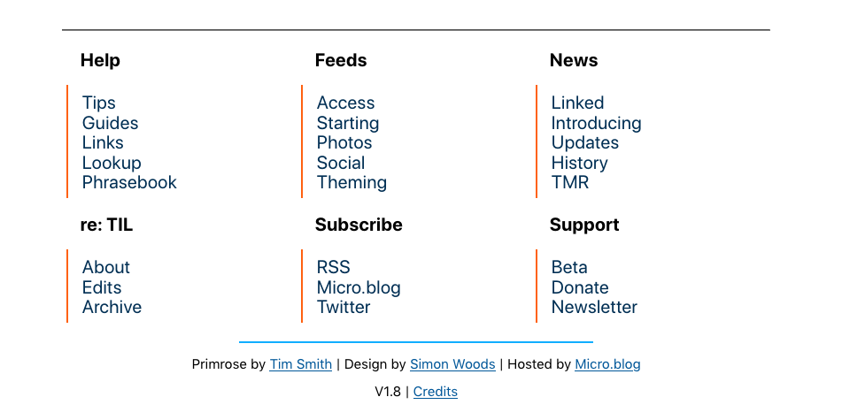
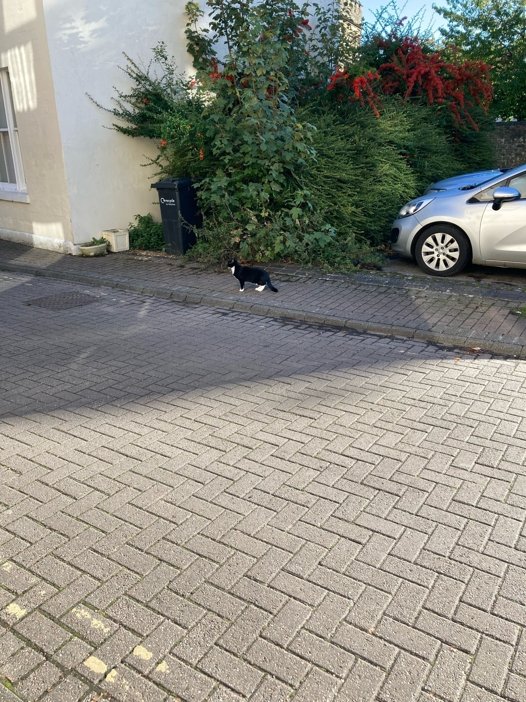

TIL 1.9: Design, Insight, and the Future
With the release of the newest set of updates to @TIL, I am happy to say that the unofficial companion to Micro.blog has entered the next phase of its development.
Let’s take a look at the release notes for those TL:DR fans out there:
TIL 1.9:
- 🆕 Banner at the top of the site.
- 🆕 Button for The Insight Program also at the top.
- 🆕 Listed Link buttons at the bottom.
- The IndieWeb Webring and Indieseek directory are both fantastic examples of the independent web doing what it does best.
- Thanks to both @schmarty and @bradenslen for their work.
- 🆕 Emoji prefixes for posts.
- Wider pages, larger text, design fixes.
- Unofficial added to the tagline.
- Large parts of the About page rewritten.
- 🆕 Banners + avatars, and profile edits; Micro.blog + Twitter.
- 🆕 Membership launched on Memberful.
- Buy Me A Coffee page closed.
Unofficial
One of the updates is for the edits made to include the word unofficial in the TIL tagline. This better reflects the reality of the endeavour; yes I do get help from the team but this is not an official part of Micro.blog at all. It’s all just me, making it happen, and as such it’s better to make this as obvious as possible.
One of the reasons this is important is cost. As time passes and TIL grows, and as my standards improve – albeit unsteadily for the past 18 months – I have reached an inflection point. The project can not remain stable or grow further without money, and whilst I wish I could tell you my recent big home move resulted in an immediate and entirely surprising increase in our income… I’m sure you’ll be unsurprised that is very much not the case.
As such I have closed the Buy Me A Coffee page and now invite you to take a look at the first membership offering for Today I Learned: The Insight Program. Right now it is entirely donation-based, with no rewards on offer. As I’m sure you can imagine, this is not the plan for the long term; in fact, the very reason I have moved to Memberful is due to the numerous ways in which their platform is so much better made for offering a variety of memberships. This is a start… I am looking forward to doing more.
You’ll notice on the Memberful site that I have detailed the costs of TIL, including my fundraising goal for this version of the membership. I am doing everything I can to work around costs; using free trials, renting, finding free versions of software, carefully managing my computer… just as much as I can think of. I hope my intention here is as transparent as possible; every single penny that is put towards a plan in The Insight Program will be put directly into running Today I Learned.
Here is a quick example of the current situation regarding costs:
- Setapp has expired. Having finished the 7-day trial of the rental service, I had quickly made use of a few apps for TIL.
- Although, to be honest, the ongoing cost of the subscription is likely not the best choice even if in the short term it could be helpful.
- NounPro Unlimited will expire in 3 weeks. The premium subscription for The Noun Project has already been put to use in a number of the design updates you can now see on the site and external profiles.
- Sketch trial will expire in 3 weeks. Similar to Noun, only in this instance practically all of the new graphics in use for TIL were made in Sketch.
- Much like with Setapp, I am unsure if this subscription makes sense in the long run. Though I have a back-up plan, which you can see listed on the Memberful site.
… and so I will continued to do my best in this way. Please let me know if you’re aware of any comparable free alternatives (MBP High Sierra 13.6), including that which is listed on the Memberful site.
Speaking of costs being covered and the overwhelming generosity of the community, I would like to give a wholehearted thank you to the multiple donors to the Buy Me A Coffee page. You’re all just fantastic and have left me flabbergasted, having literally helped my family move and thus massively improve our standard of living. On top of that, just 3 days ago Matt Cassem (@sarcassem) donated enough to cover email hosting for the next 12 months with money to spare that will be put to use in another part of TIL.
Seriously… overwhelming ☺️
Yes, so, you can help out with either a single donation or a monthly payment. The links to these can be found on the newly updated About page as well as the Memberful site itself.
Realign
Last week I changed the posting schedule for the site, introducing later posts as a result of an unexpected shift in my personal schedule. This may become a permanent change but I can’t say for sure. Either way I’ll continue to work to make publishing as reliable and consistent as possible.
Post Haste is currently on hold. Between uncertainty regarding email hosting costs and a switch to Fastmail that has been a little complicated regarding Buttondown hosting, there was suddenly something of a hurdle between writing the issues of the newsletter and publishing them. Thanks to the aforementioned good news regarding email hosting and the teaser screenshot posted by Manton last month, I don’t think it’ll be much longer before ICYMI is back.
Major design updates are now finished for at least the next few months. Version 1.9 means what it implies; the next change for the site, and likely the various extensions that make up TIL, will be 2.0 and all that entails. I have been working on ideas for this and look forward to getting my hands dirty with Hugo in particular. In the meantime I’ll make fixes and minor tweaks for smaller updates but as has once been said before: no new features.
It was both a lot of fun and quite stressful to put together these changes. In the end it has been the most satisfying update to make, and I hope you’ll join me in making this feel like just the beginning.
I am looking forward to building 2.0 but mostly, next, I can already feel the excitement for some new features that will hopefully be out very soon.
In the meantime, I’ll be back with regular activity throughout the week and will see you at the next big announcement.
Thanks for reading.
⏤ Simon
There were no posts from @TIL on Friday. Been finishing up the updates I mentioned previously in the week.
And they’re ready 👀
But first! Some regular posts…
Why does BBEdit start with a dark background as a default… and can you change it? Also… grey text on a dark background? Seriously?
🎵 Calling Crows (Instrumental) - AllttA
MKBHD should be a music label.
Between the new publishing progress indicator and the (practically) live CSS refresh, Micro.blog on the web is a much better experience. Thanks @manton 🙌
So that’s the regular posts for @TIL done for the day. Second day back, I think I’m back on track.
But I do have… something else. 👀
Want to read: An Absolutely Remarkable Thing 📚
(posted with Epilogue)
One of the things I’m going to work on is the viability of backporting apps for Micro.blog. I think it makes sense within the context of the flexibility of Micro.blog as a platform and the philosophy of embracing the open web.
Technology is better when it is inclusive.
Cleanup. Then, done.
– Patrick Rhone, When Things Are Done
I’d like this on a t-shirt, please and thank you.
I will be so much happier if I can ever use my previously mentioned combination of Micro.blog apps but I’m also aware that most people really don’t have time for using multiple apps for the same social network.
Our new home is going to be an interesting test of my gradual movement away from the big social networks in recent years.
I’m fine with the idea of having accounts there again. The difference this time is that I know not to rely on them for anything in particular.
Another day, another conversation on Micro.blog in which I cannot even tell for whom the latest reply is meant. Between a character limit and proper threading I am convinced this would be easier and thus more attractive to use. Especially since replies are random on the timeline.
Apps I wish I could make myself:
- Micro.blog with filters.
- So that I can have a non-photo version to pair with Sunlit.
- Micro.blog for books.
Unfortunately I am not an app developer and Micro.blog doesn’t include an “App Making for Dummies” guide.
TIL how to read binary. Thanks @neatnik!
Because I have an actual computer I’ve found it easier to work on different parts of @TIL. I now have parts of the project I work on to feel better about the parts that are frustrating in a given moment.
This is one of those things I realise that further motivates me to work.
Definitely getting an iPad again. The best way to work on design with instant access.
I mean, I’m not going to stop using paper. I’m not a monster.
There are so many websites that are hostile to older computers. Shameful behaviour from us, the collective web community.
Do you know who uses older computers? People with less money. We are discriminating against poor people.
Want a cause to care about/fund? How about that.
I’m working on a general update post about TIL. Time to be open about the exact state it is in, what I can and can’t do with it, and the likely future.
Moving has helped me to see a things more clearly than before, and now is the time for me to make decisions based on reality.
The one thing that did work with ProtonMail was DNS records for custom domains and Buttondown newsletters… unfortunately FastMail is being more difficult about this.
This is now one of those issues that is too much to handle. Thank god email subscribing is coming to Micro.blog.
Issues like this are exactly why I appreciate Micro.blog so much. Manton has repeatedly spoken about the importance of maintaining export features. It comes down to this:
Freedom of movement of data = independence online.
It should be a priority for all service providers.
Only now that I’m changing my email host from ProtonMail that I can see how they’re… like, a bad company. The many ways in which they make it difficult to leave… and putting exporting behind a paywall? Dick move.
I am nowhere near being able to afford those super MBPs… buuuut there is an iMac going for £400 not far from here. I think I could save up for that in about a year. 👀
I’m quite happy with how v1.8 of the TIL site has ended up. Feels like the small improvements have added up over the past few updates, and the larger redesigned elements are always fun to reveal. This time around the footer got the big change:

Water hardness. These are the things that occupy your time when you move to a whole new part of the country.
Water. Hardness.
Have yet to spend time learning Hugo; evenso I enjoy working on the theme for @TIL with some HTML and CSS. I love that I can make design choices knowing that in the future I’ll be able to implement at the template level, with basic customisation then left for temporary changes.
Noise-cancelling is sneaky. Once you have become comfortable with the benefits of isolated sound, it can be difficult to live without it.
Today the coffee shop is not conducive to longer form writing. I tend to favour that work either when the particular piece of writing is the only thing I have to do, or if I know my location is not going to change for a long time.
Neighbour wins privacy row over smart doorbell and cameras – Jane Wakefield
The judgment reads that Dr Fairhurst was “alarmed and appalled” to notice that he had a camera mounted on his shed and that footage from it was sent to his smartphone.
I don’t care how much you hide the Likes, or how private people think they are. It won’t stop the problems.
We need to stop thinking that addiction-based design is anything other than bad.
The smaller – and responsive – reply box on the Micro.blog website is giving me hope that an upcoming update will include a character limit. 👀
Every task completed for the move opens up more energy and time for the things I want to do, and have been wanting to do for some time. We are genuinely able to do more of the things we’ve always spoken about doing here. So lucky. 😊
Can confirm: TodayPoster works like a charm.
Number of browser tabs I’ve accidentally closed since getting my new Mac: 0
That is much less than when I was using my iPad Pro with Magic Keyboard. In that time the contrast between tabs wasn’t strong enough and the “snapping” UI would interfere with my movement of the cursor.
My 10-year old MBP is better than your M1 Machine Of The Future because I know which tab I’m in.
Suck it, rich nerds. 😎
Hoping we still get a day’s worth of wiggle room for late entries in the photo challenge 🙏 @jean @challenges
Between the coffee and catching up on Core Intuition it looks like Finish Friday is a reality for me with @TIL today. 💪
Got a message from Openreach regarding the broadband. It included a link to a video with help for setting up… on Vimeo 👀
Every now and then I think about the things I can do with this computer, the kinds of things that were either impossible or so difficult as to be impossible, and it’s a great mixture of anticipation and excitement.
Making plans from this position is so much fun. 😊
Yet another random magical encounter on a street. I won’t grow tired of meeting these neighbours 😻

The folks at iA have made a new Twitter account 👀

Now that the History page for TIL is up to date I have no doubt that the team is about to drop a big update 😂
What you can’t see: the sharp reminders that not everything is always as it seems with these beasties.

First day of the return of @TIL 🎉
Now in the new house, with a computer that is so very good, and a much better environment overall… this is a much more substantial return, thankfully, finally.
If you’re taking part in the October Photo Challenge, you’ll like the latest Tip. 👀
Aaaannnnd… we’re back 😎

I’m looking at these screenshots of the new Safari UI on Daring Fireball, and am reminded of when I recently used my wife’s M1 MBP. Now I am using my own MBP, it is 10 years old, and I’m using High Sierra… seriously, @gruber, my Safari is better which is just ridiculous.
“Now you can focus on the CoNtEnT! 🤪”
Nah. I’ll keep calling them websites, or “sites” for short.
Thanks for standing up for the 2-trillion-dollar company, though. Good effort. 👏

The new @challenges feed is great. 👍
That glow is from a light literally next to the door at which I was standing. Other than that, at night there is much more dark than light here.


Earlier today I announced the return of Today I Learned. This Monday @TIL will be back, including the immediate return of regular post types, updates, and… new things. 😎
A preview issue of ICYMI is currently available if you subscribe to Post Haste. This will soon disappear!
📣 Today I Learned will return Monday, 4th October
- Regular posts 💪
- Updated pages ℹ️
- Post Haste 📪
- … and more 👀
A special preview edition of ICYMI is available. You can check out Post Haste on the Subscribe page or subscribe, and receive the Preview, using the form below.
Interesting… earlier on I switched my domain back on for this blog and new posts did not appear on the Micro.blog timeline. I just solved this by adding the domain feed to my account. Previously the Micro.blog hosted URL was all I needed for the timeline.
The new auto-https for Micro.blog is ridiculous. Practically instant.
Related: simonwoods.online is back 🎉
The problem with good free hobbyist websites is that some people misunderstand; just because these good things are free does not mean you are entitled to have everything on the web for free.
- Pay house movers✔️
- Pay pet movers✔️
- Pay first month’s rent on the new house✔️
Tomorrow… the house moves.
Want to read: Being Mortal by Atul Gawande 📚
30.9.21 👀
The one thing the latest round of iPhones has made me realise is that I should consider buying another case for my SE. Just to mix things up a little.
Big day for the move. Confirming big parts of it with messages and payments and so on. The best news: I can travel with the kitties to help keep them calm during the 3-hour drive. 🤞
I have a Mac now.
It is 11 years-old.
My 2016-HP Windows PC fails in comparison.
… touché, Mac nerds.

Brand new part of @TIL is prepared and ready to go 😎

Every single time I think “bah I don’t want a new phone I’m all anti-digital addiction” I then immediately come across a reminder of just how good these devices are as video cameras.
For my life, that’s where the real value can be found.
I now have an inkling of life with only a phone for a computer.
How anybody lives in this hell I’ll never know.

I have been stunned by the outpouring of support from the Micro.blog community, having asked for donations to help my family survive the next month.
I will say more but for now: thank you all so much, you’re amazing. ❤️
Donations remain open; I’ll now stop posting reminders.
A last message about my request for donations:
Yesterday I posted a Plea For Help. My wife and I are struggling to make ends meet and in the past 24 hours the response has been amazing. I struggle to find the words to express my gratitude. 🙏
- You can read about supporting TIL.
Maybe Apple should introduce a Trusted Payment Program for the likes of Stripe and Paypal as a way to stop- oh… well, never mind!
🤦♂️
Reminders for my future self, when I have disposable income:
- This was very difficult.
- Lots of people in your own country, let alone the world, carry these problems all of the time.
- Be as generous as possible.
- Ignore shallow distractions with your money.
- Always support indies.
Tomorrow is the day I’m going to sell the iPad Pro.
Once we settle into the new place, I’ll return to the old and busted all-in-one Windows machine for as long as it’ll work. 😂
On the plus side, it’s better ergonomically and I can return to a full-sized keyboard and mouse.
(Final timezone bump)
Yesterday I posted my Plea For Help.
My wife and I are currently struggling to make ends meet and we are eternally grateful for any and all help during this difficult time. 🙏
(Timezone bump)
Earlier on I posted my Plea For Help.
My wife and I are currently struggling to make ends meet and we are eternally grateful for any and all help during this difficult time. 🙏


A Plea for Help
Earlier today I put out a short post to ask for help.
Unfortunately my wife and I have discovered that we will be short of money to cover all of our bills this month, and it is making what is an otherwise life-changing event into an all-too familiar ball of stress, anxiety, and frankly, shame.
With that in mind I’m going to step outside of my usual tight-lipped approach and provide a preview of the direct benefit to donating towards my efforts with Today I Learned.
Here are the things your donation can help me make:
- Guides: The existing Guides will be updated, and more importantly a whole new batch will be published over a short period of time. This will relaunch Guides as a regular post type, including special editions in which related Guides are published over the space of a week.
- Return to regular posting. Everything from before the break – Tips, Updates, Introducing, Lookup, the recently launched Linked posts, and ICYMI: the weekly catch-up edition of the newsletter – plus the return of The Macro Report.
- The rest of the special edition of The Macro Report.
- Reactivation of the Twitter account, with which I’ll make it easier for people outside of Micro.blog to see just how awesome our community is.
- Further design improvements to the site and Post Haste (the newsletter).
- Brand new regular post types, starting with a micro-guide that is entirely image-based.
- A new edition of Post Haste, built around staying updated with urgent Micro.blog events.
… and more. My plans reach well into the future, with everything built on a steady and sustainable timeline. On the Support page I state that I won’t make promises, so this feels even more uncomfortable to write.
However, I hope that highlights just how urgent my current needs have become. You wouldn’t just be helping my family, you would also be securing the path to Today I Learned 2.0. 🙏
I hate to ask, since TIL is currently on a break, but now would be an awesome time for you to send some help my way: Today I Learned donations
More info: Today I Learned Support
This move is tough on our wallet and we just need some help to get through the next month. 🙏
It’s always interesting to see people who like to talk about how they’re “sad to leave Micro.blog” even though they can make the choice to stay.
If I can choose to not be sad, I will always choose to not be sad.
After we move I’m going to set aside time for work in the community, local activism, etc.
I’ll share this on my blog, inspired by other folks on Micro.blog, and hope to see even more of such posts.
It is very easy to site on the sidelines and opine. Much harder to do the work.
Until I can afford to renew my custom domain, my blog is still available at the Micro.blog domain: simonmumbles.micro.blog
Also, until I’ve updated the blog with better links I’m available via email: simon@today-i-learned.net
The latest iteration of the Sunlit beta is slick. Quick question for @cheesemaker and @manton: are feature requests better via;
- the feedback button in Testflight;
- GitHub;
- Help forum;
- email;
- or on the timeline?


I’ve managed to fit in little bits of work for @TIL here and there during the move. I probably won’t get anything else done for a few days but there is one thing I can share, even though it is a WIP:
The donations for TIL, via Buy Me A Coffee now includes membership options.
The big announcements from the MacStories team are fantastic. I especially enjoy seeing RSS getting so much attention.
Timezone bump for @TIL:
I’ve put Today I Learned on a break. All of my time and energy is being used on moving home.
I have not set a date for bringing TIL back but I will still be around on Micro.blog and spending some of my free time working on future updates for the project.
Testing the upgraded Micro.blog hosting. 👀
TIL On a Break
As of today @TIL is on a break, and will return as soon as possible.
The move is all-consuming at this point and I am confident that recent updates have put the project in good enough condition to survive.
I’ll still be about. 🙂
Thanks for reading!
Not renewing Apple Music. Going back to my local library, with possible sharing if there is a good enough service (I have an iTunes Match sub at the minute).
My primary tactic is to save up for a good file player, probably from Sony, and no longer rely on the internet.
A few months ago I countered Manton Reece’s concern over iPad pricing with the notion that the much more expensive price of an iPad Pro from an M1 MacBook was justified.
I have since changed my mind. The inferior software dents the iPad’s value by a significant amount.
Question for @jean: approximately how much alcohol is required to get through all of this moving nonsense. 😓
Timezone-shifted prompt:
After a busy week on @TIL, the recently named newsletter Post Haste will help you get caught up!
The next issue of ICYMI will be released on Monday. 👀
Well that was a pretty good week for @TIL.
If you missed it or like getting letters, there is a newsletter for that: Post Haste
I’m writing the next issue of the weekly recap, ICYMI, and it will be out on Monday. 👀
Say hello to the redesigned @TIL. 😎

Welcome to TIL
Hi 👋
Today I Learned is the Micro.blog companion and guide, and I am the author.
With @TIL you can find your way around Micro.blog, whether you’re new to the platform or have been here for a while already. You can get hold of different resources; including tips, guides, links, updates, and the weekly edition of the newsletter.
Here are some links to get you started:
I’ll continue to share information and links about TIL but everything you need will always be published either on the site or through one of the external channels.
Welcome to Micro.blog. I hope you find the community and the platform as warm and authentic as I have. ☺️
See you on the timeline!

Looking forward to releasing some @TIL updates tomorrow. I nearly pushed the button on a few things early but remembered how much I enjoy adding a bit more polish and publishing with a more intentional approach.
Related: I love how much control you can have on the web.
One of the things I like a lot about the community on Micro.blog is that people can get all hyped up about a new app (Glass, lately), and I just don’t care… but! I still find it possible to have good conversations and read good conversations, and not once do I feel excluded.
Just took a quick look in Discover and saw a bunch of people who either haven’t presented at Micro Camp or I haven’t seen in the chatroom there.
This reflects the way in which Micro.blog has grown in a quiet way, without the founders and enthusiasts yelling at you about it.
For the folks who haven’t been able to attend Micro Camp: don’t worry! Neither have I. Sometimes life works out that way. :)
Testing out a new post type for @TIL with this post for Micro Camp.
What do you think; link-blogging on Today I Learned?
Maybe one of the reasons RSS doesn’t seem to be as popular as we would like is because we’re all hiding the link for the feed.
Now that I’m getting to grips with Micro.blog theming it would be a good time to make a move on that Working Group idea I mentioned a while ago.
Better understanding of Micro.blog templates and Hugo means that @TIL has had its first design-based updates that I was able to batch together. 👀
The Micro.blog template editor update from… uh, last year?… is so much better than the before times. I think it’s even helping me to gain a basic understanding of how Hugo works.
I’ve been thinking of ways to use Micro.blog’s granular URL structure for pages for quite some time.
Today I’m finally able to publish the result: New structure for the Links directory via @TIL 😎

Looking at @pratik’s photos as they go by and super jealous not only of the magnificent shots but also the offline break. 🙌
Pinch-to-zoom should be universally available on the iPad, in every single app, no matter what part of the app you are in.
Yesterday was a good day for @TIL:
- A new page.
- Big update to an existing page.
- This week’s Tip.
- The fifth issue of ICYMI.
- More Updates posted than ever, which continues today.
If you subscribe to the newsletter you’ll immediately receive that new issue of ICYMI, with more info!
And there it goes! This week’s issue of ICYMI has been sent to subscribers.
It covers the past week’s worth of activity on @TIL, with extra detail and greater context, and a little look at the week ahead. 👀
Subscribe now and you’ll immediately receive the latest issue.
I’m writing the new issue of ICYMI at the moment. Today was a little hectic, so you can catch up via the newsletter on the Subscribe page. You’ll immediately receive last week’s issue!
I wish I was doing more for Micro Camp. Even so @TIL is continuing with… renewed energy. 👀
Ok. Posts done for the day on @TIL. Time to go for a walk.
I’ve put the link to the Unofficial Micro.blog Discord back up into my blog’s menu.
If you’re making something for Micro Camp and would like a channel for talking to other folks involved, just let me know!
(@-reply on Micro.blog or email: simon@today-i-learned.net)
Reminder that your average popular tech podcaster is likely to dismiss ideas such as Micro.blog because they are mostly interested in using the social web as a tool to make money.
Some of them will be honest about this.
During my recent break I watched Laputa: Castle in the Sky, My Neighbor Totoro, and Kiki’s Delivery Service.
Ghibli is a dream factory.
Couple updates:
- My dramatically announced hiatus is over. Instead, I’ll be a little quiet especially during the actual moving part of the move.
- In answer to my own question, yes I am going to continue with @TIL.
… turns out things aren’t as overwhelming as I had thought. 🤦♂️
This hiatus is turning into a break that is less about doing less and more about deciding on exactly what to do.
It might be a part-hiatus. 🤔
Should I Continue?
Regarding Today I Learned:
The project is currently on hiatus (covered in the latest update). Whilst part of the reason for this is good (the aforementioned move), there is also a negative motivation; my work is currently unsustainable.
What I mean is that I lack the hardware and software to both maintain and grow Today I learned, and have no way to gain those resources. These include but are not limited to:
- A computer. The iPad isn’t good enough as the only machine.
- Hosted services. Email, hosted accounts, sharing, storage, publishing.
- Editing software. Graphics, code, video.
The greater access to these tools, the sooner I can push my ideas into full production across the project.
Whilst this issue might be resolved in the near future (as a result of the move), it is also possible that the change to my family’s life will be so significant that there will be no room at all. Even if I were to be in a much better position to work on Today I Learned, it offers no immediate and obvious route for either earning money directly or in the near future; any potential path for advancing my career ambitions seems to point to a long-term result. There is a great deal of uncertainty here.
I could gain the necessary resources but still choose to put an end to Today I Learned. In this instance I would instead do everything needed to attain paid work of a similar kind (independent, remote, maybe on the web) and use a combination of the existing published work of Today I Learned and the plans that are currently WIP as proof of my abilities in pursuit of said work. On top of that I would also continue to work on other, less ambitious ideas to beef up my body of work.
Given the limited space for me to do this kind of work, to do any sort of work, the time has come for me to make a decision. I am ready to take the next step with regard to ambitions beyond my work as a carer and home-maker. Now the question remains:
Continue with Today I Learned or commit to work in which resources are guaranteed?
Ta-ra!
A quick update to say that I’m putting Today I Learned on hiatus as of this post. The aforementioned unfinished work will either be published when I return with the project, or will end up in the “what-if” pile.
I’m both excited about what’s to come but also nervous for @TIL. Unfortunately at some point voluntarily-run projects just get out-run by the real world. Oh well, I guess…
Hopefully I’ll be back before I expect but if not, thanks again everybody. It’s been wonderful to see that there are parts of the internet where some people are willing to support some of those lofty ideals from The Before Times.
Perhaps we’ll meet again. :)
Summer hiatus
I didn’t think I would be writing this kind of message again but life is funny that way.
tl;dr — Good news! My wife and I are moving for good reasons. I’m taking a break from the web for a few months, and putting Today I Learned back on hiatus until October at the earliest. This includes deciding whether Today I Learned will return at all.
Last week Claire and I took a trip to another part of the country, the purpose of which was for her to attend a job interview. The wonderful news is that she was offered the job! We took the contract home with us a day after we had arrived and then over the weekend continued to talk about this possibility; the prospect of moving again, only this time it would be different.
This time it would be into a place, in all sense of the word, that has much greater potential for us to do the things we’ve been wanting to do for a long time. An opportunity not to be taken lightly.
Yesterday I took a brisk walk to the nearby post box and sent the signed contract on its way. So now, as seems to be the trendy thing to do on Micro.blog, we are moving. We’ve done this a few times before but never with such a household’s worth of possessions nor to such a great opportunity. It’s fair to say that the next couple of months are going to be full of all the nervous energy you can think of, with all kinds of priorities shifted around.
What that means is a couple of things:
- It’s highly likely that I won’t be around on the web in general.
- Today I Learned is yet again undergoing a period of inactivity; a hiatus, for at least 3 months.
The first point is not so bad, since it’s good to take a break from the internet on a regular basis.
The second, however, is complicated…
I have been so happy to gradually bring Today I Learned back to life, and up until the past couple of weeks things were going particularly well. Now I have been given an opportunity to think about the project in the long-run, to consider my opportunities and what may come.
Right now there is no more room for Today I Learned. I am limited by my resources, or lack thereof, and have reached a point where I am ready to work on more than just a hobby project whilst lacking the opportunity to make Today I Learned more than it is.
Over the next week or so I’ll publish the few posts and edits that are already in the works. After that I’ll post an update when the hiatus begins, and that’ll be all for the next few months.
So I’ll be back in October either way. See you then!
👋
The older I get, the more I prefer tennis over football. Although the video technology in both sports really has been for the worse.
What’s a good alternative to Discord and Slack?
Let’s talk about the alternatives and bring something good into focus, rather than dwell on useless negativity.
Greg’s latest post about logging off has further inspired some recent throughts of my own. I have recently strayed from my efforts to take a better hold of my time from earlier this year. Time to get back on it.
I’ve just found Practical Typography by Matthew Butterick and, uh, wow.
The past week has been… a lot (in a good way!). Unfortunately that meant @TIL took a hit to regular posting but I’m back on it now.
People who are 15 years younger than me are starting, from my POV, to look 25 years younger than me. What the fuck.
🇺🇸🇦🇽🇦🇱🇩🇿🇦🇸🇦🇩🇦🇴🇦🇬🇦🇷🇦🇼🇦🇺🇦🇹🇧🇸🇧🇭🇧🇩🇧🇧🇧🇾🇧🇪🇧🇿🇧🇯🇧🇲🇧🇹🇧🇴🇧🇦🇧🇼🇧🇷🇧🇳🇧🇬🇧🇫🇧🇮🇰🇭🇨🇲🇨🇦🇨🇻🇰🇾🇨🇱🇨🇳🇨🇴🇨🇬🇨🇩🇨🇷🇨🇮🇭🇷🇨🇾🇨🇿🇩🇰🇩🇲🇩🇴🇪🇨🇪🇬🇸🇻🇪🇪🇪🇹🇫🇴🇫🇯🇫🇮🇫🇷🇬🇫🇬🇦🇬🇲🇬🇪🇩🇪🇬🇭🇬🇮🇬🇧🇬🇷🇬🇱🇬🇵🇬🇺🇬🇹🇬🇬🇬🇾🇭🇹🇭🇳🇭🇺🇮🇸🇮🇳🇮🇩🇮🇪🇮🇱🇮🇹🇯🇲🇯🇵🇯🇪🇯🇴🇰🇿🇰🇪🇰🇷🇰🇼🇱🇦🇱🇻🇱🇧🇱🇮🇱🇹🇱🇺🇲🇰🇲🇬
When I say I’m “enjoying Trying”, what I mean to say is that I adore it.
If you like Ted Lasso, you should try Trying. 📺
Enjoying Trying. Great selection of songs, which is made even better by the fact that somebody at Apple had the good sense to maintain a category for the music in their shows.
You have to search for “apple tv” in the app, since apparently Apple hates URLs.
I have learned two things over the past 18 months;
- people do not know how to wear a mask;
- people do not know how to measure 2 metres in length.
One of the advantages of Micro.blog replies being limited to 280 characters is that people will be less likely to load up the “help” and “manton” accounts with lengthy requests that would fit much better in the forums or via email.
Globe key as a modifier is a good idea.
TIL we’ll also be able to use arrow keys to navigate through apps on the home screen and use the return key to open an app. A great combination with system-wide tabbing.
The new SharePlay feature from Apple is nice and all but unfortunately I only ever want to share things with people during a pandemic, so the feature is late and entirely useless.
Failed again, Apple. #WWDC #InsiderKnowledge #BecomeAMember
Listening to the WWDC Connected. The criticism of “late” features because apparently the pandemic is for sure over is, uh… uncomfortable.
Not only is that a big presumption but now Apple shouldn’t make features for people who find it difficult to socialise in physical spaces?
The weirdness of re-discovering one of your favourite albums from years ago, then looking for the band on the web and finding barely any evidence they even existed.
These are the times I most regret throwing away CDs.
iPad improvements from the WWDC keynote are welcome. Unsure if anything has changed about background performance, retaining state of apps (especially websites) but the navigation-based updates look good.

As always, with WWDC I’m going to just watch it with nothing else happening. Even if I don’t get what I want, I hope Apple announces tangible improvements that will help as many people as possible.
One of many examples of how absurdly bad the hardware keyboard support for the iPad truly is.
What happened to “measure a thousand times”?

WWDC wish-list:
- Major iPad OS upgrade.
- desktop-level usability; navigation, keyboard support, etc.
- this includes Safari.
- Developer documentation.
- both retroactively applied and as part of a new, consistent process.
Quick update for @TIL:
Per this announcement, all posts, updates, newsletter issues, and anything else are on hold until the 8th.
Between the weather and an appointment on Friday, this is a good week for a break. I look forward to resuming the gradual reactivation on Tuesday!
I keep seeing people push for new features on Micro.blog that would make it more complicated. This is worrying, since there are already some basic things missing, and fixes needed, and I would hate to see WordPress-style bloat creeping onto Micro.blog.
Using hardware keyboard with iPad:
Settings —> search “cursor” —> select “Gliding Cursor” —> increase gliding cursor speed.
This thing is set so slow that it contributes to the feeling that the machine is actively getting in your way. Helps to make it faster.
I have backed precisely one Kickstarter in my life, and every time I get an update about it I feel so happy.
Quick reminder regarding @TIL:
- Today I Learned is back! 🎉
- Regular post types are returning gradually. 🧑💻
- Pages are being updated on a regular basis. 💪
- The newsletter is up and running. 😎
… and everyday I am happily working on more. 👀
Bob Dylan: 80 things you may not know about him on his 80th birthday — Paul Glynn, the BBC
I wonder if this is entirely accurate, @ron? 🤔
Does Safari on the Mac still steal the feed:// protocol for Apple News?
I’ve tried using it on iPad and nothing happens. Meanwhile, URLs for feeds (.xml, etc) fail to load the file as a page and throw up this message: “Safari cannot open the page because the address is invalid.”
I recently did a quick calculation of just how much money I have missed out on as a stay-at-home carer. This includes the potential alternative in which, and I know this is crazy, we as a wealthy nation paid all carers.
It’s a lot of money.
Inconvenient digital thing: “OMG THE UTTER SHAME OF THESE DEVILS WHY DOES THIS TAKE EFFORT TO USE”
Inconvenient physical thing: “Welp that’s just the way it is I mean what can you even do”
… humans are weird.
The Today I Learned newsletter returned last week! The third issue will be released tonight. If you sign up now you’ll;
- Get the second issue of ICYMI tonight. 🎉
- Receive instantly the first in a special edition series of The Macro Report. 🤯
- Support an indie. 😎
👉 Subscribe 👈
Apple Announces New Audio Features for Apple Music Subscribers - MacStories
… which Apple confirmed to The Verge, is an Apple Music exclusive. In other words, you won’t be able to purchase lossless versions of music from the iTunes Store.
One of my favourite changes to my behaviour as a writer was massively reducing the amount of qualifiers used whenever I state an opinion.
It’s ok if people disagree with what you say; it is not the end of the world.
It’s ok to choose to use Facebook or to not use Facebook.
It is extra ok to not insult people depending on their choice.
Life is hard enough, ok?
Has the post count in the Mentions tab on iOS Micro.blog always been so small? It must be limited by date or something…
iPad regrets
Re: my realisation that the magic keyboard can not make up for iPad OS limitations
At least with my old Windows machine I could brute-force certain things — you know, like you can when you have an actual functioning browser — but on the iPad that’s either not possible or full of so many little catches that it becomes a fool’s errand.
For all of the things I like about this machine, and that list is long in comparison, the fact remains that my old and busted Windows computer was overall a much better computer.
To that end, I agree with Manton’s incredulity regarding price disparity and now wish that I had chosen a Mac of some kind instead of this iPad.
If Apple doesn’t fix certain things about iPad OS this summer I’m going to sell this magic keyboard. If I had a Mac right now this would still be the case; this machine is a great tablet, however not nearly good enough for anybody remotely interested in the web even as a hobby.
Music library control of any kind on iOS is crap. Apple needs to prove they “love music” or “have it in our DNA” or whatever.
Using the free version of WorkFlowy on Safari for iPad because it’s still the best app for list-based outlining that works for me.
Such a shame they haven’t, or can’t update the iPad app to match the keyboard-based controls from the web.
I look forward to trying out the new Bookshelves feature for Micro.blog. Unfortunately I will have to wait; the idea of multiple accounts doesn’t work well for Safari on the iPad in general, let alone for any particular platform.
What I’ve seen so far looks great. So I’ll wait.
Seeing people request that the new Bookshelves feature on Micro.blog be expanded to include movies, music, and so on.
If that were to happen I hope the feature would become a general “Library”. It’s quite a big addition as is, and feels a little odd next to the other tabs.
The first issue of the new Today I Learned newsletter has been released. 😌
Re-introducing Today I Learned
I am delighted to say that Today I Learned is back! The main post covers key information, whilst the thread provides greater context regarding Today I Learned itself.
The newsletter has also returned. The details are on the Subscribe page.
To vidya gamer micronauts re: Nintendo 🕹
Is it better to get the physical or digital copy of a game?
There are people who contribute to making things better, and then there are people who choose to run away. I endeavour to be the former much more often than the latter.
When our younger kitty turns on the charm she really turns on the charm. It’s like stepping into a Disney movie.
I’m looking forward to posting things in the evenings again. There’s something about evening blogging, something in the air even.
I’ve just marked down my hours for the first ever Micro Camp. This is such a good idea!
A year’s worth of updates in a single edit: the soft return of Today I Learned.
Would it be weird if there was a Micro.blog working group? Like, a shared private space for those of us working in an unofficial capacity on Micro.blog things to get together and talk about stuff, work on stuff, etc…
Maybe this already exists and I haven’t found it?
Listening to Tazawako by Les Gordon (feat Rosalie Dubois) and like so much of his music it just fits perfectly with warm Spring-through-Summer.🎵
The messy implementation of custom domains for Hey is why two things are true;
- as a customer, never purchase based on future expectation;
- as a developer, never use hype and promises to sell your product.
Do want:
- The new iMac
- iPhone Mini (eventually)
- TV remote(!)
- AirTags… I think?
Also, the M1 iPad is ridiculous.
I am often caught off guard by the posts I read on Micro.blog. In a good way.
The more I find things on the web that cause contemplation, the better I feel.
I need an app in which I can select a set of date-based items (events, tasks, etc) and edit all of them so that the attached dates all move forwards by whatever length of time I choose.
Basically: mass edit date for a schedule. This includes items from the past.
Unless it is literally your job to do so, I can promise you that all of that energy you’re expending in the act of getting frustrated over a website not working properly does nothing good for your life.
Life is too short to let The Internet have such power over your life.
Recent development activity on Micro.blog
Over on the Micro.blog Help forums, @numericcitizen said:
Is MB a side-line for Manton ? Is there other people involved in maintaining this platform? I wasn’t expecting the pandemic to be an issue for an internet-only business like MB. I could be wrong, for sure.
From what I understand:
- Manton does large amounts of the work for the tech side of things (servers, new code, etc). That’s on top of support, marketing, long-term planning, being the most visible part of the platform, and you know, having a life.
- The pandemic literally affected every part of our lives. A virus doesn’t care what type of business you have.
- Texas, where Manton lives, was hit badly by a ridiculous weather event, only further compacting the pandemic.
Also, where I definitely think you are wrong is the scope of Micro.blog and how it differs from other such platforms. Guess what? We don’t want the team to work themselves to the bone in a terrible environment and thus inevitably burn-out.
Have you listened to Manton on the Micro Monday podcast? Between every episode on which he has featured, including the latest, and the way he writes about Micro.blog it shouldn’t be too difficult to understand how this works. In fact in that most recent episode (the 100th, with Patrick Rhone) there was a discussion about Micro.blog taking on new people. Not only that but Manton’s own development podcast, Timetable, also covers some of these issues.
Maybe some of these things aren’t obvious enough and it would be good to make it explicit in some way. However, I could be completely wrong about all of it. 🤷
(Aside: @-mentioning Manton in your reply was an odd choice, as if you’re trying to call him out. I hope that wasn’t your intent.)
BBC headline: “PM says easy and cheap”
What the PM actually said: “ … as easy as we possibly can.” and “ … as affordable as possible.”
Oh look at that, no byline or anything.
For some reason convenience and using as little effort as possible have become the most desirable outcomes of our efforts to live, even though they obviously come with lots of serious costs; you know, to those who bother to think about it for longer than a few moments.
The new big consent page blocking YouTube has certainly been helpful since I deleted my Google account; it has become easy to immediately close the tab and never choose to use it as a search engine.
If I ever need to use it I’ll do so separately from my personal data.
Seeing the disparity of access to vaccination, the contrast between those in the mega rich world of the US and UK, and then everybody else… it’s sobering, should you choose to care about other people.
I then think of my own life since becoming a carer. Familiarity.
The moment a note-taking app shoves a form for account registration in your face as the first action to take is the moment I decide to ignore it entirely.
I’m not going to recommend Basecamp to people anymore. Exporting has been horrible. Such (loud) seemingly pro-web developers ought to have a better attitude insofar as being open and flexible.
Posting things to The Internet does not have to be treated like a career by people who want to have fun.
It is more than OK for you to not “fall into a new career” when you just want to enjoy using different software.
Making room for fun is good, essential even. You do you.
Tech fans: “We need opinionated software!”
Developer: “Here is some opinionated software.”
Tech fans: “No not like that.”
I recently switched back to making my iPad my main computer. Even if I end up using Windows again — which I hope to avoid — there is no way I am going back to the big all-in-one from HP; it was awful, compared even to this tiny 11-inch hybrid.
I really want to work on Today I Learned and get more involved with Micro.blog things. Hopefully my recent resurgence in other parts of life will make this possible via a schedule that has been difficult to establish over the past 12 months.
I’m starting to realise the extent of power in productivity apps on iOS, and more importantly the ways in which they can help to balance out the seriously compromised web browser.
Latest example: Anybuffer, which I’ve just added to my iPad.
I keep seeing people asserting with great confidence that:
- blogging = inconvenient
- and social media = convenient.
I disagree.
I suppose “Follow” being used for podcasts in place of “Subscribe” makes perfect sense in a world full of “Content” and “Creators” and “Influencers”.
Gonna send some emails over the next few days.
… no, I cannot possibly justify the cost of HEY so it’ll be from good old ProtonMail. 😂
With my gradual return to the web complete, it’s time to get back to making things. Fortunately my professional ambitions pair nicely with an existing project I was loathe to put aside.
I just took an interactive quiz to test my readiness for a degree in computer science. Aced it, loved it, and annoyed at myself for rushing into dropping those 4 points.
It might not happen as quickly as I would like (TBD) but I’ve got my plan set for getting this degree. 💪
Note:
The “whole of Britain” is in fact not concerned with events regarding the royal family.
Many of us have actual lives to live.
TIL about audiobooks available via public domain with LibriVox.
AnkiDroid is exactly the type of app I didn’t realise I needed when I was using Android. It’s great to see that the developers finance the project via Open Collective.
I made a Discord server last year for people on Micro.blog. Since the service for Micro.blog is currently a little unreliable, I re-upped the invite link: <discord.gg/3v4rvgKn>
Oh, Craft hides syntax? That’s a shame. I’m with Snell and Gruber on this one.
(h/t Colin Walker)
Every single time somebody opposes Google by saying “use a different Chromium browser” the people making decisions at Google get a bump in their bonus pay.
What a clever trick they’ve pulled on seemingly attentive and capable people.
My favourite thing about Hey so far is the degree to which it’s encouraging people to think about alternatives to big social media.
I wish Fried had not declared blogging to be difficult due to having to choose a system or whatever. As if paying $100 per year for email is “easy”.
Going to try my hand at CJ Chilvers’ interpretation of GTD.
I don’t feel confident in using software as my reliable capturing system. I’ll trial a notebook and see how it goes.
I see the “lifetime” label for subscriptions has come back to bite the Weather Line devs on the arse.
No doubt the people who are angry will choose to only direct their ire at the indie devs, rather than the massive platform.
If the folks at Proton can offer a free product, which I assume is possible at least in part due to the business made with the paid product, does that mean Hey will also be available for free one day?
- Apple Music subscription expires tonight ->
- Tomorrow I rebuild and finish the reclaimation of my library ->
- I can then properly sync my iPod with playlists and all ->
- Choose a day to find the best hardware player (first thought is Sony).
Love the iPod but it’s a dead product.
The problem with using a computer a lot is that it is easy to forget how to set something down.
This activity is what enables us to find the right state for focus on any number of tasks.
It’s OK if you leave your computer, whatever form it takes. Nothing bad will happen.
November by Max Richter (from Memoryhouse) is a piece of music I could listen to at any time of the day. 🎶
Patrick Rhone inadvertently provides a succinct explanation as to why I dislike roadmaps, pre-announcements, and hype culture in general.
Instead:
- Make the thing.
- Don’t talk about it.
- When it’s ready; show and tell.
All adults being offered the vaccine by August proves that centralised government still has an important role to play in our democracy. However, it’s more important than ever that every concerned citizen does more than just get angry on the internet about our collective failings.
I’m spending this weekend setting up a new system for using my computers. It’s time for me to both strip things down where needed and have an actual considered approach to this; with greater intention I believe I can finally lay the technology foundation for my healthier lifestyle.
TIL you can liberate your audiobooks from Amazon.
We just think that surfing the web with a decent screen and physical keyboard is simply more productive and comfortable.
The folks at Mudita are saying the right things. The Pure phone looks promising but I’m definitely waiting for reviews before even considering it.
The Stages of Joining Micro.blog
- What even…
- Oh this is nice…
- But it’s missing this…
- Actually wow this is really nice…
- … turns out it doesn’t really need that. ¯\_(ツ)_/¯
(much later: … wow where did all these hobbies come from)
My tech future
One day, in the future, I will have;
- a basic phone;
- an MP3 player;
- maybe a laptop;
- a few reliable notebooks;
- a selection of analogue watches;
- and a camera.
At this point I will have abandoned the world of personal branding and influencers and whatnot, and will likely post dispatches from my dusty old blog.
And I will be oh so happy.
(inspired by Jack’s astute observation)
Maique’s indecision regarding which photo service to use both makes me feel better about my own uncertainty and has me thinking about it seriously again.
I’m unsure if I want to post photos in more than one place, and if I want to see them in more than one place. 🤔
Yelling and lecturing at people to not use Facebook is about as useful as posting your political opinion.
That Revue acquisition by Twitter is a surprisingly slick move. Certainly adds food for thought when it comes to considering new projects that best suit the “largest audience possible” strategy.
Password security is far too important to me to be so easily swayed by how cheap the software might be. I also understand this is often not a simple choice; it wasn’t that long ago that we could never dream of even a single recurring subscription for anything.
With the current freezing temperatures in mind; I don’t know if it will return but I was lucky enough to catch some of the snow from a few weeks ago.
Cynicism in the Apple fan community
Listening to James Nestor talk about the importance of breathing well took my mind, again, to my unease at the behaviour of certain parts of the Apple fan community who like to make cynical jokes about the Breathe feature on the Apple Watch.
Maybe we would all feel better if we spent less energy on desperate attempts to look clever in public and more energy on embracing such basic ideas as literally learning to breathe well.
Each day I’m getting closer to having dedicated time set aside for blogging and project work. The three-month hiatus was necessary and I’m finally near where I was, from a mental and physical perspective, at this time last year. 💪
Hostile language might feel good to use in the moment. But it doesn’t convince anybody to do anything constructive.
If you’re going to make a point, why not do it well.

Adverts in podcasts
There are two types:
- Invasive;
- almost always delivered by somebody from outside of the show;
- rarely ever relevant;
- often appears within a pre-prepared section of the show, basically scripted;
- commonly linked to attempts to track listening, for example “dynamic”.
- Curated;
- almost always delivered by the hosts themselves;
- often relevant, or at least interesting;
- mostly worked into the show in an organic manner;
- highly unusual if linked to any sort of creepy tracking.
I find myself more and more unsubscribing because of the first type, even if I like the show.
I’ve reached my limit on dealing with website pop-ups. The moment it appears, I leave the website and lose all interest in whatever was published.
This is for all types of pop-ups. Absolutely obnoxious nonsense.

I understand that Signal is safer than SMS. However, it is such a shame that they have yet to develop a way for you to keep your phone number hidden.

This was my second cup of tea for the day. The first, my morning beverage, was sadly due to a lack of coffee.
A new grinder is on the way to solve this dilemma!


This iPad Pro is great, such an excellent computer for the majority of the needs of the average person.
Unfortunately, I’m bumping against the limitations of the software at an increasing rate, especially as I’m gradually returning to above-average use of a computer.
We will provide your information to you as soon as we can. Usually, this should take no more than a month.
This is part of the message you get when exporting data from Goodreads. Yikes.
I understand home ownership comes with a lot of stress and problems of its own but right now I want to strangle the people in charge of social housing in this country. There is no way we can hold private landlords to any sort of standard when the public version is shit.
Every single time you want to post about a celebrity politician (you know, the national types who get all of the big press), do this instead:
Post about somebody in your local community who has power. Doesn’t matter which position they hold.
Understanding The Behemoths
I’ve returned to thinking about the internet and what it is, in light of working on what it could be. Most recently I posted about the rat-like presence of Google.
Of course this is not disimilar to worrying about S3, Azure, and even Google’s own server hosting. Then take a look at technologies such as React, massive software development-based sites like GitHub, and even the ties between the open web and mega-companies like Samsung with regard to open source…
The internet, much like the real world, shows many paths to living life connected to all sorts of awful people with very few options for small, self-starting groups of people to truly establish themselves free from the hideous behemoths our societies have built over the past many decades.
I’m not discouraged by this. I simply believe you have to gain an understanding of the mountainous obstacles that stand before you, should you wish to overcome them at all.
Very quickly realised that avoiding Google on the web is practically impossible. Specifically, the number of people choosing to use Google Analytics and the like means that you are, at the very least, in-directly fed to The Great Maw.
The main reason I’m attempting to live a life without technology built around invasive tracking (shunning certain websites, deleting accounts with Google, Facebook, Amazon, etc) is that I think about the day I will die…
I prefer to be remembered as something other than just data.
Twitter doesn’t work in my browser at the moment.
I think a lot of people could benefit from this exact error.
One of the great things about the internet is that it’s easier for us all to learn about that which formal education excludes. We can get access to knowledge that does fit neatly within the parameters of whatever the current government deems acceptable.
This is important.
Reminders about subscriptions for software, especially for iPhone and iPad:
- The business model in its current form is fairly new.
- Apple controls a lot of how this can work.
- Apple has worked hard to push developers into embracing this business model.
Protests and Power – Idle Words h/t @jeremycherfas
Maciej Cegłowski has done it again. Essential reading for every citizen in countries like the US and UK, no matter your affiliations or opinions.
I wish there were tracker-less, open-web-friendly versions of SoundCloud, Spotify, Apple, and YouTube.
Maybe the problem of good and fair compensation for music will always be the immovable obstacle to such a thing.
For those of us who enjoy Micro.blog a lot (I love it tbh) but really don’t want the noise of certain discussion topics, you can use Gluon with its muting capability.
Gluon is great anyway so you can see more info on the website for the app.
I need noise-cancelling wired headphones, for use sitting at a desk. Has anybody with a similar set-up found a pair that they like?
Is there anybody out there who uses OmniFocus without a Mac? I’m wondering if it can work just as well with a combination of iPad Pro, iPhone, and Watch.
Too much of my blogging has focused on the negative side of events. Time to put some effort into highlighting the many good things that our odd little species creates, maintains, and shares.
Televised debate =/= progress of a democratic nation
Remember: there are bad people who want you to get angsty over this television show. Don’t give them the satisfaction; instead, put your energy into those people who are doing the hard work of making things better.
The big updates to Micro.blog are brilliant. Amongst the many things I am still processing, the redesign for the web does such a good job of both putting better focus on the timeline and making it easier to access different features. So very good. 😍
The more I try to use my iPad for basic web-based tasks, the less impressed I am buy this expensive machine. 😒
I am no longer sharing links to websites with the following:
- Cookie managers blocking the site.
- Paywalls blocking the site.
- Browser notification pop-ups.
- Newsletter sign-up pop-ups.
- Invasive tracking technology.
As such I might not link much but at least it won’t be crap.
Feature request for Apple Watch Fitness:
A “free day”. You can choose a day in which your activity is not counted towards streaks and trends.
If your family lived in a corrosive swamp-land, would you say “welp what can I do!”?
Hate to tell you this but Facebook is prime swamp land.
Starting to think we need a very public list of every website that has such awful tracking technology embedded into it that you need to go through a cookie manager just to use it.
All of these websites ought to be on a warning list until they renounce invasive ad tech.
There are days when I think about my choices to opt-out of Google and Android, and “smart home” devices, and massive surveillance-based social media and I wonder: is ignorance truly blissful?
Would it be better to stop fiddling with tech and just use it as an appliance?
With regard to improving the world, if we only ever accept what we consider 100% purely good efforts then guess what? Nothing will ever change.
We must embrace pragmatism and compromise if we’re going to make any sort of progress.
One of the smaller notes of this preview for the upcoming Micro.blog updates that has me as excited as the headline features is near the end of Manton’s post:
… such as (finally!) editing replies.
🙌🙌🙌
Just downloaded a film from Vimeo and it was super quick, despite the size. Yet more reasons to use platforms and websites with an onus on quality rather than quantity. 🙌
Hi, person who runs an online store. 👋
So you know, the various pop-ups for browser notifications and your newsletter with 10% off! not only discourage me from buying your stuff but now also encourage me to bad-mouth you to other people.
OK? OK. 👍
Now that I’m getting used to Apple keyboard shortcuts (cmd, etc), it has become frustrating to only have limited access to them on the iPad.
Thankfully touch still works very well, however I am starting to think I’ll just end up using a MacBook for my mobile computing.
I was feeling good about Quotebacks as a generic web tool but the fact that the keyboard shortcut for the Firefox extension doesn’t just work for me is a bad sign.
Too much of indie web type software continues to be this way; in need of messing about with settings to be useful.
I am baffled by the fact that Apple hasn’t made exceptions for Mozilla, so that Firefox can truly exist on iOS.
Right now it seems like Windows is a better option for open web advocates, especially when you factor in Microsoft’s massive pro-developer push in recent years.
There should be some sort of fine-based punishment for companies who make product-related instructions available via PDF and it is literally just an image of the physical copy.
Re-reconsidering my email situation. Going to give the rules and filters for Proton a good go before thinking about switching; I need to actually deal with my existing mail rather than hide that task with the false work of switching provider.
Time is a good decision-maker.
Time to entirely retreat back to my blog, with Micro.blog being my only social media. As soon as Bokeh is released, that’ll at least be a good place for private sharing of photos (undecided on whether to use it for public yet) and that’ll be all.
Reminder for myself: Never Silo
This morning I have exercised more for one day than has been the case for years. Very much on track with my plan to significantly improve my fitness; the next step is to give the local gym a try.
I forgot just how good it feels to get moving with such intent. 💪
The Home Office has frighteningly little grasp of the impact of its activities in managing immigration.
– Meg Hillier MP, chair of the Public Accounts Committee
Apple: Developers dare to not use IAP and freeload.
Also Apple: Here, have 24 hours notice for the full release of the new version of iOS.
The degree to which Tim Cook is an under-reported asshole with regard to developer releations is astonishing.
I know that I have blood on my hands by now.
– Sophie Zhang
A data scientist formerly employed by Facebook as part of its moderation efforts against corruption has spoken out. If you’re going to keep using Facebook, at least read about the cost of that decision.
Thinking of going back to Fastmail. Protonmail is good but I can’t use it with a different app and their own app is meh at best.
Reminders;
- staying informed and live-blogging collective misery are not the same thing;
- if you’re un-well you are not at your full capacity to help other people;
- you will not regret having spent less time feeling miserable because of the fucking internet.
(ﾉ◕ヮ◕)ﾉ*:･ﾟ✧

It was impossible to speak to a human at Instagram … It is like they don’t want to be contacted.
– Emma Heathcote-James, via the BBC: ‘Scammer clone my business on Instagram’
A frightening and depressingly familiar story.
If you are cloned, take a photo of yourself with some official ID and email Facebook
– advice from Jake Moore, security specialist at anti-virus company ESET
I loathe the degree to which so much of our society has surrendered its power to shitty companies.
I would, without hesitation, pay an extra $60 each year if Apple made it possible for Marco Arment to make Overcast a good app on the Watch.
As each day passes I feel less secure in my position that Apple is the easy recommendation for most people with regard to tech in general. If they’re going to use Sign in with Apple as a weapon then its primary virtue is no longer as a competitor on the web.
The big design update for the Mac sure as shit doesn’t look like it would be right on a multi-thousand dollar computer.
Right now I am happy with my tech set-up. An alternative scenario involves something I trialled over the summer, wherein I limit my exposure to the web:
- a computer (iPad Pro/laptop of some kind)
- a simple phone
- analogue watch
Got my back-up plan set. 👍
Previously: People use control of their computers to make the web work in the way they want.
Now: Companies use control of the web to ruin people’s computers.
I’ve finally hit the very last stop on my interest in celebrity politics. For the record, it was seeing the tweet from my Prime Minister in which he promoted his LinkedIn profile.
I’m out. 👋
The lack of search in every blog continues to be a big mark against the open web. It’s frustrating to know that there was a post you now really want to find but the blog doesn’t have search built into it.
It’s even worse when there is also no good archive.
There’s a lot of value in slow thinking. You use the non-lizard side of your brain. You make more deliberate decisions. You prioritize design over instant gratification. You can “check” your gut instincts …
I love autumn but I think the size of the seasonal change – from generally hot to cold – has a larger impact on me than I ever remember. And I mean beyond basic physical effects, straight to the point where suddenly it’s time for some existential thoughts.
A bland life is not worth living. If you’re going to have an opinion, actually have a fucking opinion.
We are people, with flaws all over the place, not some stupid corporation with work-shopped statements.
If you have something to say, feel free to just say it.
How To Make Twitter Bearable
- Delete your account.
- Delete the app.
- Do something better with your time.
Every single time you use any part of Facebook
Every time you use Instagram
Every time you use WhatsApp
You contribute to the denial of the Holocaust
I have done this but I cannot do it any longer. I cannot live with myself if I do this.
Another reason to quit Facebook: Facebook found to actively promote Holocaust denial
For @kimberlyhirsh and all of us:
You be you.
Don’t concern yourself with work or “being productive” to the point where your health is comprimised.
Whatever you need to do to make it through these troubled times; do that.
Don’t forget to love each other. 💙
Hashtags for Micro.blog
This is a reply to @vivianlee:
You’ll have to excuse my ignorance here, but you could elaborate on the negative effects of hashtags? I’m new to the IndieWeb philosophy, and having just come from the likes of Twitter and Instagram, the lack of hashtags here has made it difficult for discovery. I’m wondering what the workaround is, and why hashtags would be a negative thing.
I’m not as well-informed on all of the technical aspects or any work that has been done to support this position – case studies, etc – but I do have a general view based on my experiences in the hashtag-heavy platforms vs. Micro.blog and my old days on message boards and the like.
A lot of the behaviour around hashtags for those with ill will is about tracking and campaigning at speed; using algorithms for trending to target and pile-on people and groups. It can also become easy to ruin a topic that has until that point been carefully curated by the people involved, whether through crude spambots or planned, targeted campaigns.
The flip-side of that is of course moderation, whether from the people running the platform or via account-based tools made available to each person. Whilst I’m not aware of what exactly could be done with such resources, I know for sure that either way it is likely to be a lot of work for such a small team.
There is also the question of priorities within the context of culture; are hashtags, with all of the associated work, what Micro.blog needs right now? From my experience this is the kind of mechanism that can quickly lead to significant unintended consequences and so the positive value – which is basically just discovery – needs to be carefully weighed against the costs.
As for the alternatives, on Micro.blog it’s a mix of direct-ish approaches;
and the in-direct approach that has become part of the culture of Micro.blog;
(Note: there is also a Micro.blog help page covering this subject)
These alternatives also work well with philosophies of the open web, which preclude the silos; specifcally, the idea of the open web as the great social network, where we use feeds, email, newsletters, and other such technology and platforms that are largely non-proprietary. This means greater agency, independence, control, and less manipulation for all involved; it becomes a lot less like everybody dumping their posts into a bucket of faceless, nameless content whilst parasitical entities take advantage of our ignorance and lack of ownership.
I don’t think hashtags are intrinisic to the destructive nature of the web, rather I am unaware of any way for a small team to harness their power without sacrificing the good of Micro.blog; the intention, the curation, the personal contact, the idea that we are all people sharing space with some degree of control, and choosing to take our actions no matter what they might be.
Before I get Today I Learned back up and running, I’m going to leave these links here:
- help.micro.blog – the Micro.blog help site.
- @help – the Micro.blog account for getting help.
- custom.micro.blog + @custom – community-made help with customising Micro.blog.
Always be careful of people who breathlessly critique something, especially something being built on the web, with righteous dismissal. Often such people will also make grand promises and then produce absolutely nothing in the aftermath of their dramatic cries of opposition.
I wonder if there is a UK version of the Lawfare blog 🤔
Further to my last post:
If I was forced to use the iOS version of Firefox, Today I Learned would be a non-starter. And that’s just my tiny little speck of dust in the world, let alone all of the other ideas killed by app-store restrictions.
This why I have a difficult time with even the concept of comments: Francisco Tolmasky brings insight to the public.
Look at the sheer volume of ignorance on display. Better to stay silent, etc…
The Picture-in-Picture feature in Firefox is pretty good. As such I expect Google to break it pretty soon.
Wait… is it true that you can buy ads on Facebook within the iOS app, using Facebook’s payment system?
Apple forcing Automattic to ruin the WordPress app with IAP is a great example of how hard you can try to lose the trust of your most passionate supporters.
Even if Apple claim that a mistake was made, it doesn’t matter; they should not be shipping this junk of an experience.
I… think I have my GitHub copy all ready to go. Guess I’ll wait a week to see if it works. 🤞
I’ve just spent less than an hour reorganising my iPhone home screen. Apple have nailed these new features and I’m even using the Today View more and now have a single page – no dots! – and considering this is the first version, on a beta, it is suprisingly slick:

We’re so lonely in our modern world that we are willing to corrupt the foundations upon which we have built our technological marvels.
We talk about our decisions as if they are supernatural forces, impossible to stop or change.
Then we hide from responsibility; cowards in all.
Just found Tei by Ooyy. Ooyy appears to be very much in the realm of ProleteR, a nice ambient sound that I enjoy playing especially at the computer. 🎶
Note: if you’re using Ghost hosting make sure you don’t criticise the company or they’ll kill your site.


One of the things I’ve been delaying is setting up my own server. Getting to the point where the cost is becoming out-weighed by the likely benefits. 👀

If Mozilla falls apart, and Firefox inevitably follows suit, I genuinely don’t know what I’ll do. Using Edge is pointless if it’s just a less good Chromium browser.
Rarely as crestfallen when realising that smart people make a podcast together for the mainstream but the feed is inevitably corrupted by the presence of other, less compelling individuals.
The ADVERT biggest ADVERT problem ADVERT with ADVERT Instagram ADVERT and ADVERT silos ADVERT in ADVERT general ADVERT is ADVERT that ADVERT they ADVERT can ADVERT be ADVERT difficult ADVERT to ADVERT read ADVERT.
The fall of Mozilla would be a huge blow to the open web. For many people, the internet would become even more synonymous with the silos whilst stand-alone websites would lose further ground on the app-centric model.
This would be terrible but not that surprising.
The new custom reply feature on Twitter looks good. Between this and the feature for limiting who can reply, there is now a more accurate reflection of the conversation-based potential of the platform in the reply feature set itself.
Imagine have the utter lack of shame to call yourself a journalist of any stripe and then go on to chase migrants in boats.
um – an unofficial discord server for microdotblog
Say hello! Find micro.bloggers! Look at pet pics! er… post a .gif or something IDK… 🤷♂️
Today is a Can’t Stop Me kinda day. 💪🎶
I am no longer blogging about things that are going to happen and choose instead to blog about things that have happened.
Unfortunately, Wendy is not coming to stay with us. She can no longer be an Assistance Dog.
Fuck this god-damn virus.
I remember disagreeing with @adamprocter during the last World Cup re: VAR in football.
Turns out he was right and I was wrong. The technology and the system in which it exists might be a good idea in theory but it is a long way from being ready, if it ever will be. ⚽
One of the things I’ve come to understand and accept about myself is just how intolerant I am of advertising. I mean, in general, since the examples of good advertising are in such a minority of the media ecosystems.
I even have memories of disliking it as a child. 😂
There is an underlying global issue that enables the devastation wrought by COVID-19 and other such diseases:
An entirely sub-par infrastructure throughout all of our society.
If any idea or proposal fails to address this then they are utterly worthless words.
I thought I could stomach having accounts with FACEBOOK from a pragmatic POV; I was wrong.
For the people in my life with whom I have communicated via this platform (including the likes of Instagram and WhatsApp): we’ll stay in touch in other ways.

Tempo is an interesting idea for email. As soon as they support more than just Google and the Mac I’ll happily try it out.
I wish all account-based newsletters came with a “choose which email address to send to” option. It would be great to have one address for the account, then a separate address for the newsletter.


Did blogs fade from prominence because they did not have a sufficently attractive “app for that”?
From 2005-10 (ish) was there a “Twitter app for blogs” alternative, such as Micro.blog, Mastodon, 10Centuries, and Pine.blog? (other than just Tumblr)
Lina Khan has her Twitter account set to private – for which I am not surprised and yet that fact does speak volumes about the state of discourse on the web – but her website is up and running perfectly fine.
One of the issues unquestionably brought to light by the Tech Ceo Hearing is the horrific state of the advertising industry, especially on the web.
This industry should also be a priority target of regulators and other relevant parts of the government.
I was hoping that my next post on @til would be exactly this: Today I Learned will soon return to full activity.
Feels good to be in a much better place, overall, so that I can get back to this part of my life. 💪
Oooh Indigenous is on the desktop now as well. Awesome!

- News of US economy tanking.
- Timed release of Super Controversial Opinion from POTUS.
- Entire media ecosystem eats up the second point, whilst basically ignoring the first.
- Destruction of democracy continues unhindered.
Boom… as somebody once said.
Of course Apple sold more of the iPad compared to this time a year ago; they made it more like a computer. 😇
Seeing random people use their access to the web to stake their reputation on defense of massive corporations is a hell of a thing.

Spent a bunch of time trying to set-up my Proton email with Thunderbird, only to eventually discover that there is a bug.
Nothing in the Thunderbird app or on the relevant parts of the Protonmail website have even a hint that there is a known problem.
👎
Oh look. It’s me, an idiot:
Micro.blog will very likely be the last online community for which I create an account for something approaching personal use.
Saw a lot more people wearing masks today, even outside of shops, and that was on a brief trip.
When you might think that nobody pays attention to the law, to the government, and to the news just remember that people are often very good at filtering what they consider important.
Whenever I see and hear people maintaining narrow taste in music I just feel sad. I can’t imagine discarding entire genres based on a small set of samples. Music is so much more than just a handful of artists per genre.
I’ve just downloaded the QuickLook variant for Windows.
um… where the hell as this thing been for my entire computing life? Seriously, this is built into the Mac?
One of the things I wish we could take back as a result of the web: Hype culture. I much prefer being unaware of when something is being made until it is actually done. Release dates, months-long campaigns of hype, and a laser focus on the process are all bad for our culture.
Patrick Rothfuss is back to blogging:
Just a little thing to remind me that not everything is covid. That there’s still joy to be had in the world.
🙌
The Story of An Artist by Daniel Johnston is somehow increasingly heartbreaking on repeat listening. 🎶
Looking for a list of the music used by Apple in commercials, at events, and so on? There’s a website for that. 🎶
I hope likes, dislikes, +, -, up-voting, down-voting, or any other form of general button-based metric operator never comes to Micro.blog. I remain convinced they do little more than poison the public well of discourse.
They do simple but helpful things, like adding open graph and Twitter cards for rich previews of content on various platforms, site search and footnote popups.
I forgot how much I like Things. A great example of how much of the appeal of iOS is derived from third-party apps.
Any parent who seriously says “Schools should re-open ASAP.” needs to immediately be investigated for child neglect and abuse.
I don’t know if it is the fault of Apple, Mozilla, or a combination of both but the fact that “Open in Store” links do not work from Firefox on iOS is one of a number of reasons why the very concept of iOS browsers is laughable.
‘No DSS’ letting bans ‘ruled unlawful’ by court, via the BBC.
Finally.
Adblockers are a bad solution that only serve to further distract us from reaching the best solutions.
Getting updates for free just feels good, you know 👀
One of my favourite things about Micro.blog:
Manton Reece doesn’t waste his time constantly rambling on about silos. Instead, he makes considered, clear statements as to his opinion, within the context of his philosophy, on an irregular basis…
… and then gets back to work.
More than a day since I got the big PC up and running again. Still much relieved to be back onboard, yet have noticed something: between my time going iPad-only and then iPhone + Watch-only for a short time, I think I’m better prepared to see if the Mac is better than Windows.
It feels good to be back at my desktop, with the best keyboard, the best mouse, and a machine capable of everything I want to do with it. 😁

We’re currently in the midst of a number of simultaneous mini-renovations, including the gardens. I’m hopeful that we can fit the big PC back into the office-turned-utility room. Turns out™ the desktop set-up is ingrained into my working mindset.
I miss making things. I’m going to do some writing on the one computer to which I have access, since even in its relatively old age it should still be fine with just writing.
If all of the people who spent so much of their resources shouting angrily about FACEBOOK instead chose to talk about the alternatives they use, and especially why they are better, then we would have a much better chance of toppling the behemoth.
Computer Tolerances
I have been without a PC for a number or days now, having actively removed PC activity from my daily routines weeks ago. Essentially, my phone and my watch are my only computers.
As a result, I have learned that I never had a tolerance for lengthy reading on a small screen in the first place let alone having not developed such a thing ever since owning my first smartphone.
This is the first time in over a decade that I have not used a PC on a daily basis, and whilst I yearn for a tool with which to work on @til the fact remains that this process has cleared my mind of an unhealthy reliance on the web as my only source for information and, well, just about everything else.
I am looking forward to the continued rediscovering of the good habits from my pre-online life and developing a much better balance of my time and energy in the future, should I ever own a PC again.
(Note: either way, iOS remains an unreliable tool for lengthy writing and I doubt that will ever change for me, for a whole host of reasons)
macOS 11.0. They did that for @manton and @danielpunkass 😂
Just finished my first proper exercise session for months. After an hour of walking in summer heat it feels so very good to just feel my body doing what is needed. Also — water tastes even better! 💪🚶♂️
Somebody fetch the wrist physio for @cheri because 10k in a single session is a stunning feat of writing. 💪
I’m going to spend some time planning out my blogging over the weekend. There are specific ideas and subjects about which I would like to write, and it has become clear to me that I need to put some intentional effort into said writing if I’m going to publish anything at all.
I can’t get over that letter from Apple to Hey, especially that particular paragraph. It reeks of the worst accusations from Apple’s detractors; egotistical, cruel, deluded, almost dystopian in fact.
Baffled as to how that copy passed even a basic standard of editing.
Micro.blog subscribers:
If Hey email was priced closer to Micro.blog subscriptions, would you consider it an appropriate value?
Imagine defending a $1.5 trillion company against the villainous behaviour of… /squints/ … independent developers?
Turns out it was a good thing for Micro.blog that Warren Ellis lost interest in the platform.
This is exactly why I was relieved to see the recent updates for stronger user-controlled moderation.
Safety + privacy controls on the timeline are table stakes.
Definitely can’t rely on the iPad as my primary computer. Now begins the wait for the ability to afford a MacBook.
“What are we going to do, just change everything because some people got offended!?”
Yes. That’s exactly what we’re going to do because it’s fucking easy and costs NOTHING. Most importantly: you can’t change culture until you change the objects made within that culture.
As somebody who doesn’t have a particularly strong connection with Apple, it’s fascinating to see how their transition into Monopoly Microsoft is affecting different people within the Apple fan community.
It was interesting to see this conversation re: use of the ‘Master and Slave’ concept.
Look at how much energy is put into resisting change when it is considered for the sake of the downtrodden people in our society. In language alone.
Black Lives Matter CSS — Allison Valiquette
A t-shirt well suited for the tech crowd on Micro.blog! (h/t @JohnPhilpin)
I miss working on Today I Learned. However, I’ve finally made progress on re-shaping my schedule for my primary jobs (carer and home-maker) and now have a different POV:
Working on Today I Learned will be a reward, a project I can work on once my day jobs are in better shape.
Me: I’m likely to stop playing video games pretty soon tbh.
Annapurna: We’re publishing a game in which you play as a cat.
Me: … damn it.
One of the reasons the independent web will fail against FACEBOOK is that too many of its loudest proponents spend little-to-no effort in talking about why people use FACEBOOK.
Your argument carries no weight when it is vague and includes sweeping generalisations.
🎮 Video game confession (h/t @zorn):
Apart from Uncharted 4, I doubt we’ll buy anymore games. Currently playing through a bunch we had gradually bought over the past two years but after that I might be done with digital games altogether.
Challenge! @Gabz @burk @dominikhoecht
Imagine putting more effort into caring about keeping a statue standing than, you know, questioning our life-destroying behaviour.
Over the past two months I’ve transitioned from a desktop-PC computer user to an iPad-only computer user. This was a very good decision to make, since I am now much happier in general.
A lot of other things also happened at the same time but this change has been important.
Putting Things On Hold
Today I Learned is now in maintenance mode.
I am currently sitting at our desk in what we once called the office. Now it’s the utility room. This change, like so many others over the past two and a half months, has been monumental and yet so small.
Lots of things are happening, some of which I may or may not talk about but altogether can be summarised thus: I’m finally taking my work seriously, giving it the space and resources needed to get the job done at a basic standard let alone anything approaching good. All in all, this is a good thing, and made all the easier due to lots and lots of changes since even before the COVID-19 pandemic became the wrecking ball of change with which we are all currently attempting to grapple.
As for Today I Learned, well, the unfortunate truth is that I do not have the resources to spare for its continued operation and so the recent hiatus has now become a full maintenance mode which, as the previously linked announcement states, means there will be no publishing of any kind for the foreseeable future.
I find it difficult to express my gratitude for all of the support from the Micro.blog community for Today I Learned. So I’ll just say this: if you’re feeling pessimistic about the web and the world in general, please take part in the Micro.blog community for at least a few months and you’ll find yourself living in an example of how the world can be a better place. Without this community I wouldn’t be in such a positive place as to handle monumental change and actually thrive, it’s as simple as that.
Over the next few months I’ll probably continue to be elusive as far as posting is concerned. At the moment I’m mostly reading feeds, reading in general, watching the various forms of video available via the web, and playing lots of video games. In many ways I’m in a maintenance mode of my own; I have increased the volume of input from the world, this amazing world we’ve made via the web, whilst simultaneously decreasing my output. This process has been… necessary. Vital even.
So I’m off to continue focusing on the most important parts of my life, and enjoying a summer of much needed self reflection.
I hope everybody who reads this is well and doing what is needed to live in this our strange pandemic-influenced time.
I’ll see you in the replies. 👋
You don’t have a real blog until you spend at least one day per month talking about how blogs are great.

Here’s to the people concerned about their privacy when it comes to contact tracing apps, whilst posting publicly next to their name and photos of themselves. 🍺

Half of seeming clever is keeping your mouth shut at the right times.
— Patrick Rothfuss, The Wiseman’s Fear 💬
Apple Podcasts just needs controls for managing multiple episodes and it would be surprisingly good.
The truth is that the world is full of dragons, and none of us are as powerful or cool as we’d like to be … But when you’re confronted with that fact, you can either crawl into a hole and quit, or you can get out there, take off your shoes, and Bilbo it up.
— Patrick Rothfuss 💬
I wish it need not have happened in my time,” said Frodo. “So do I,” said Gandalf, “and so do all who live to see such times. But that is not for them to decide. All we have to decide is what to do with the time that is given us.
— J. R. R. Tolkien 💬
It may help to understand human affairs to be clear that most of the great triumphs and tragedies of history are caused, not by people being fundamentally good or fundamentally bad, but by people being fundamentally people.
— Neil Gaiman, Good Omens 💬
Accounts update:
- Delete Google ✔️
- Delete FACEBOOK
- Delete Microsoft
- Delete Amazon
Phew. Feels weird to not have a Google account. The Amazon account is currently the toughest to delete. I also have low confidence that I’ll be able to maintain this forever.
One of the reasons I’ve been enjoying my time away from The Internet, I’ve realised, is because there are no random hot takes in my corner of the physical world.
Terrible opinions from unqualified know-it-alls are bad for your health and thus should be avoided.
Recently watched my first Studio Ghibli film, Nausicaä of the Valley of the Wind. My planned viewing of every film from the studio fits nicely with the Micro Challenge Sprints. 📽
This is a great way to start writing more often about the things I enjoy. Thanks, @macgenie! 😊
The way Contacts jumps about on my iPad is more than a little disconcerting. One of those “little details” I had hoped Apple would prove to be as genuinely interested in as the fans like to say.
Oh. Have we Brits now remembered that we have care homes, where we send those people about whom we no longer actually care? Oh, that’s nice.
Anyway yeah the move to Apple-only, iPad-first computing has been… more hassle than I was expecting.
I wonder if I would be able to avoid the PC chores even if I went with MacBook Air instead of iPad Pro, and just keep the Mac super lightweight. 🤔
To move from Google Calendar to Apple Calendar on an iPad:
- Subscribe to your Google calendars via the Account system in the Settings app.
- Check to make sure they’re all in there.
- Remove Google account from the Account system.
- Check to see if they’re still there.
- Done?
Moving from Windows + Google -> Apple involves a lot of manual work. Effectively transcribing.
I suppose Apple was lying when they said “Windows users LOVE iPad!”
No wonder they lean hard into “What’s a computer?”
For me, the only good iOS apps left on a 4-inch screen are those made by Apple. Even then it’s hit and miss.

For people who are getting on the Microsoft hype train:
Satya Nadella should be doing much better
(This list doesn’t even include their support for ICE or what they’ve also done in the past year.)
I’m back here again.
I would love to read the Halide blog but in choosing Medium as a host, Sebastiaan de With and Ben Sandofsky have apparently decided they’re opposed to the concept of open feed-reading technology.
Why even bother with other silos? They should just use Facebook.
Having an extended weekend off was good, and necessary. I was completely away from the computer and have started thinking about how I’m going to spend my spare time for the next few weeks.
For one I’m going to write about, well, something… something for my blog either way.
The new SE is too big. Thankfully my original model is holding up fine. If I am pressed into a newer phone due to loss of functionality then I’ll get the best new option and keep it for 4 years.
Then, if I want a smaller screen I’ll give the Apple Watch a go.
I need some more time to adjust to the pandemic and the impact it has had on our lives. I should have done this earlier but in this instance later is very much better than never:
Today I Learned is now inactive for an undetermined period of time.
I’ll be around, mostly.
It’s still weird for me to see people not adhering to social distancing, and not taking the appropriate precautions (for example: identifying the vulnerable people in their lives and doing everything to help protect them).
A lot of people are clearly in denial.
The introductory video for Descript is really good.
Today’s gripes:
- Pricing your service product based solely on my IP and not letting me change my location.
- Help-centre websites that do not link back to the main site.
Neither of these flaws inspire confidence in me for your product.
✅ publish a newsletter
😊
Quick reminder! 🙋♂️
I launched the new newsletter for Today I Learned earlier this week. 🎉
Issue 1 of ICYMI, the weekly digest, will be sent to subscribers in a few hours from now. 🕙
The next time you wonder why it is that Manton Reece doesn’t submit the Micro.blog Mac app to the App Store, please consider the shoddy state of the App Review Team.
It is no business of Apple’s what it is that developers put on their website.
I’m not one of those people.
Just @brentsimmons being classy as fuck again. 😎
Late last night I launched the Today I Learned newsletter. Woke up this morning still feeling that same positive energy from having done so; it feels good to start something that is both new and complementary to the existing work.
But excuse me, I’m not going to write about it anymore. Instead I’m going to do my best to do what I love and care about, professionally. It’s good for my mental health to pursue what makes me happy. It’s more important now than ever.
– @vincent, Dealing with uncertain times
🔥

Making a new thing is so much fun. 😎
(bonus: promise fulfilled)
Today is a very good day to be listening to Zoë Keating, whose music is always a welcome campanion whether I’m working on some physical chores, admin tasks, or @til. 🎶
I’m Rene Ritchie and This… Is Rene Ritchie.
It’s great to see Rene building his own thing, especially as he is a person who speaks with such clarity, and care for different points of view. Both the tech media and YouTube scenes need as much of this as can be contributed.
Seeing people abuse pandemic-related hashtags and search on social media to literally endanger lives … it makes me thankful that Micro.blog doesn’t have search, hashtags, and “trending”.
For the price of saving lives we can all suffer the temporary burden of inconvenience.
The New York Times uses lots of cookies, of course.
Of the many they are willing to admit exist, there is one for “Remember opt-out preferences”… it will stay on your computer for 10 years.
This is what the web looks like in its broken state.
I’ve come to a realisation:
Micro.blog will very likely be the last online community for which I create an account for something approaching personal use.
That feels… weird.
Riot looks like a nice option for chat. It is even the chosen partner of Mozilla as their IRC replacement.
I like the idea behind Keybase but it is VC-funded. 😬
I hope people use more independent web technology, such as Micro.blog, and it helps them change their thinking about the monopolies.
Makes me sad hearing people say “Google Search just has everything” and the like. Ignoring long-term damage doesn’t help to prevent it.
The screenshot app I was relying on doesn’t have a proper iPad app. 😒
Also can’t easily find a cross-platform app for sharing links, whilst iCloud sharing continues to be underwhelming in this regard.
Looks more and more like Dropbox is the winner here.
Quick update for @til:
- Have mostly caught up with the Update posts. They’re now back on a good schedule.
- History page is fully updated.
- Will soon post the back-dated editions of The Macro Report.
- Other regular post types will soon return.
- Working on something new!
Another Who story being published tomorrow, this time from Russell T. Davies 😱😱😱
cc: @macgenie
I just wrote the @til Update post for the teacher-specific hosting subscription and it felt pretty damn good. Even better: updating the History page for it.
Speaking of chill, everybody is super cool on the NetNewsWire #socializing Slack channel.
Will Smith posted a 90-minute Lo-fi video to his YouTube channel and it’s pretty nice.
To be clear, for the UK:
This virus is providing a look at our future. Even if we minimise death and are able to equip the nation with a vaccine, the holes in our society remain; our carer system, the NHS as a whole, education, public infrastructure.
We need better citizens.
People who ignore social distancing, self-isolation, and all of the other measures need to be immediately arrested and have those measures forced upon them.
Not every post on The Internet requires everybody who reads it to decide they all know The Answer and that It Must Be Posted In Reply.
It’s ok to say “yeah, that’s tough/right/interesting” or, you know, nothing at all.
Feeling particularly proud of the general tone of discourse on Micro.blog, at least with regard to those I speak with and who reply to my posts.
Maybe I’m lucky, maybe it’s because of my privilege. I don’t know. Either way it’s a damn sight better than Twitter.
You can’t just ask “when does it stop” because you don’t like the feeling of paranoia.
You should be asking “how can I help to change things” since this virus has highlighted just how dangerous our lazy living has become.
It’s time to stop avoiding the difficulties of life.
Disney+ has both the X-Men and Spider-Man cartoons from the nineties. So I’ll see you all in a few weeks. 😂
Reminder: Twitter is an especially bad social network to rely on in times of crisis. It has zero interest in showing you good things, or encouraging constructive conversations.
Try smaller spaces instead. Smaller platforms. Messengers. Chat rooms. Whatever works.
Maybe I’m weird, or old, or probably just both, but the way you pause video on Instagram is fucking stupid.
Full black background for Dark Mode looks pretty sweet in the Micro.blog iOS app. 😎
The lack of account authentication (2FA, etc) on Flickr didn’t bother me too much; after all, the people at Smugmug need time to untangle the mess made by Yahoo. However, Smugmug itself doesn’t have authentication and they acknowledged that fact six years ago. Disconcerting!
Right now I’ve never been more relieved to be British. Multiple decades of a national health service has created something of a cultural bulwark against the toddler-level trolling of self-interested politicans and the horrible actions of their mindless followers.
One of my idle web browsing habits is to use Google Maps to look at remote islands.
As a species, we get everywhere.
I live in a country in which the manager for our national football team legitimately sounds more like a Prime Minister than the actual Prime Minister.
This is such an important time for us all to try to remember that we can change only that with which we are empowered.
Whilst national news is important, for most people it simply does not impact you directly; we all need to take each step as it comes and do what we can.
Never worry about “appearing to be cool.” It’s pointless since you’ll never be as cool as Freddie Mercury.
So live your life. 🤙
We’ve watched the last two coronavirus briefings from the PM live. That’s more than enough at this point; hopefully there won’t be a pressing need to do that again in the future.
Tip for media streamers:
Download as much stuff as you can, even if it’s for “offline mode” where you still need to use the associated app. Broadband is going to be thoroughly tested during lockdown.
I wonder if, here on Micro.blog, there are people who would like to share their Spotify playlists? 🤔
I could make a @til account, save the playlists, and then link to that page as a directory of sorts. Then, maybe the page could be shared on TIL, Micro.blog, Twitter, etc. 🎶
Today I am grateful for the powers of recovery to which I owe my body more thanks than I can possibly give. Sometimes a short rest and some healthy food is all you need.
I’m looking forward to making big steps with @til and major house-tidying chores.
I wonder if Micro.blog would work well as an internal blogging tool. Specifically for small groups such as local government and indie companies. 🤔
I’m starting to think that showing up once every 4-5 years to have an opinon might not be the best approach to fulfilling ones civic duty.
Basecamp are giving away their book about remote work for free. They don’t own the publishing rights so they can’t “just” sell it for free; as such they are using refunds as a workaround to do this.
Apple fan: “It’s just easier to go with Apple defaults.”
Apple: “No, not from iCloud, you can determine this by looking at each device individually.”
🙄
As I’m trying to use most websites less often (they are generally terrible, in every way), I’m finding it difficult to work out where to go for answers to certain questions.
For example: can iCloud preserve full-res photos?
This is why Twitter continues to be useful.
Pending OS updates slowing down the browser is exactly the type of thing that makes me want to use my Windows computer less often. The iPad has never done such a thing, and this is the old version of the least capable model!
Today feels like a good day for @til to return. 😎
Wish more indie developers would sign their web apps. It doesn’t feel good when I have to go trawling through social media sites to find a name behind a service. In fact, it gives off an evasive vibe; like, why don’t you want me to know who built this thing?
The app is designed to be stable and fast.
– @brentsimmons, emphasising the most important feature of any app for the launch of NetNewsWire on iOS.
The NetNewsWire blog is a great model of development blogging, and there is a Micro.blog account: @NetNewsWire
Cocooning actually doesn’t help us acquire or retain the necessary skills for interacting with others (or even recognizing their innate humanity) outside our highly selective bubbles.
Looking forward to the day Google kills Blogger and the resulting deluge of takes declaring that “Blogging Is Dead.”
I’ve got Can’t stop me by ProleteR on a loop. 🎶
Maybe we could have a sub-timeline on Micro.blog just for politics.
micro.blog/t/politics
That way I can more easily ignore it, thus avoiding the urge to poke myself in the eye with a fire iron.
A young person doesn’t turn 18 and realise ‘oh, my voting location is here’… too many people assume that just because we have the internet, everything is obvious, and it’s not.
It is better to remain silent at the risk of being thought a fool, than to talk and remove all doubt of it.
– Maurice Switzer; Mrs. Goose, her book
All better than arguments on the internet;
- hydrating;
- fresh air;
- reading;
- face-to-face conversations, whether physical or digital.
Talking past one another contributes nothing constructive to the world and is in fact more likely to ruin somebody’s mental health.
Thanks to the latest feature release from the Micro.blog team I can look forward to seeing nice, clean microblog posts in my timeline. 😎
Working on @til makes me happy. Missed my own deadline (for returning to full activity) but still excited about the various things I’m lining up for imminent release.
This always makes me feel better. So very grateful to have found Micro.blog and everybody therein. 😊
Thinking about how I use bookmarks and considering:
- regularly delete all bookmarks
- with the exception of a few, protected sites
- use bookmarks as a temporary space
- with links moved ASAP to their relevant place (to-do, shared with people, etc)
- the rest are forgotten
Wow Drafts is so damned quick! @kaa you weren’t kidding
Looking at replies on Twitter, in the browser, logged out, might just be the worst possible way to spend my time.
Maybe it’ll help to remind me to not use it?
Maybe I’m just procrastinating for other reasons?
Maybe I should try to start a sentence with a different word?
lol @ people who think edits by Apple to the App Store Review Guidelines will mean they will no longer receive marketing push notifications
Twitter adding a “stories” feature is about right. Look at those image-based posts with the replies next to it; it’s an almost exact copy of Facebook’s years-old design.
Every online community platform that prioritises money above all else will inevitably trend towards Facebook.
Every time I see a screenshot of these security pop-ups from Catalina, I feel my desire to buy a Mac lessen.
This is the same as Windows; with this kind of thing happening there is no significant difference.
At this point I’m better keeping my iOS + Windows combination.
Seeing complaints about Whole Foods since the Amazon acquisition makes me think about my youth.
In 1999, one of our grocery companies (yes, an age when they weren’t all soulless “retail companies”), Asda, was bought by Walmart. It soon went to shit and continues to be terrible.
When talking about making things (literally anything) face-to-face, the first person to say to me “just do this to make it work” will get a stare that will make them uncomfortable.
just is a shitty word in this context. Don’t fucking use it.
One of the positive consequences of generally stepping away from life as a usable asset on the web is that I will be entirely removing all of the garbage coverage and commentary about US politics.
It is literal swamp water and we all just fucking drink it up.
The lack of Firefox Containers on iOS is annoying. What’s the point in having these powerful iPads if you’re going to hobble web technology that enables people to protect their own privacy?
I love the spirit of the indepedent web.
I am, however, frustrated by the feeling of wasting my time. It’s an undercurrent, a nagging sensation; that I will regret the time I spent fiddling with the quirks of independently created and maintained technologies.
The Social Media Morass – Frosted Echoes
I can’t pick a quote. Just read the whole thing because it is all entirely accurate.
Whilst online debate of real issues may be a source of positivity for some people the fact remains that it contributes nothing to the world.
When I read this hilariously bad piece from Mark Wilson at Fast Company and see in the bio at the bottom of the post that he has written “for almost 15 years”, it just makes me feel better about being at the start of new endeavours.
Comment sections (whether silo or not) remain the worst possible place for multi-post replies. Full blog posts – including anything as small as 300 characters – are vastly superior as a form of reply for any conversation that is worth reading.
If it turns out the folks at The Iconfactory have made a contribution to re-adjusting the value of iOS apps, to them I say bravo.
Face masks play a very important role in places like hospitals, but there is very little evidence of widespread benefit for members of the public.
– The NHS
More than past time for a formal introduction; good people of Micro.blog, my wonderful wife recently joined us: @clairewoods. Apparently my never-ending rambling about the platform had an effect. 😋
Limiting the Web in My Life
The literal cost of using the modern web slapped me in the face just now. It got me thinking…
This is one of those things that inspires me to think about what life would be like if I gave up being as involved with the web as I currently am.
I could save the desktop for mostly offline work, with limited access to the web saved purely for uploading/sharing stuff, and then rely mostly on mobile computing. This could fit in with spending more time outside, taking my new main computer with me, and generally avoid the muck of tracking-based platforms of services.
IDK… maybe becoming “anti-connected” to some degree. Essentially reverse my general trend of the past decade and switch much more of my focus to the people near me. I wouldn’t be anywhere near as involved with the web because I simply wouldn’t have the time or other resources, as part of an intentional decision to free myself of the misery that is the modern web.
However! I could still work on TIL. I mean, the beauty of Micro.blog is that I don’t have to sell my soul to really understand it, test things out, etc.
A lot of these thoughts have become possible thanks to moving to Firefox. Between the Containers feature and lack of focus on the Google silo, it really has helped me to think about what I am doing on the web through a lens of pragmatism and with a greater degree of transparency.
It’s time for me to think about this in a real way, to make changes that are practical. I actually think it will help a lot with TIL, since it lines up nicely with the philosophies upon which Micro.blog was built. In particular it’s the idea of a “good web”, in which we have the ability to control our online presence and not have to accept a life lived as little more than value-based data, a faceless thing there to be used for the efforts of other people to increase their ill-gotten gains.
This is a lot of meta-style talk, which I didn’t want to spend so much time on in public posts. However, it is a significant process for me on a number of levels and I would like to have a public record of my thinking as I go through the process of making the aforementioned changes over the next few months.
With Firefox alone there are 1.1 GB of cookies stored on my computer.
Why can’t we all just agree to share information without the filthy entanglements of corrupt economic mechanisms?
We got the official documentation for Wendy’s training.
Everyone, seriously, this includes a guide about body language and THERE IS A SAD DOGGO AND IT SAYS “I’M SCARED” 😭😭😭
A skill for the web that is worth taking your time to learn and improve upon: asking questions.
Many people seem to easily stray into the area of demanding something, and I would guess it’s mostly because they don’t stop to read aloud their question before hitting ‘send’.
Something we all must simply come to terms with is that when you choose “agree” or “OK” then you also need to read the terms of the agreement.
Since the new iOS app is close to the public launch, it is a good time to remember that @NetNewsWire is on Micro.blog. 🙌
The floating animoji video from WWDC last year is hypnotic.
One of the things we don’t talk about enough is how easily your activity on the web can be used for a background check when you’re going for that new job.
If everybody remembered that before making accounts and posting and liking, then maybe our activity would be different.
This kind of “security feature” in Catalina only makes me less sure of buying a Mac. It is the exact kind of issue I have come across in Windows and thought was less of a problem on the Mac, thus justifying the switch.
The Social Web As Background Noise
It feels, at some level, that it lets the people in charge off the hook. Thoughts?
Having shared Euan Semple’s thought-provoking post, Adam got a fairly quick reply from Pete Brown which only further provoked me to once again consider a general viewpoint I have been wrestling with for the past few years.
An important point of context within these issues that is often neglected: these companies, this version of the web, a lot of it is US-centric. They are literally constructs made from the culture of the US, and whilst of course they are also built with a diversity of viewpoints I think it is vital to remember that there is a difference in how these things are built even compared to that which is most similar, for example Canada.
I don’t know, maybe I live in too much of a bubble of my circumstances in life but the fact remains that I have yet to meet people who are so desparately in need of the connected web on our own little island, as compared to seemingly large numbers of Americans for whom the internet has been something of a lifeboat. Not to say it isn’t significant here, of course it is, but rather that there is difference in the difference even between our two relatively similar nations… that the environment is different, there are different motivations for the various part of our societies, and that’s before we even get to Europe and further afield.
I’ve just never quite felt that if I were to sacrifice the internet my life would be inescapably ruined; at least with regard to the social, overly worked part of the internet where the silos and the like exist. As such I have never quite felt that this is necessarily a socio-economic aspect of our lives that requires constant and immediate care. In many ways, it truly is what it is and little else.
Sometimes it’s ok to slow down.
When we slow down, it becomes much easier to avoid mistakes and hurt people. We can take a breath, take more than a single look at something, and consider different points of view.
So. Seriously.
Just… slow… down. Everything will be ok. 👍
My most recently gained anxiety, borne entirely as a result of friction; the incredible form of my SE, and the decreasing functionality of the apps therein.
My anxiety re: open vs closed web has turned into background noise. I now just live with this demon.
With regard to app pricing, I see a lot of anti-subscription people who offer praise and thanks for the “lifetime” option.
Questions;
- do you believe that literally means you are guaranteed to use it for the rest of your life?
- how do you define “lifetime”?
Unfortunately our friend Sameer Vasta appears to have left Micro.blog. Don’t forget:
Sameer is one of my favourite people on the web. I suggest you follow his writing, at the very least.
With the open web, all of this scraping and embedding and the like… feels so invasive and violent.
Also feels like the horse has very much bolted at this point. Maybe this is why people concentrate on making things for closed, locked-down systems instead of the web… 🤔
One of my biggest problems with the IndieWeb movement is how the DIY nature of it is often paired with a reckless, entitled attitude.
If you’re going to touch my website with sharing-based technology, you had better make sure it doesn’t turn into theft.
Every website of a podcast show should have a broadly-agreed set of information. If I can’t take a quick look at your episode list and easily see the length of each episode then your website is not fit for purpose.
Seriously. Get your fucking shit together.
CONFIRMED: Wendy is coming to stay with us in April, for the next stage of the “matching” process. 😁
“It’s going to look pretty good, then, isn’t it,” said War testily, “the One Horseman and Three Pedestrians of the Apocralypse.”
– Terry Pratchett, Sourcery
You know that thing where we don’t rely on soul-crushingly awful corporations to do that thing where we, you know, find information?
Yeah, let’s bring that back.
I tried to use a feature in Instagram but it doesn’t work on the SE. The screen is literally not designed for this size.
What is the feature? Oh, just one that makes it easier for you to take control of a profile. Nothing important. 🙄
> sees WhatsApp banner on Netflix
> immediately takes a much more critical eye to everything watched on Netflix
Current version of my profile for the web: <simonwoods.online>
My blog stays where it has been for a while: <blog.simonwoods.online>
I’m going to spend a lot of time investigating if it is possible to do the following:
Use software, and use the web without any of my activity being tracked.
That includes finding the research of other people, from across different parts of the world and our societies.
Instead of trying that shiny new app or service or platform, which you inevitably not use very much before moving onto the next distraction, try asking yourself this:
What do I want to do?
Then when you are trying things out, ask yourself:
What is this in service of?
Why couldn’t Keybase stay away from the platform disease? Why ruin an authenticator by trying to be a social platform, at which you will inevitably be terrible?
Just make good things that have limited scope. Focus on your thing and make it better and better, that’s it.
I’m gonna drop WorkFlowy, for good this time. The way they hijack the keyboard when multi-selecting items, specifically in iOS, feels terrible.
Now to decide if I need a cross-platform outliner that better treats the lists as plain text, or if I just don’t need one at all.

I miss @smokey. I hope everything is ok, buddy.
We have a special visitor stopping by tomorrow; a golden labrador by the name of Wendy!
Today I am preparing the house for this auspicious occasion, including lots of cleaning and tidying. Yes, that’s right, I put more effort into preparing for visiting animals than I do people.
First imagine the person about whom you are talking is in fact the most important person in the world to you, then go ahead and publish that post.
Me:
I am eschewing this streaming trash and managing my MP3s!
Me, five seconds into dealing with duplicates:
… shit.
… the more a writer attributes the actions of Apple, an enormous corporation with thousands of talented employees, to Steve Jobs, who is just one man and neither an engineer nor a designer, the more likely the writer is an idiot, a hack, or both.
When even people like John Gruber, who have lent full-throated support for blog feed technology, are advising their readers to use Twitter notifications as an RSS replacement then you know that no single web technology can carry the heavy load of the entire populace.
I feel so sorry for the people at Fantastical.
The mob mentality of Twitter is going to damage the prospects for the 3rd party ecosystem. Who could possibly be motivated to try to make a living when people lash out in this immature and dangerous way.
Speaking of CAH, the website for their new restaurant is classy as fuck.
I have a visceral reaction to sites that block “open in new tab” and force pop-ups as an alternative. This bullshit should be illegal.
Two of my favourite things about my iPhone SE are;
- the lack of a stupid bump;
- the shape and size for properly holding it.
Today I am grateful for @manton, @macgenie, @cheesemaker and all of the work they do to make Micro.blog. I am also grateful for the Micro.blog community, and everything you all do to make this a space I feel motivated to visit.
Thanks to all of you I can feel sane on the web. 🙏❤
Why did I say thoughtful so many times? Because there is value in infusing everything we do and say with empathy. Every word, every feature, considered.
– Becky Hansmeyer, Shaken Faith
@becky also hit on a broader point regarding social media. There’s a lot in that.
It’ll be interesting to see who, if anyone, Gruber gets access to at this years WWDC. Lot of (rightful) condemnation coming from him over the past few months.
Using a web service to host your photos has never been a good idea. There’s no point getting mad at the companies who (mistakenly) allowed their service to be used for this function.
Thinking about the independent web being friendlier to the average person – which is true – but an important part of that equation is how it shouldn’t be too easy.
Think about our world and the things that are convenient to the point of almost no effort. How good are they?
Reading user feedback on the web via the filter of offering support is an exercise in patience, and practise in the art of not replying instantly. To the people who get paid to do this; I applaud you.
When Apple inevitably closes the iTunes Store it’ll be interesting to see if somebody else fills the void. Maybe Bandcamp will finally get the mainstream push it deserves…
I need people with annual subscription offerings to listen to me:
You need to show the god-damn ANNUAL. PRICE.
And it runs at less than 1% CPU usage on an iPhone SE.
– Marco Arment, Introducing Voice Boost 2: Remaster your podcasts
There are many reasons I’ve stuck with Overcast. This is not one of them but a delight to know nonetheless.
(Bonus: “Restored iOS 12 compatibility.”)
Un-following accounts on Micro.blog is much more difficult than doing the same on the silos. Signal-to-noise ratio is simply superior.
TIL about ARS-based programming.
Enjoying nothing but Les Gordon right now. So damn good. 🎶
Just because something is in “the News” doesn’t mean you are duty-bound to pay it any attention, let alone that which you can better use in other activities.
Entirely done with shallow Influencers and people who lack the courage to commit truly to their work.
If you’re going to be shallow and lazy, at the very least go do it in private and spare the rest of us your terrible bullshit.
If you think switching social networks can mask the basic fact that a lot of humans are terrible to each other on purpose, you’re in for a surprise.
I can’t stop thinking about these three tweets. Ironically, I could only find them via the Wayback Machine.
POSSE is one of the biggest negative forces actively maintained by the IndieWeb.
- Cross-posted items rarely look good.
- Technical burden on both user and provider.
- False sense of presence.
Inevitably, it’s largely a waste of time outside of vacuous brand type behaviour.
I’m fascinated by the perception of touch-based technology, specifically iOS on the iPad. I can’t wait to see what people of younger generations say about it in the future.
In 10 years from now, will functional websites still exist?
(“functional” = useful and usable, rather than simply landing pages for links to silos or web apps)
Replies hosted at your own blog – Manton Reece
It’s a good job I’m getting back to work. 😂
Final site update: Back to work
In conjunction with my new post questioning the value of the independent web, I’ve just read the following posts from @ayjay with whom I feel at least partial kinship;
I’m scaling back my blogging, to see how well that works.
I’ve stopped manually creating excerpts of my personal posts for Micro.blog. It’s too much hassle.
I’ll continue to do it for @til, however.
What's the point in the independent web?
The firmer I become in my convictions that the independent web is the neccessary alternative to social media, the more likely I am to question that feeling.
Have the silos simply figured it out and we, as a species, inevitably trend to this system?
If so, then the independent alternative is surely a waste of time.
Life should be about people and if all of the people on the web are in the silos, then that is where we should be.
Sure, a bunch of people might reply to this – I have been very lucky to find a great community on Micro.blog, for example – and that might include lengthy replies with fiery disagreements to my conclusions.
But ask yourself: who will read that?
- The people who are so busy living their lives that they don’t have time to read blogs? I doubt it.
- The people who read blogs and oppose social media (except that they have social media accounts for totally legitimate serious reasons you couldn’t possibly pick apart we promise)? Congratulations, you are preaching to the choir.
- The people who have similar values and will make breakthroughs in convincing the mainstream to reject social media? That’s possible! After all, people like Manton Reece and Jean MacDonald enjoy reading blogs.
- The people who wield influence in our broader socio-economic systems, which have provided the support structures for silos to both exist and monopolise the web? Even if they read it, the chances they would change anything to balance out the silos are likely small.
So why are we bothering?
Why do we build against the silos?
What makes the independent web – in its current environment that is hostile to the average user of silos – worth adopting, warts and all?
Some people say they like social media because it’s made real-life interactions with people easier, mostly due to already knowing what each other has been doing and therefore skipping the ritual of “catching up”.
Meanwhile, I thought that ritual was a key part of socialising.
I need a new keyboard and it’s going to be much smaller than my current das. As such this keyboard will be moved into the “spare” collection and that will be sad in a way; this thing has helped me with so many significant events over the past few years.
Micro.blog is a place ripe for blog-based projects. So many people who at the very least have feelings about blogging.
Am I blind or have Anker yet to release a USB-C to USB-C (3.1) braided charge cable (preferably 6ft.)?
Too many people like to talk about being into blogging and then do no blogging at all, choosing instead to just obsess over the meta commentary of blogging.
The technology is interesting but it’s not that interesting.
Say something or log off.
Inspired by @macgenie, I’m going to state that for which I am currently grateful:
- The new watch @clairewoods got me for Christmas. 🥰
- My new paper dictionary, which I used for the first time last night.
- A newly installed Firefox plugin for batch Container tab editing. (cc: @cdevroe)
Yesterday’s xkcd is a good one.
My first camera:

And my first camera bag:

So far I’ve only taken a couple of photos but … damn it, this whole camera thing is really good. 📷
I’ve basically given up on the idea that, whilst there is plenty of great film to be found elsewhere the fact is that a lot of what I want to watch of online video will be on YouTube for what might as well be forever.
… and now I want Premium again. 😬
16 gigs of RAM, i7 CPU, recently used the built-in “reset” option… still the computer shows lag.
… and now I can’t find the middle-finger emoji in the picker!?
… fuck you, Microsoft. 🖕
I do love this SE… but uh… performance sure is becoming an issue. I guess this makes sense but it’s still quite sad.
Fortunately, I’m not currently in a position wherein I rely on the device for too much and even that reliance will be reduced once I get a laptop.

Much happier with my site now.
Just need two fixes;
- the Home menu link doesn’t appear on the Archive page;
- when changing the name of a category, the site does not automatically reflect that.
I’m confident those issues will be fixed and so, for now, I am all done.
WorkFlowy is my brainstorming space.
It’s so good I often accidentally start using it for other stuff, like task management.
It’s so very good in that it is exceptionally easy to rectify that behaviour by moving items out of the app and into their proper place.
Email is awful.
– Allen Pike, Human-Only Inboxes
This continues to be my favourite post regarding email. Allen will help you, even if you don’t use Google.
… spending time on Twitter isn’t doing something about the bad stuff.
I agree with this, for the most part. Any new personal Twitter account(s) from me will be focused, restricted, and have nothing to do with my efforts to improve the world.
Reminder to self re: the web;
- it is more than ok to have a social profile and not post to it for extended periods of time;
- you don’t owe anybody any part of your life;
- if you care about the work, it is vital to create hard limits between it and your personal space.
When a service restricted to the USA does not include this piece of information on their website, I lose all interest and think worse of the people involved.
Of course I decided to stay away from Twitter. Of course I did.
(reason for the conclusion: it’s just fucking horrible, no matter what the worthwhile people post on there)
I forgot how scummy Spotify tend to be. Maybe I’ll just drop streaming music altogether.
I know I’m getting old and all that but I definitely miss how neatly the non-streaming world fits with my desire to keep my use of the Internet firmly in check.
Imagine what a comprehensive, open library could be!
Now this is a social network for which I feel good about registering. 📚
You know you’ve listened to a lot of The Talk Show when you see a SodaStream and wonder just how different your life could be with fizzy water at the ready. Thanks, @gruber, I guess.
Me:
I regret to announce that I will not use a third-party app for twitter dot com
Also me:
ohhhhh look at this
(seriously, Nighthawk looks quite good)
Never Ending Saga Of The Stupid Conundrum
(I’m getting this bullshit out of my system.)
Potential Twitter set-up:
- Tiny follow list, mostly read in a RSS reader via Feedbin’s brilliant integration.
- Everything else followed via lists, with the Pinned Lists feature in the first-party app.
As far as settings go, that depends on how the above works out. If I end up following a larger group of people than intended (for example, if the pinned lists and RSS integration don’t work well, as I’m sure Twitter would prefer) there will be no retweets in my timeline, I’ll constantly keep the chronological option switched on, and will maintain a significant list of filters.
I love third-party apps but am convinced they’re not long for this world. Honestly, even with this specific set-up the whole point is to make it easier to stay away from the empty-headed, addictive use of a platform that is designed specifically to inspire that behaviour. As such, I’ll have time limits in place, which is a big part of my life anyway what with having more than one job and actual responsibilities with actual consequences if they aren’t fulfilled.
Oh, and if you’re reading this and follow me over there please don’t be offended if I don’t [pound-sign]FollowBack. That’s just now I use these things and that is unlikely to ever change.
OK. Let’s see if that has flushed this nonsense from my mind, at least in its current state of heistant wreckage.
I suppose this is a stupid question but: has the pinned list feature been made available for third parties?
(Practical version: One of the difficult things about using Twitter, with tweaked settings and all, is using the official app because that pinned list feature is great.)
Me:
Micro.blog is amazing because it encourages actual replies with actual words!
Also me:
single emoji replies to everything

Solving the Conundrum
Lately I continue to think about my social network conundrum.
I have wittled down my indecision to just Twitter. It’s easy enough for me to draw the line with regard to personal use of the other big social networks, at least for now.
All that’s left at this point is to weigh the effort of maintaining a non-terrible experience against losing the good people who are exclusive to that platform. Even with RSS, awesome smaller networks like that of Micro.blog, and newsletters the fact remains that a number of people are fun to follow blogging-wise and they do so exclusively on Twitter.
This is an issue I would like to resolve, at least for the foreseeable future. To some extent it is a waste of my time, a distraction, and not the good kind. This is exactly what I am determined to avoid as much as possible.
Anyway. Blogging about blogging. I’m super fucking original that way.
Facebook used a popular, ostensibly teen-oriented magazine as a tool to lie about the soul-destroying work it does.
How fucking low does this shit-show of an organisation have to sink before you people will stop using Instagram?
One of my potential Amazon replacements: Hive
If your blogs aren’t freely accessible via feeds and your podcasts aren’t freely accessibly via feeds, then they aren’t blogs and they aren’t podcasts.
Should a first-time watch of the US Office start from season 2? I’ve heard that season 1 attempted to recreate the original and that just doesn’t sound good to me at all. 📺
(Note: I’m usually a stickler for watching a whole show from the start.)
Learning just how inconsistent the experience is when it comes to posting an image to Micro.blog on iPhone.
I’m starting to think the part of me that adores albums and binge-listening to discographies will always be at odds with streaming music. 😔
One of the benefits of not just using Google (including YouTube) or Twitter for search is that I am regaining a lot of my general research skills. The web is full of so much information and it truly seems like most people are comfortable being spoon-fed by a singular option.
Every day, regarding the web, is a walk along two lines:
Must try to make the web better, in any way possible.
and
Burn it all and walk away.
I love Panic’s website.
The Mac Mini is priced in a weird way. For the same specs, and including the cost of the LG UltraFine 5K monitor, I can get a 5K iMac for roughly £1500 cheaper.
My SE, even with software that is increasingly hostile to the screen size, is the best tech-buying decision I’ve made for a few years.
The sooner Safari on iPad gets better (Apple should be doing everything they can to make it easy for web apps to adapt), the better. The hardware has never been this good but the fact remains that web apps are an integral part of the real world.
Turns out I’m still really into Micro.blog*.
* I could easily add more along the same lines of the last point.
Is there really no such thing as currently playing in Overcast? Trying to get Play Next to make sense and control my current listening session is quite difficult when compared to Pocket Casts.
Maybe it’s my SE? I know that Marco can’t wait to drop support for it.
I’m going to try something:
I will take all of the online shopping I do (it’s not that much, one of the virtures of being relatively poor) and find physical alternatives.
I like the idea of opting out of the vast majority of commerce websites entirely.
Home screen: January, 2020 (null)
Neither is it for the weak in Spirit. For, being Black in America oftentimes means living in and loving a country, that does not love us back. You may take exception to my premise but you cannot discount my experience.

Super sad to see Omnibear missing from Firefox.
ProtonMail’s calendar is now in beta. This a piece of software for which I would be willing to drop Fantastical, and Fantastical is one of my favourite apps.
Days since last Facebook scandal
One for your bookmarks. A reminder that no amount of good things people get from Facebook should make us ignore the far-reaching damage it is doing to our species.
It’s like smoking cigarettes and pretending that’s a fine thing to do.
Developing your thoughts and a clear position in a written form that you are comfortable with people reading and using as the basis of a discussion is a terrific quality bar for those thoughts.
– Stephen Kuenzli, Key practices for achieving large professional goals
A quick New Years Eve note regarding TIL. Looking forward to doing more, and doing it better.
🍻
Reddit is finally eating itself alive.
In the real world, free web services cannot be sustained without great compromise to the service itself.
Steve Jobs used to talk about Apple being uncomfortable working with orifices. I feel comfortable using this word as a label for the corporate web silos.

One of the cruellest things the ambient culture can teach people is that criticism is bad and any sign of it must be immediately refuted.
Just like with Today I Learned, I’m going to disappear for the holidays. Bye!
Updated Windows -> Chrome session destroyed
Fuck it. This is my opportunity to demote Chrome to a YouTube and testing container.
Time to get Firefox up and running.
For the price of four Mac Pro wheels I could buy two of my current laptop and I’d have money left over.
Making things for the web as if the hyper-surveillance era never began is important. It’s one of few ways we can contribute to a web without surveillance, wherein the things you put on the web are there to exist for every reason other than partaking in our broken system.
People need to stop expecting their tech podcasters to change toxic culture in tech companies and instead get the fuck out there and use your rights as a citizen to change things.
(Note: “out there” can mean different things but your favourite tech podcast isn’t one of them.)
I thought Keybase looked like a good idea. I noticed people on Micro.blog getting excited about it.
This post has changed my mind.
It appears Chris Coyne and Max Krohn are yet another pair of tech bros who haven’t got a fucking clue what they’re doing.
One of the reasons I dislike Apple’s change to the strict annual schedule for major releases is the effect it has had on indie development. I see so many people assuming that a lack of update = dead software. Not only that but there is panic about it. Hysterical and unhealthy.
“Priority! Mud room!”
– Merlin Mann, Mud Rooms, Red Letters, and Real Priorities
I can hear this in the style of “Bill Cosby innocent!” 😂
Something is screwed up with my Google/Android settings to the point where the web is convinced I’m in India. You would think this would bother me; rather, it’s yet another big kick for me to finally get Firefox up and running again.
Google are super good at the web services. 😐
Students had arrived legally in the US on student visas, but the school they were lured into was a fake creation of DHS agents, so they lost their immigration status. Now ICE is deporting them on that basis.
I see everybody on the internet is continuing to waste collective energy over big, centralised politics. Good job, everyone. Way to never learn a lesson. 👍🏻

Is the Finder quick? Using File Explorer on Windows feels like death by a thousand cuts in and of itself and I really hope the alternative on the Mac is better. I also think you can use third-party options to bolster/replace Finder?

The icons in Safari’s toolbar on the iPad are terrible. Obscure nonsense.
Also, I thought it was “growing up” with iOS 13? Desktop Safari! OK, then why the fuck are the settings still in a whole separate app?
IDK. Maybe Federighi can be snarky about it on a podcast.
Apple: Look at all these monies.
Also Apple: Just gotta take the store down to update some prices kthxbai

I wonder if a lot of the conjecture about RSS – including the boring refrain of “RIP Google Reader :(” – comes from people who no longer read feeds because they don’t want to rather than the lack of a robust ecosystem? Meanwhile, everybody else is… still reading via feeds.

I forgot just how good a smartphone with a 4 inch screen is. These companies are seriously missing a trick with their dogmatic insistence on phablet-only.


Is Dropbox the best option for automatic syncing between computers?
Example:
- take photo on phone ->
- save to dropbox ->
- computer downloads that photo into synced local folder.
I’m trying to get away from Chrome lock-in. Willing to look at good alternatives.

Starter video for learning about mental health: How Big a Problem is Mental Illness?
I’m going to stop posting for now. It’s too difficult to post to my blog in a way that isn’t clunky and feels time-consuming.
I’ll continue to post updates related to @til and if there is any other update worth sharing but my regular blogging is stopping until it’s easier.
✌🏻
The elder-blog is a direct contrast to the idea of truly blogging for now where posts are of the moment, disposable.
Blogging on Windows is frustrating. So many times I want to quickly share a quote, a basic link, whatever. I then see Apple people talking about pre-formatted sharing with blockquotes, et al, and it just makes me sad that optimised blogging doesn’t exist on Windows and Chrome.
If you say something in the written word, do not repeat it in audio or video.
If you say something in audio, do not repeat it in video or the written word.
If you say something in video, do not repeat it in the written word or audio.
Social Network Conundrum
When it comes to mainstream silos vs the independent web and the growing options, this is my constant conflict:
God damn it this is all crap, not just ethically but the design is terrible; ads, unreliable performance, genuinely bad UI, etc.
VS
What does it matter; if the goal is to share to as many people as possible then just swallow the terrible option as a basic broadcasting tool whilst putting serious energy into the good options.
VS
Life is too short, just use the popular one, invest time and energy in physical spaces, and save the ethically minded digital activity for stuff like security and identity.
VS
Life is too short to NOT make the ethically good decision. Better to sacrifice some shallow things (in this case there are plentiful non-Instagram options for good and better photographers) and live a life knowing you made as many good decisions as possible.
People Will Not Join Your New Social Network
We should be careful before copying everything from Twitter.
Manton had more to say about this today and I agree with him. Whether those of us who are driven in any way by ideological motives like it or not, the fact remains that copy-pasting functionality from the existing behemoths is a complete waste of time.
Why would anyone bother with your new thing if it just does what the existing thing does, only with fewer people? That is not an effective way to motivate people and we’re never going to change anything if we fail to understand how people are motivated to make changes in their lives.
Does anybody in the UK use a service for renting a PO box? The only option I’ve seen that looks trustworthy is the Royal Mail service.
Does anybody read/use Today I Learned?
One of my favourite things about Micro.blog is the spirit of maintaining a lightweight strucutre. Sure, there is power but it is paired with a continued effort to maintain the design for effortless microblogging.
Youtube’s new Don’t recommend channel option might be its best feature… ever?
We met an akita today. It’s the first time I’ve ever met one and she was big and strong and SO GOD DAMNED ADORABLE. 😍😍😍
Reminders for Microblogvember:
- Just post once per day with the prompt word.
- Hashtags are irrelevant.
- Keywords are irrelevant.
- Longer posts are OK.
- There are a few spare days if you start late.
One of my current goals with regard to changing my consumption habits is to get back to reading.
Seriously, lots of reading, like I did years ago.
As such I’m going to post more about that, especially in the coming weeks.
It’s always gratifying to see creative work become the catalyst for more work. Determined to hit my mark with @til this week.
When in the middle of a significant yet lengthy piece of work it’s always important to remember that the key behaviour needed is singular focus. In that very moment that you are dedicated to completing the job, no other piece of work can matter.
I truly wish the IndieWeb movement was much less of a hobby for the few who can afford to indulge in it.
Lot of people out for Halloween in the city this evening. I always enjoy the costumes, the make-up… all of that creativity, especially in such a art/theatre heavy region, mixed with a dark and cold autumnal night can be magical.
When you break things up, you do this because you want to update things idenpenent of each other.
– Eivind Hjertnes, Micro arcitecture
Eivind is talking about this as a developer but this strategy has worked well for me in general. Work, hobbies, and more.
The feature Apply Text Transform in BBEdit 13 makes me want to buy a Mac. 🤯
A skill I would like to develop a lot more: critical thinking and the expression thereof.
If I ever make a declarative statement based on an opinion, I will have first considered it thoroughly and be able to provide clear and tangible explanations of said opinion.

When people talk about something they love, I am happy.
When people talk about something in which they are an expert, I am happy.
When people do these two things at once… 😍😍😍
Why are any journalists determined to declare RSS “dead” when it could in fact be a great route for them to have much more robust careers and generally better lives? Baffling.
Apple needs a solid two years of working on its software with one underlying philosophy guiding all of their decisions: It just works.
I don’t think they have the courage to do such a thing.
Not that I expect it’ll be much of a balm to those Apple users who are currently struggling with updates seemingly across all of their devices but Microsoft’s handling of Windows updates has been terrible for most of the year.
If you’re using silo networks, aka “social media”, such as Twitter, Facebook, and Instagram and are bothered by the spread of horrible posts, I have a tip:
- Do not share.
- Do not reply.
- Do not quote.
- Do not mention.
All engagement supports the posts. No exceptions.
Gonna go ahead and pass on Joker.
Tip for those who are unsure: it’s made by the same person who made The Hangover.
Damn it 2 minutes into Seinfeld and I’m already into it. Whole multiple seasons of TV I now need to watch.
Be the kind and compassionate adult who you wished was available when you were younger.
Don’t be that person who judges younger people and blames them for societal ills.
We can work at being better people and give young people the space they need to do the same thing.
I’m looking back on this month of Micro.blog updates and just wow @manton, @macgenie, and @cheesemaker you should all be god damned proud having delivered that collection of features all in the space of a few weeks, especially on the back of such a productive summer. 👏🏻
A very late night working on @til is much more enjoyable than feeling bad about not working on the project. The Micro.blog community just makes everything easier. 🌟🙌🏻❤
Emoji in 👉🏻the bio👈🏻.
For the first time in my life I just saw somebody post the US version of the word endeavour and honestly you’re all monsters every last one of you.
The aforementioned chromecast and lyrics features for Apple Music on Android (middle and left icons, below the playback controls):

Dark Mode for Apple Music… on Android. Also: built-in chromecast support and the new lyrics feature.

Things I Am Highly Unlikely To Encounter On A Micro.blog Hosted Site; a list:
- javascript bloat
- sidebar bloat
- cookie bloat
- pop-up bloat
- advert bloat
- plugin bloat
A checklist of features is no way to measure the quality of anything, website hosting included.
CGP Grey was locked out of his YouTube account – you know, the thing that literally defines his career – and the reason given was because it tripped up the YouTube robots on the condition of:
Mark off another win for silos, I guess.
I need to find a good piece of software for re-using snippets of text, specifically with markdown support. Definitely going to try TextExpander but is there anything else I should take a look at?
(Note: I use Windows as my primary work machine but web support is also a plus.)
One of my big wishes for the web is that people who publish professionally can find ways to host independently of silos; even if it is behind a paywall. Example: you can use Patreon to support your YouTube channel but the videos are usually still only available on YouTube.
A thing I wish I could teach my younger self:
Proper hydration, posture, and movement will make your life immeasurably better.
My wife and I went to the Apple store yesterday to properly look at some of the shinies together for the first time. It was pretty nice, the staff were super helpful even though it was busy, and of course now we want the shinies.
I really wish it was easier to manage my following list on Micro.blog. It’s one of very few conventional social features I actually want.
Pretty close to two years on Micro.blog and my favourite number 1 feature continues to be:
No tracking.
twitter is not a good platform for discourse
– Sarah Z
Lack of clarity and context is best for shallow, lightweight statements. Got something big to say as part of a possibly public discussion? Post it to your blog.
With regard to Micro.blog updates, it’s fair to say that @manton has been on a roll this summer especially for hosted accounts. The latest addition, free test sites for all hosted accounts is a big landmark.
This is covered on @til, via update posts and the History page.
One of the best things about football that I miss are people like Eric Cantona. 🤣🤣🤣
Regarding my contact details
Quick technical note: I have changed my email address.
My details can be found on my contact page, meanwhile the following addresses do not work:
- simonmumbles10@fastmail.net
- simonwoodsliv@gmail.com
- anything including
@simonwoods.net
I have saved all messages for ongoing conversations and will be replying from my new address in the next reply of the conversation.
I will also soon have a new address via my custom domain but my current address – simonwoodsliv@protonmail.com – will be the source of that, so all messages on that address will be unaffected by the custom domain change.
Apologies for the inconvenience caused by this update. I hope that Protonmail can remain viable for a long time.
Big goals for the immediate future;
- finish removing all politics from my online life (progress has been quick and wow do I feel better);
- make everything I contribute to the web have substantive value to others, myself, or both.
My blog is now mirrored to Twitter, if you’re into that kind of thing. This feels like the best comprimise, and is made easier due to the way Micro.blog handles cross-posting.
👋🏻 Hi Twitter folx!
Apple Maps in DuckDuckGo, Bing Maps, and OpenStreetMap are all inferior to Google Maps. Does anybody know of a good alternative for non-iPhone users?
Search on Pocket Casts needs a lot of work. Makes the app frustrating to use and just adds another brick to my “reasons to move back to Apple” wall.
An incoming Harvard freshman, a 17 year old Palestinian boy, had his visa cancelled & was deported because US officials searched his phone/laptop & said his friends had social media posts that were critical of the US.
The US will no longer attract the best.
The weird thing about Brexit for me, personally, is that it coincides with big changes for my wife and I – in a good way, nothing to worry about – and so there’s a possibility I’ll go without any posts or comments for a while; hopefully it’s just because of the good changes.
More than two years of an “indiscriminate iPhone attack”, centring on both websites and Safari. I know native apps aren’t perfectly safe but stuff like this is why it can be difficult to be pro-web. Who has time to worry about this stuff when you can just use apps?
The colours in the new Apple invite are just lovely.
Home Screen: August, 2019
As part of my move away from Google, I’m now trying (and enjoying) the following:
- Nova Launcher: removes the clutter of the Pixel Launcher
- Firefox Focus: lightweight browsing FTW
- DuckDuckGo: results I want
- Protonmail: accessible privacy

The success of social media is especially confusing in light of technological progress; we have made it so much easier to create and host high fidelity images, videos, even words (fonts, etc), and yet the vast majority of people will only look at them at their lowest quality.
Of all of the issues people have with Google, when I think about the potential they have squandered the biggest failure has to be YouTube. This thing could’ve changed video-based media industries across the world in a lot of big ways and yet here we are, no better than before.
Replies on Micro.blog
A reply to the ongoing discussion about replies
Going back to at least earlier this year it seemed like the limit on replies was going to be shortened, or at least that was the plan, and if that does happen at any point then all of a sudden the whole “let’s start a conversation” dynamic is much different; perhaps people would be more inclined to take such conversations elsewhere (messaging services, email, physical space, etc) and so the value of the short-reply conversation (micro-convo if you will) stands alone.
There’s a chance with only short replies allowed that replies themselves will take on more of their own identity, and a core part of that will be the shorter replies themselves. Then they would be not just something that is so easily considered clutter. However, I do agree with Smokey that these issues could be better solved via timeline filtering, of which there is already a foundation (filtering out mentions to people you do not follow) and as compared to introducing a “like” system is much less likely to fundamentally alter the entire platform.
I also like John’s idea of “disappearing likes.” It reminds me of how Snapchat first became popular due to disappearing posts, except this could serve as less destructive version of “likes” in general.
Overall when it comes to cluttered timelines I’m not at all convinced that introducing a reply-wide change to the system is the best way to go, since it feels too much like shoving something on everybody because some people think of short replies as clutter. For those who do think this way, have you considered using RSS in conjunction with Micro.blog? I find it’s easier to get at the exact posts you want this way, rather than looking to turn the conversation host (Micro.blog) into something fundamentally different.
Right now replies definitely need some updates and I think this is one of the issues that ought to be addressed. Personally, as somebody outside of the Apple ecosystem I feel there are bigger problems; even short replies are hard work when it comes to just using the web but I think updates to the replies feature across all systems would be a great upgrade for Micro.blog as a whole.
Of the many things I have attempted to change in my life, it’s fair to say transitioning to a diet aimed at (safely) losing weight has been the most difficult. Why does so much food have to be so damned good.
One of the phrases I hate to hear: “Bad language.” How about we all stop trying to control each other?
One of the reasons I trust @manton and @macgenie and @cheesemaker more than, say, the latest “hot talent building a platform with VC money” is that Micro.blog has already been built with the idea that if the hosting ever goes away, my data does not go with it.
This is important.
She barely knew how to Google, and yet here she was, browsing Wikipedia articles and D&D fansites.
A brilliant story, wonderfully told.
Bad Reading on the Broken Web
I’ve just been reading twitter in my browser – it’s a bad procrastination habit but now I at least try to read good, creative, often positive things as a way to make it a good habit – and I prefer scrolling via the keyboard. The cursor is in the address bar and it is very difficult to get it out of there, maybe even impossible… this is a terrible design and surely only made to encourage people into just getting the app and, more importantly, only really using it on your phone/iPad.
It is utterly frustrating to see “everybody” (read: lots of mostly active people) using these silos, these services, and just going along with it like cattle. It is a wave of lazy living, lazy thinking, and fear-lead decision making that has brought us to a point wherein good stories on the web are now largely trapped within ecosystems that are increasingly designed to be prisons and little more.
The question is: just give up and go with the crowd, or continue to hold what you think is the better idea – in this instance: the open web, open standards, websites made to good standards, accessible postings, and the slow and steady growth of the technologies therein – in the hope that eventually our stories and ideas will become less trapped?
Conversations like this are why I am looking to leave Google once and for all. Jeremy Keith does a great job of keeping the thread on-topic, whilst both Malte Ubl and Paul Bakaus – the Google employees – speak as if they were part of a cult.
Google’s auto-complete in search is horrible. One of many significant examples of how they are clearly more interested in telling you what you are doing before even trying to give you the software as a tool for what you know you want to do.
I can’t wait to get rid of this Pixel.
It’s amazing how easily we allow sensational, transparently dishonest crap into our lives. Our species is, above all else, seemingly prone to fear-based decision making.
Perception is unquestionably one of the most difficult barriers faced by the independent web. Even for those of us who are opposed to the silos, it’s obvious that they hold a lot of power and are keen to make the open web essentially unusable and thus irrelevant.
‘My Instagram got hacked and I lost my business’
I think about events like this a lot. American-made social media literally wrecks the lives of people in other countries and yet non-Americans continue to rely on it.
App Launch Map – Spend more time developing your app
This goes right onto my wishlist and the newsletter is an easy subscription decision.
I’d explain more but instead you should listen to Aleen herself:
Spend more time working on your app.
The correlation between “tech advocate” and junky feeds has to be high positive. I know you all love automation but can you please consider how terrible this experience is for, you know, most people?
When I look at how much people are accomplishing and they then share personally via mainstream social media, silos and all, I have doubts about my decision to treat them as little more than a broadcast tool whilst rejecting them for personal use.
Need to think about this more.
I hope Automattic doesn’t add paid plans to Tumblr. Ads are bad but there’s something about the spirit of Tumblr, as an aspect of web culture, that doesn’t fit into the enterprise spirit of paywalls. It’s bad enough that it became SFW-only.
BBC: Media giants Viacom and CBS to merge in latest mega-deal
This video will never get old.
We should expect Apple to lead the industry on this front, but in fact, they’re far behind.
– John Gruber, Siri, Privacy, and Trust
The Jobs quote is devastating.
per month, billed annually
This is what it says for WordPress hosted plans and yet some people continue to refer to their product as “monthly web hosting”. If you do this you are effectively marketing for WordPress, utilising spin to make their product seem better than it is.
Apple has sort of remembered the web exists. Those App Previews can’t be found via any sort of navigation I can find on the Apple website itself. I know I’m old-fashioned, using a website to find published items but I’m confident it is a reasonable method of sharing on the web.
My unpopular opinion: it’s a testimony to the Clintons’ extraordinarily hardball political acumen that they’ve been subjected to these fever dream theories for 30 years and go-along-to-get-along Obama never was.
Meanwhile:

Still relevant: This Is America
Recently watched Dunkirk for the first time. That’s another one I can already tell is going to stay with me for a while. 📽
I’ve been catching up on the different shows from The Economist, and today listened to the In the sharenthood episode of The world ahead. Thoroughly recommended for people interested in privacy, generational culture, and where those issues meet. 🎙
I have played video games for the vast majority of my life.
I have never once killed a person.
Weird, huh.
Enquiring about a Software Engineering course at a university was not one of my expectations for this year but here we are.
As I get older, and hopefully that will be possible, if I am asked about The Great Troubles of our time I will only be able to say one true thing:
We watched.
One of my absolutely favourite things about music is just how good it is at destroying limited thinking built on prejudice and false assumptions.
Songlink is a nice alternative to providing links to music streaming silos.
I’m like:
I’ll never ruin my blog by even using the words Boris Johnson!
And then I’m like:
ah shit who am I kidding
I’m going to try something over the next few years; create and maintain a sustainable part-time indie income – important to note, as half of a household – working remotely.
When it comes to the marketing side of things, personal use of social silos will not be included.
We finally watched Spider-Man: Into the Spider-Verse last week and I’m still thinking about it now. What a special film. 📽
It is July, in the year 2019, and there are still people requesting an Android version of Overcast. If you are doing this and do not meet one of the following criteria then maybe it’s just time to step away from the web;
- a bot
- a troll
- a close personal friend of Marco
Spoilers… spoilers everywhere. I need to improve my browsing habits to avoid sites where the information is basically thrown at you.
I’d like to thank Marina Hyde and every other so-called progressive author for using my job title in a derogatory context. Between the government who decides my fulltime care is worth almost nothing and the supposedly liberal media stooping so low, I just feel great.
Bravo. 👏🏻
The more I think about the news vs punditry and expertise, the more I agree with @JohnPhilpin re: the news as commodity. I’m not sure the actual news should be available as a publication on a website; perhaps something limited, or strictly feed-based would be better.

To think, the planet used to tolerate our species. Soon enough it will be rid of us, then hopefully all of the other species that have somehow survived will be able to return to the kind of lives we have so shamefully stolen from those that have died as a result of our actions.
The customer-based Amazon Strike is unlikely to help the people who work for Amazon in their fight to be treated humanely, since;
- Amazon makes money from other things you will invariably use.
However;
- Being a better, more involved citizen will actually work.
I am now seriously looking at analogue watches and it’s all @collin’s fault.
Welp. There goes Apple’s position as the benevolent dictator of podcasts. It’ll be interesting to see how many fans bend over backwards to defend the trillion-dollar underdog.
Taika Waititi is returning to the many worlds of Thor.
– Borys Kit, The Hollywood Reporter
A VERY GOOD DAY 😭😭😭😭
Nationwide raids to sweep up undocumented families for deportation are scheduled to begin Sunday, homeland security officials said
America: Land of the Free
Still not sure about removing Facebook* from your life?
They embed tracking data inside photos you download, in an attempt to track you outside of the account and platform.
(* This includes Messenger, Instagram, and Whatsapp.)
For all of the negative things I have to say about Zuckerberg, his posed photos still make me laugh in a way that just feels good. When looking at the photos I can instantly hear Merlin Mann’s robot voice. 😂
That so-called fine for Facebook is just another brick to be thrown by non-voters. It’s not that much different than my own government demanding to see Mark Zuckerberg, and the guy just basically shrugging as he displays all the fucks he does not have for any body of authority.
Long form writing on the web is like anything else that has the most value; it might not be the easiest, quickest, or most convenient option, but you will benefit from it the most in the long run.
Look at Seth Godin, for instance, and combine 7 of his posts. That’s long form.
TIL about the American Community Survey. I know “the” census gets the vast majority of public attention but I hope more and more people in the US both learn and talk about the ACS.
A vulnerability in the Mac Zoom Client allows any malicious website to enable your camera without your permission.
– Jonathan Leitschuh, Zoom Zero Day
Yikes.
… small groups of deeply passionate people can often be more productive than large groups of casually interested people.
– John Green, Why Are Humans Suddenly Getting Better at Tetris?
In which John Green continues to be good at the whole words thing.
Since videos cannot be played on Twitter unless you are signed into an account, we can now definitively say that anybody who posts videos exclusively via their Twitter account are excluding a lot of people… and they’re not even getting paid for it.
More than ever, I value local storage.
The alternative – “the Cloud” – is lead by cowardly CEOs and fed by customers who live fear-led lives in which free is preferable to safe.
Web-based companies are dominated by the unconscionable actions of shamefully incapable assholes.
Naming poll:
- Concentration camps
- Concentration Camps
- concentration camps
Happy (early) 4th of July! 🇺🇸🎉🇺🇸🥳🇺🇸
Ever since getting involved with Micro.blog I can’t stop thinking about:
- Thanks to the open web it was possible to create massive platforms, which inevitably became closed.
- Do we now abandon the open web or is it essential for keeping the closed platforms in check?
There’s no doubt that the Russians did interfere in the election. And I think the interference, although not yet quantified, if fully investigated would show that Trump didn’t actually win the election.
– Jimmy Carter
Here’s to the clever people at Google who decided the useless Security Alert notifications on my phone simply had to be non-dismissable. It’s not infuriating at all. 👏
Whenever there are big changes with Apple, if there’s anything as predictable as “hot takes about Apple” it is the repeated posts from people who are “tired of hot takes about Apple”.
Hot takes all the way down.
Yesterday I used a phone call to cancel my TV Licence.
Yep. Your highest chance for success is with a phone call.
In my 22 years of doing visits with children in detention, I have never heard of this level of inhumanity.
– Holly Cooper, co-director of University of California, Davis’ Immigration Law Clinic.
Holly is talking about one of the concentration camps.
You can spec an iPad Pro up to £1869 but still can’t directly use web development tools on Safari. Madness.
There are a number of different third-party Micro.blog projects in development. Using Today I Learned (@til), you can find and keep up to date on their progress.
Here’s a starter pack:
The new community-based projects have made me think about one of my favourite things about Micro.blog; this is not an effort to “replace Twitter” or anything like that. Rather the community is proving that it is an effort to try something different with the social web.
Quick list of recent additions to the Micro.blog community:
- Micro Monday newsletter
- Film Festival Friday, including a new account: @friday
- Just Good Music, including a new account: @JustGoodMusic
- How to customise Micro.blog, including a new account: @custom
Language and the New Social Web
(Note: I originally wrote this on Slack, as part of a thread about Micro.blog as a name.)
I know naming isn’t easy but I think I find it hard because M.b gets used for the company, individual blogs, the app and the timeline respectively in the following sentence (although arguably the second “Micro.blog” should be “microblog”):
“When I post to my Micro.blog hosted Micro.blog using Micro.blog it gets cross-posted to Micro.blog”
– Matthew Lindfield Seager (@matt17r), in the Indie Microblogging Slack
I think part of the issue here, especially if you’re going to compare to social media silos, is that they are not interested in differentiating these things… whether it’s Twitter, Facebook, Tumblr, YouTube, whatever… they are simply interested in people not ever thinking about the technical side of things.
Meanwhile, Micro.blog fully embraces the technical side of things yet is also driven by a desire to make things as simple as possible.
As such, tbh, things aren’t cleanly and easily tucked into a nice little marketable pocket of jargon. If people don’t like the inevitable downsides of social media silos then they’re going to have to at least become aware of things like “blogs”, “posts”, “microblogs”, and so on.
That doesn’t mean people have to become experts or even especially comfortable with these concepts but they will need to acknowledge that there is no easy, one-size-fits-all answer for posting and sharing things on the web. Maybe over time the language will get easier but I don’t think it’s going to be because the marketing improves; rather, it’s time for people on the web to become better citizens.
Behind me, a filled room of 9/11 first responders, and in front of me, a nearly empty Congress. Sick and dying, they brought themselves down here to speak to no one. Shameful. It’s an embarrassment to the country and it is a stain on this institution.
Starting my day with a combination of Life and Experience, from the master himself.
Looking forward to;
- early morning writing;
- a lot of @til work;
- finally conquering some significant domestic tasks.
Let’s go! 💪🏻
I don’t have a recommendation for Micro Monday but I do have suggestions:
- Discover
- Including the Micro Monday filter.
- Click the search icon to look for people.
- Micro Monday podcast.
- Following Lists on Micro.blog profiles! (
micro.blog/USERNAME)
Enjoy! ⭐
They should isolate the Apple Music or News team and force them to go through App Review, pay 30%, etc to get a better feel for what it’a really like.
An interesting idea, eh @manton. 🤔
Up to 3.7 million pensioners who previously received a free TV licence will now have to pay for it.
– The BBC
Perhaps they should all just die… and decrease the surplus population.
As I’ve just said in this conversation, think about it, those who are cynical with regard to AR technology:
Augmented Reality + Voice Control
For privacy-focused companies like Apple this is a part of the tech industry with great potential to do so much good for the world.
TIL there are people who think of Elon Musk as “real life Iron Man” and now I want to punch myself in the eye.
One of the changes to WWDC this year – at least I think it’s from this year since I don’t remember it being available last year – is that both the live keynote and the VOD have been accessible on Google Chrome via Apple’s site.
I would like to create cat sanctuaries all over the world for all of the strays and rescues, and maintain the sites until they are no longer needed. This would include access for therapeutic care and education.
Seriously just give me lots of money I’ll do it.
Gay couple beaten up for refusing to kiss for men’s entertainment
A news headline.
Go ahead and talk to me about “both sides” and “neutrality” and “civility”. I fucking dare you.
Here’s to all of the people genuinely complaining that Apple didn’t return to the Mac Pro with the same approach and energy they haven’t had in any serious capacity since before the iPhone. You do you and your special little version of reality. 🍻
I’ve got beta 4 of Android Q and immediately switched to the gesture based navigation. It’s been quite easy to get used to it, though this phone doesn’t have a hardware button and I think that might have helped.
Apple also revamped bug reporting for WWDC. There’s so much stuff this year.
One of the social skills I’m working on at the moment is remembering to ask questions in a conversation, especially online. It feels so much easier in the physical world to just do it, so much more natural. Just throwing my opinion at people feels terrible when reading it back.
Comments is the new issue of xkcd and yet again Randall Munroe is right on the money. 😘👌🏻
Tim Smith’s Bokeh has been funded, which is great news! There’s still time to back it and get both early access and a discounted membership.
Starting to eye up YouTube as the next silo to drop for personal use. It’s the last one left that has any firm hold on my attention. Even my recent return to Twitter for personal use has lasted all of a few days; the negative side hit me harder and faster than ever.
OK. That’s enough WWDC excitement for now. Back to work on @til and a bunch of shamefully late email replies. 😬
We don’t answer to advertisers or venture capitalists. We answer to you.
– @smith, Bokeh: Private, ad-free, and user-funded photo sharing
Today I re-downloaded Instagram. As soon as I can use Bokeh I will remove Instagram and never look back.
iOS 13 support for iPhone starts at the 6S. This means no new features for 5 and 5S. SE should be fine since that was released after the 6S.
Find My is a really bad name. The app, however, is a good idea (the previous structure of two separate apps was needlessly complicated) and a nice way to further prove Apple’s credentials when it comes to privacy and security.
That was one hell of a keynote. Now for the blog posts, podcasts, and so on!
Also… Swift sure does look attractive for n00b developers. 🤔
The UPLOAD DATE filter for YouTube used to have a date picker, you could choose a range. Now it’s just:
- Last hour
- Today
- This week
- This month
- This year
Obviously YouTube only considers the past twelve months to be relevant at all. Yet more terrible design in a silo.
One of the reasons I miss iOS so much is YouTube, specifically with regard to how genuinely bad it is. I’m using: Android, on a Pixel 2 to be exact; a Chromebook; Chrome on Windows; and yet YouTube becomes less intuitive over time. Google are dropping the ball on this.
I really miss iOS on my 5S. It was so good, especially when I first got it – with iOS 8 – having used Android on a Samsung device before that. One of the things I’m looking forward to when my contract finishes (Pixel 2) is testing out whatever’s available in the Apple Store.
USA now considers its gas exports to be freedom gas
“Molecules of US freedom” is definitely a rejected line from Team America: World Police.
We Need to Talk About the Larger Scope
No one is forcing these game developers to take these jobs
– @frostedechoes, on the effects felt by developers when creating violent video games.
Whilst I understand this isn’t the core of Robert’s point, I will note that I see this kind of qualifier quite a lot across different issues, and I think it’s important for all of us to also make note of the fact that there is an agent influencing the decisions of, well, everybody. That agent is the socio-economic system, the culture we prop up with our many decisions, for which there is no current alternative. If we had a better alternative then things could be different; for example, introducing both universal healthcare and universal basic income would create significant foundations upon which we could all make better decisions.
To put it bluntly, in many cases these developers are in the USA and these terrible jobs are still preferable to having no job, almost entirely due to the punitive treatment of unemployment in said country.
Also, looking at what Jason has said, he ends with the idea of questioning whether to support certain art or not. Again, an easy thing, Jason is taking the much easier route of looking at this small insignificant piece… those pieces do nothing when compared to the foundational issues here, even if they are much easier to talk about.
Significant parts of Facebook and Twitter run unattended.
– @manton, Unattended Algorithms
Meanwhile, on Twitter:
When a person tries to report hate speech, they are encouraged to have a heart-to-heart discussion. With the Klan.
Micro.blog is slower, but also more considered.
– @frostedechoes, Social Decay
@macgenie has often spoken about Micro.blog being “the slow social media” and the benefits to this become clearer as more people write about the platform.
We don’t need probable cause, sir. We can stop and search whoever we want.
– US border agents, via Nate Abaurrea’s Twitter account
America frightens me. The compliance, the silence, the depth of passive acceptance; it will all be remembered. We can record this now.
What’s beef?
Beef is when you murder motherfuckers on a beat, kill ‘em all, kill ‘em all
Nah, nah, what’s beef?
Beef is brothers dyin’ over shit that never mattered in the first place, lyin’ in the street
So so good.
Blog a Lot
I think people neglect to write blog posts because the feedback loop is not as tangible as the onslaught of (sometimes mechanical) likes or faves that you can receive on a social network.
– Daniel Jalkut, Blog a Little
It’s a shame people believe what those at Facebook, Twitter, and such like would prefer them to believe; specifically, just because the audience seems to be all on those closed networks that it is therefore the best option to just post everything there and never have an independent, self-owned option as the core of whatever you are posting.
Instead, it’ll be great even if people just change how they think about the whole system, to realise that the closed networks can be useful for specific types of broadcasting but that’s about it. Even then, with regard to messaging not only do we have feed technology but also email and the unbelievable flexibility of open web software as a whole.
It has been encouraging to see the influential voices of the web become louder about these issues in the past few years. It might not be obvious at first but the truth is that we can only build a better world if we learn from our history, identify the good in what we have done, and then attempt to build on that. I truly believe that we can maintain the internet as a force for good, specifically with the web, so long as we hold close to the values of independence, generous spirit, and free thinking; all of which are possible with a web that itself is as open and independent as possible.
#LongLiveTheOpenWeb is another good piece in a movement well worth your time, doubtless there will be more to come and we will all be here, ready to blog a lot.
I don’t have a recommendation for Micro Monday but I do have suggestions:
- Discover
- Including the Micro Monday filter.
- Click the search icon to look for people.
- Micro Monday podcast.
- Following Lists on Micro.blog profiles! (
micro.blog/USERNAME)
Enjoy! ⭐
The older I get the more I appreciate focused media publications. Not those who decide they must write about the trending topics in a desparate scramble to support their poorly constructed business plan. Specialist writing is just so good.
The development of Micro.blog has been steady and thorough from the day the Kickstarter campaign successfully ended. Today I Learned (@til) can help you keep track of updates.
Here’s a starter pack:
Boom. Front page. Not bad eh, @manton.

Having lots of work to do makes avoiding Game of Thrones spoilers so much easier.
For all of my Micro.blog friends: please do not post spoilers for at least a few days. Not everybody has the chance to watch it live or even soon thereafter. 🙏🏻
See, the thing with John Wick is that I saw the first one and because of a particular scene early in the film I found it difficult to enjoy the majority of what was left, and do not have any inclination to enjoy the other parts of any of the films.
Seriously. Fuck that scene.

Bloomberg: “End to end encryption is pointless.”
Also Bloomberg: “Use our website so we can harvest your fucking soul, pleb.”
There is currently a technical problem on Micro.blog, specifically with regard to photos. I’m going to take this opportunity, by way of two @til Tips, to remind members of the best places to get info in times like this:
The line between “I hate these silos and everything they represent” and “I like being part of the conversation with big groups and value the space where everybody can be found” continues to be a line upon which I stare.
Ugh. This is at the core of my neuroticism.
One of my favourite things about Micro.blog as an independent, opinionated platform is the team’s attitude toward the work.
Manton, Jean, and Jonathan do not spend time just talking about the work.
They do not fetishise the idea of work.
They just do the work.
Bokeh will be ad-free, have a chronological timeline, and will be private by default. That means that all accounts will start off as private.
– @smith, Bokeh: Private, independent, and user-funded photo sharing
A great addition to the diverse, independent web.
Apple could do a lot worse than ripping off the Pixel with two things:
- Unlimited photos taken with the iPhone and saved in iCloud.
- Night Sight.
If you’re going to brag about your camera, then let’s see the practical side of things sorted for the average customer.
Apple User Documentation or the Lack Thereof
There’s an interesting conversation here regarding Apple and support documentation, specifically with regard to what is missing.
This is embarrassing. “It Just Works” should more than cover documentation. I don’t know how many people I’ve read and heard in revered tone about “The Most Holy HIG” and so on… seriously, they are a trillion dollar company and don’t have the resources to make comprehensive guidance across ALL formats? That is utter bullshit and completely user hostile.
Oh, also, don’t forget that “you’re doing it wrong” will make an appearance from time-to-time whenever the executives have been lowered to our level in response to something on which the company has fucked up.
I see a lot of “they’re premium” whenever somebody brings up Apple being expensive. Irrespective of the realities of premium or not, Apple certainly screams premium with everything they do but the deep holes in their user documentation, whatever the format, is terrible and counter to even the slightest notion of a premium experience.
The statement went against everything I had experienced as a person who stutters.
– Pratik Mhatré, Self-Disclosure Statement
I like this speech a lot. It’s like a warm greeting in written form. Nice work, @pratik!
For now, Spotify is only focused on content promotion within its own service — not anything outside of its app.
– Sarah Perez, Spotify launches voice-enabled ads on mobile devices in a limited US test
Welp. There goes my Spotify account.
A part of the knowledge-based industry is its adoption of the same mindset from older industries:
The work must look impossibly easy to implement, so hide away the realities of making and maintaining goods at scale.
This is in the rotten core of silos, of the mainstream web.
It’s been a year already: First of May
Person: “Ah this thing I’m trying to do is difficult.”
The Internet: “Oh just do this and problem solved.”
Person: “Thanks but that’s not why I posted.”
The Internet: “tHeN WhY DiD YoU PoSt iT In a pUbLiC SpAcE”
The baby is born. The mother meets with the doctor. They take care of the baby. They wrap the baby beautifully. And then the doctor and the mother determine whether or not they will execute the baby.
– President Donald J. Trump
American citizens:
But her emails.
It’s interesting to see the replies to Gabriel Santiago’s post, in which a group of iOS users are strongly requesting a feature for Micro.blog. Does the web app not work on iOS? Or is the app-centric model so strong that people forget, or never even think, about workarounds?
On the Wisdom of Ents
Don’t be hasty!
I was getting ahead of myself. Today I Learned is not going to stop – to be fair, that seemed unlikely anyway – but I did need to take a break, to take a few steps back and think about why it was that I felt the way I did; I was tired and in pain, generally feeling down, and none of it had anything to do with a need for TIL to stop.
Rather, I need to do two things;
- be patient with myself;
- be kinder to myself.
I may or may not elaborate further on this in some form or another but I think that’s enough for now. The core of this post is to say that TIL is very much back on track, with updates and all, and I am committed to it – barring any major life-altering events – for at least another 12 months.
The ten days that were my unplanned break were illuminating to say the least. It feels good to be back.

Apple spends $30 million per month on Amazon Web Services, huh? I’m sure that’s super secure and helps to protect your privacy.
I’m sure I would eventually get used to working in a library but everytime I am in here I waste too much time people-watching. There’s just something about seeing society in this particular mode that I find both fascinating and … life-affirming? IDK.
It’s been great to see the recent development of Indigenous, by Kristof De Jaegar. My Micro.blog timeline loaded in the app for the first time just yesterday.
This means there are now four ways to access Micro.blog on Android: Web app, Diaolog, Indigenous, and Gluon.
It’s test-driven space adventuring.
– @macgenie, re: Star Trek Voyager on The Weekly Review; Perspectives On Perspectives
😂
this pocket of wind resistance
– @bsag, Micro Monday: Episode 56
BSAG hit the nail directly on the head here and was great. Also, @macgenie, you and @manton both do a lot for lots of people. It’s probably not easy to see it right now but will become obvious over time.
If Apple are (rightfully) taking shit for broken keyboards, Samsung can also (rightfully) take shit for broken phones.
You fucking TEST internally, and then you SELL people an actual working product.
Spikes on trees in Oxford to ‘stop bird poo’
The height of English civilisation on display, that’s right, in Oxford.
Girls/Girls/Boys by Panic! At The Disco is great but my favourite thing is this:
Two years ago i came out to my sister by jumping out my room’s closet and throwing skittles at her while this song played in the back
Sometimes YouTube comments are brilliant. 😂
We always credit sources for news, tutorials, and other articles; we link to other websites profusely because the Open Web is a beauitful thing and because it’s the right thing to do;
– @viticci, 10 Years of MacStories
MacStories is one of the few sources of news I read.
My recent announcement regarding the non-cancellation of TIL was soon followed by a bout of flu-like symptoms. It’s safe to say that between my previous break and this illness I have well and truly realised just how much I do want to do this. So that’s nice.
I see the annual release of I Don’t Watch Game Of Thrones Aren’t I Special posts are well and truly in full motion.
Thank you, brave souls, for letting all of us know just how brave you are. Yas queen. Thank you for your service.
More than 141,000 girls in all Welsh primary and secondary schools will be given access to free sanitary products under Welsh Government plans.
– BBC News, All Welsh schools to get free sanitary products
It’s shameful that we’re only beginning to tackle period poverty.
The Swiss supreme court overturns referendum result due to “incomplete” information
Note: This is not Private Eye.
This is a fantastic update. Not only does it open up the possibility for a whole new type of blog, and site even, it also makes the subscription offerings much more valuable.
A microblog dedicated to maps? That’ll do nicely. Bonus; it is in fact a Hosted Micro.blog microblog and so comes with an accompanying account: @AJgloe. Thanks for making this, Andrew!
(h/t @JohnPhilpin)
Despite my reasons for returning to iPhone, there is one thing in particular I wish Apple would improve: photo storage. I haven’t had to think about it once with my Pixel and that should be the same experience for everybody. #ShotOniPhone is pointless without better storage.
But everything about the presentation of release notes in this sheet is obviously bad.
– John Gruber, Bad UI: MacOS 10.14’s Software Update Release Notes
Note: I am posting this from a browser extension that includes a resizeable text field.
In good news:
- @til is not going to stop.
In better news:
- I am feeling much better.
Longer posts forthcoming.
Goodbye, Internet.
I am no longer maintaining Today I Learned.
Having given the project a lot of thought, specifically within the context of my life the fact is that I do not have the resources with which to make this work. This is actually a realisation on a larger scale for me personally; insofar as I do not have room for any such project in my life.
I am a carer, that is my job, and attempting to have a second job as a remote worker is an effort that is simply beyond me; I have no way of doing that with minimal effort, rather I work as hard and with as much efficiency as possible and all of this simply doesn’t work.
A combination of factors leave me very much in the wrong place to attempt to continue with this effort and it is important for me to recognise this and move on. I still think Micro.blog and similar efforts are a much healthier, more sustainable alternative to the corporate silos that have come to dominate the web and hope to see more and more people come to the same conclusion.
The sites and account will remain but there will be no new activity at all. If anybody wants to take what’s there, well, it’s all easily copied anyway so there’s nothing new about that.
I’d like to thank everybody for your support with the project, from Jean and Manton through to those who replied to posts and so on; as usual, the community on Micro.blog has proven to be pretty damn good even in these early days. You’re all brilliant.
Now I will be taking a break from blogging and generally posting on the web, and taking my time to think about what I am doing next, if anything on top of my job. I have serious doubts if anything other than volunteering will fit into my life but who knows…
That’s everything for now.
Goodbye, Internet.
That new iPad Air might become my Chromebook replacement. 🤔 I wonder if this is part of Apple becoming comfortable with the iPad cannibalising the lower end of the portable Mac.
I’m going to go ahead and break up my current blitz of replies on Micro.blog by saying: sorry!
Here are some kitty tracks to help smooth over the flood of posts:

Noise Reduction
Only I have the key, and only I get to decide what’s allowed inside.
– Cheri Baker, My New Internet Habits
Cheri has found the exact kind of mental discipline I had spoken about at the end of last year.
My goals, similar to her own with regard to time spent online are nowhere near closer than when I first set them out on this blog. It should be no surprised to me, then that the first two months of this year have been marked by a general downturn in my mood, my overall health really.
This stops now.
Not only have I already deactivated my personal social media accounts barring Micro.blog, I have reset my RSS feeds and am in the midst of taking a knife to the throat of any excess with regard to email, task managers (read: Gabriel Santiago’s take on Jillianne Hamilton’s Can a Productivity Nerd Live Without a To-Do List?), and so on.
I am stripping away the noise, making firm decisions about my work set-up (minimised to better focus on the most immediate tasks), and filtering the crap away to stop it from getting into my mind.
Soon I hope to also report that I am reading more books, reading higher quality news, increasing my exercise, and getting much more writing done.
Nothing quite like some music from the wonderful Zoë Keating to hit that perfect spot where calm meets focus. 🎶
No, seriously, tell me about your “Euroskeptic” bullshit whilst I sit here frightened for my wife’s life because apparently disrupting access to medicine is an acceptable cost to the millions of people who voted Leave, then proceeded to google “What’s the EU”.
Fuck all of you.
I’m like “I should start a Brexit podcast!” and then I’m like “wait that means I’d have to keep on top of the events and whatnot since I don’t like doing anything half-arsed” and then I’m like “so I would have an excuse to do that and not feel totally shit” and then I feel tired.
Torn between two choices:
- Continue ramping up Today I Learned, publish longer writing to my blog Mon-Fri, and pursue a career via public remote independent work.
- Ditch the public approach in favour of privacy, write without sharing, and focus my time between carer + writer.
The more you learn about the modern web, the more you have to admit the reality; a handful of companies control everything and any moralistic decision to “extract myself from the monopoly!” is, for the most part virtue signalling and nothing more.
Source: I cut the tech giants…
Oh look, it’s Micro Monday! I need to talk about @hollyhoneychurch for a minute. Between the photos of the sweet precious angels, the honest and insightful blogging, and such a willingness to share on her own terms, Holly has been a source of joy on my timeline.
I have two aims regarding my opposition to the corporate web;
- establish alternative means of communication and updates for my family;
- attempt to do the same for my voluntary work.
Then next year I will look to spread this effort across the rest of my local community.
Considering getting a paper dictionary for my desk, since web dictionaries are as awful as so many modern websites tend to be.
Perhaps I am well and truly getting old – or maybe ageism continues to influence my thought process – but I could have sworn those of us who used the web 15 years ago all agreed that most of it was the last place you’d go to for your news. That is still such a good idea.
Pirates of the Caribbean Theme but it’s played on two calculators
This was the whole point of YouTube before they fucked it up.
Today is another day in which I am grateful to live in a country where guns are difficult to obtain and mostly illegal – maybe even entirely illegal, I don’t know, because I have never felt the need to know.
Looking back on Dean Allen’s Twitter feed and thinking yep, that’s how it should have gone.
Just writing is more important than your choice of software, platform of choice, or even your domain.
Write first. The fiddly technical bits will happen later.
Going to keep my eye out for reviews of the MP02 by Punkt., which is the best looking model I’ve seen from the recent trend of minimal function phones.
“This item is free*!”
* not including taxes, shipping, and other costs we don’t feel like telling you about clearly
// Seriously. Just fucking include all costs in the price; I could not give a single fuck about your mythical non-tax, non-delivery price.
You: “People who work at Facebook and Uber should quit because they’re super evil!”
Me: “Oh hi. Nice clothes you’re wearing, I wonder where they were made and under what conditions. Oh… I see you’re enjoying your Amazon Prime… and that Starbucks coffee. Hm. Weird.”
The depth of (attainable) 3rd party software remains the leading factor attracting me to the Mac and back to the iPhone.
Finally listening to Hozier and wondering why it took me five years. 🎶
But does all social media use consist of these projections? No.
– @cheri, Is Social Media a Waste of Time?
Cheri is willing to keep her mind open to the possibility that other people’s lives are different from her own and that is fucking awesome.
If you have listened to the latest episode of Micro Monday, the Q&A special with Manton and were surprised to hear about the RSS feeds for categories, let me point you to @til. On there I posted about those feeds and other such info for using Micro.blog.
Super Pro Tips for Life:
- delete distracting apps from your phone;
- restrict access to them on all of your computers;
- throw your computers away;
- burn every item you own in a sacrificial fire;
- abandon your home;
- survive in the wild, you are now truly free in the world.

One of my favourite parts of making @til is when I have to use the different versions of Micro.blog. In these moments I am reminded of how;
- diverse and interesting the community can be;
- open and flexible the platform is;
- much better this social network is for my health.
Reminder: IndieWebCamp has been happening in Austin, Texas, and you can see everything on YouTube, including livestreams.
It’s amazing just how civil people can be online when you are discussing… well, nothing of substance at all.
The words “David”, “Tennant”, and “podcast” are all I needed to get the end of the week off to a good start: @DavidTennantPod.
Reminder: Core Assistance is a good website and you should check to see if any of the resources can help you to improve your website. Bonus! Justin Michael is on Micro.blog: @VioletPixel
Now completely done with this Chromebook. It is officially significantly inferior to my basic keyboard-less iPad, which TBF for the price it ought to be.
One of my favourite things about Micro.blog is the early-morning version of my timeline, made up of fellow Europeans and those from other parts of the world who are not in the midst of their late evening. There’s a different energy from the mainland US timezones.
I’ve just witnessed the marvels of our technological world. Tried to use Facebook Messenger on our beefy Windows machine but because I don’t use Facebook nor Google Chrome it was too difficult to quickly and easily use. Basically, my privacy-conscious approach was punished.
As Amazon buys Eero, the only advice I have for Hot Take Season is to delete your Twitter and Facebook accounts.
Here’s a tip for particularly effective self-care: watch all of Parks and Recreation. Every single minute.
Meowing, chirping, yowling! NOISY Bengal cats talking!
why yes my blog is now exclusively the realm of cat video links, why do you ask
Cats Welcoming Owners Home Compilation
This is why we made the web.
Hi people on Micro.blog,
Just wanted to say it’s been great getting to know everybody, and that the various communities within have helped me immensely getting through a tough start to the year.
You’re all fucking brilliant.
❤
There are some days when all I can think about is how the USA was founded by people claiming to want freedom from oppressive overlords and a system of extreme inequality… and now the most powerful people across the US are exclusively members of the rich class. 🤔
Huh… Maps products from tech companies sure were a great way to accelerate the subjugation of our species. 🤔
Before I even begin to build a website for a client, I engage in a deep conversation around two simple questions: Who is coming here and what are they looking for?
– Patrick Rhone, How I Build Websites
That thing when I said to subscribe to Patrick? Yeah, that.
Microsoft should stop trying to make apps
A question I have has been previously asked by somebody else on the Microsoft support forum thing, specifically: how can I create calendars using the Windows Calendar app.
From a “Microsoft Agent | Moderator”:
As of the moment, we’ll have to wait until there is an option for adding a new, personalized calendar to the Calendar app. This will be a great addition to the Calendar app, so we encourage you to submit your idea using the Feedback Hub app so that our developers can see it and consider adding this feature in future updates.
… in August, 2017.
I… this is seriously from the company once broken up because of its monopoly in computers.
It is breathtakingly stupid to see the fucking Calendar app not have a create calendar feature. I spend plenty of time with my iPad or Pixel and don’t have even one tenth the level of stress-induced headaches as I do with Microsoft’s software.
Now on my to-do list:
- Move relevant tech back to Google stuff; I have a fucking Pixel so why I am bothering with other big vendors is now beyond me.
- Get Dropbox set up again; they and Backblaze are the only palatable major third-party developers with whom I have been satisfied with regard to these large file-based tasks.
- Rip every single Microsoft thing I can from my digital life and continue to barely tolerate their shitty operating system, for now.
I’m trying to create a new calendar in the Windows Calendar app and I swear to fucking god Microsoft absolutely HAVE to shoot themselves directly in the face or they are not having a good day.
WHERE IS THE FUCKING ‘CREATE CALENDAR’ BUTTON, MICROSOFT.
Listening to Too Dry to Cry by Willis Earl Beal and it’s just so good. Need to not just listen to more of his music but more like this. 🎶
Just looking at my Micro.blog timeline you’d think it was Christmas morning or something. Nah; it is simply the case that Manton dropped a collection of exciting updates all at once. 🌟😃
Templates, categories, and related API and open source updates are the headline in a brilliant batch of changes.
I can’t imagine a sadder way of living life than analysing art before you’ve had a chance to experience it, whether that’s films, music, TV shows, whatever… the whole point is to actually experience the thing before you decide whether to wholesale accept or reject it.
Not entirely sure what purpose a website would serve someone like me so this page is here to redirect you to more interesting places.
Clear, honest, useful. Everything a promotional website should be.
This conversation is a perfect example of why stronger muting tools would be good for Micro.blog. Let people moderate their own timeline where possible. I assume this is not relatively easy to implement, given the nature of the platform (feeds, etc).
Children: “I need to use the internet to get advice on getting vaccinated because my parents don’t believe in it.”
Some Of The Internet: “Here’s some help.”
Other, larger parts Of The Internet: “How can we use being nice to convince the parents to not abuse their children.”
The News: “So uh… our children are being murdered more easily via guns.”
Some Idiots: “GUNS OR DEATH”
Observers via the internet: “Let’s get all bothered about civility or some shit.”
The News: “So uh… about that poisoned water.”
Some Idiots: “HER EMAILS”
Observers via t
It’s weird how none of the people I follow in the tech punditry crowd talk about the actual wall Jeff Bezos has put between Europe and The Washington Post.
EU lawmakers: “We’re going to try to help with privacy issues.”
US billionaire: “LOL nope.”
People: “¯\_(ツ)_/¯”
A few months ago I posted a short introduction, which even though I still think could be a good addition to Discover is largely invisible barring the link on my About page. I’ve now moved that introduction into my Micro.blog bio and replaced the link on my About page.
Micro.blog As A Social Layer
To note:
- Apologies to people who follow my Micro.blog feed. That was … a lot of replies.
- Replying felt so good. I’ve been in a bit of a funk for a few days and now I feel much better.
- Imagine that, a social experience on the web without abuse, corporate surveillance, terrible ads, terrible apps, or a desire to constantly check for replies like an addict.
Will wonders never cease.
I wonder how many people know that if you’re not signed into an account on the Twitter website video embeds do not work. 🤔
Dithering About The Mac
I keep going back and forth on this but as somebody who needs a computer – even in the case of a laptop – that can be durable and capable, I’m less convinced that I should be looking at a Mac as each day passes. A Microsoft notebook might be the way to go.
This page from Michael Tsai is Exhibit A for my continued unease. It’s not that I’m likely to get a MacBook Pro, especially not as my first Mac but the progression, or lack thereof, in the higher end models is a sign of how well the lower end models will be treated. To be frank, the price of the new MacBook Air is not enough to put me off but the terribly negligence displayed by Apple toward the Mac in general is disconcerting.
At this point, I’m waiting to see if they’ll continue supplying regular updates (which to be fair, they have since the 2016 redesign) and revert some of the bad decisions of the past two years, and if they don’t I’ll avoid the Mac entirely and compare instead the iPad Pro to Windows laptops.
Edit: Another set of updates from Michael Tsai
Seriously, even if I wasn’t poor there is no way I will be able to tolerate this seemingly terrible keyboard. I write way too much to ever work efficiently; I barely have time enough for this work as it is!
I keep seeing “this technology is bad” and “this technology has done that” and “this technology is responsible for X bad things”. One day we’ll all agree to stop saying this because all we’re doing here is avoiding the problem; people. Technology doesn’t do anything alone.
Wondering if the Update On posts in Updates are necessary. You can see the release notes for the iOS and Mac apps in Help, whilst the info for Sunlit and Wavelength is on their app pages. Maybe roll the rest of Updates and Web Updates into the main blog? 🤔
Every product on the web should have a newsletter just for product updates. I don’t want to repeatedly check your blog or random part of your site nor do I ever want to rely on a social media account. Actually, come to think of it you can throw in an RSS feed just for updates.
A Spark, A Beginning is one of those pieces of music I can come back to, time and again. It is simple and beautiful. 🎶
Found a way to make hosted drafts for my blog, at least on my phone: Indigenous. It looks like a great option for focused, simple writing. Looking forward to testing it on my iPad.
I don’t have a recommendation for Micro Monday but I do have suggestions:
- Discover
- Including the Micro Monday filter.
- Click the search icon to look for people.
- Micro Monday podcast.
- Following Lists on Micro.blog profiles! (
micro.blog/USERNAME)
Enjoy! ⭐
Cutting The Cord
I no longer want to be tied up in various accounts for platforms and services, to be tied to black-box style technology with which if you have any issues it just doesn’t work and you’re left to shrug and wait for things to get better. Of course I know that it would be ridiculous to have full and total control over every piece of technology, since that would involve constant maintenance and other investments for which the vast majority of people have no room in their already full lives. However, not every possible app and service is necessary – no, this is not an advert for Marie Kondo – and whenever I think about just how much control of my life I am handing over to corporations there is an inexorable sinking feeling, bordering on despair.
That’s kinda shit. So I’m not doing it anymore. Let’s look at what I’ve got:
- iCloud
- Amazon
- Microsoft
Those are the largest arbiters of my digital life, and I would imagine relatively common for the people who are most likely to read this, but that doesn’t mean they are the only ones in my sights; I’ll come back to the smaller platforms at a later date.
iCloud is not going anywhere; not only is Apple the only company talking about, and acting on privacy with any sort of semblance of truth but I am also working towards a goal of trying all-in with them, for which iCloud is essential.
Google is tough. To begin with it’s not going anywhere since I have a Pixel 2 and after trying a different Launcher (Microsoft’s no less) found performance and stability suffered massively when compared to the default set up; apparently Google are quickly taking Apple’s approach with regard to “controlling the experience”. It is highly unlikely that I’ll be able to change my phone for another year, so that’s Android set in place.
On top of this is YouTube, which is not as bad as it once was since I have massively cut the amount of regular series I watch but is still a gradual process; fortunately some of my favourite channels offer alternative methods for watching their videos, so I will work on moving over to those.
Beyond that I have moved my search over to a combination of DuckDuckGo and web-based resources such as directories and blogs, whilst I am happy with Fastmail for email. The only other catch is Maps, for which Apple and Bing are the best alternatives but they’re nowhere near as easy to access as Google on my phone and that is where I am likely to need a map the majority of the time.
Amazon is likely to stay. Between an ever reliable back-up for delivered shopping and Prime it is currently in a strong position. Although, the move to Apple might negate Prime whilst attaining one of our current big domestic goals, getting a car, would put a dent in Amazon’s power as a retailer. I would love to extract myself from their ecosystem entirely.
Microsoft is the current backend for my task management, such as it is, but that can change easily enough over time. Other than that is Windows 10 which is in a strange position; either it’s entirely fragile because of how much better Mac OS is or I’m not all that convinced by Mac OS and Windows becomes the unquestionable default for my desktop and laptop needs. Even if the operating system stays, there will still be options for third party software, such as they are on Windows.
Twitter has gone from the unquestionable social network for me to an entirely disposable, infected waste of space. My remaining account is used to convince people to join Micro.blog, a cost I am currently willing to pay since it is so entirely locked down and focused away from the maddening flood that is the inner-most thoughts of millions of people. Also: fuck Jack Dorsey.
Facebook stopped being my hub for anything years ago; I went from deleting my years-old account, to reactivating and maintaining it in “private mode” (LOL), to inevitably trashing it altogether. Since then Instagram, and to a lesser degree WhatsApp remained a hook into the ecosystem but they are both gone now. Much like the rest of these huge platforms, there are better alternatives for which my mental health is eternally thankful. Also: fuck Mark Zuckerberg.
I am now actively seeking out either non-account or non-services software for the bare essentials I need. We are in the era of Noise when it comes to software evolution for the masses and I no longer want to be weighed down by the mammoth task of moving the whole world to be plugged into one space.
Whilst I still believe it is true that these monopoly-abusing companies host the platforms upon which “everybody lives” to some extent, I simply no longer wish to bear the cost of it; I refuse to live my life by the compromised standards of other people.
• • •
I’ll be posting a follow-up to this, looking more into the future in a similar manner as I have written before now. I agree with Jack Baty with regard to where we ought to be putting our energy; great, I got rid of the thing that is bad, so what is next? Let’s all try to talk about that.
A number of other people have recently created work with which they reflect similar thoughts and approaches mentioned herein. To those people I am grateful for their contributions to these issues:
- Jean MacDonald said goodbye to Facebook.
- Cheri Baker doesn’t want to be a brand.
- Sammer Vasta is seeking out a quieter year.
- Patrick Rhone planned a special Christmas Day.
- Patrick writes an awful lot about these sorts of issues and ideas, and is one of my absolute must-read bloggers and writers in general.
- CGP Grey took a big break from life amidst the noise of the web.
- Phil Nunnally is reconsidering his reliance on Instagram.
- Chris Wilson is taking a break from podcasts while travelling.
- John Johnston is working around “the Cloud” in his classroom.
- There have been a number of people talking about these issues on Micro.blog, many of such posts having been surfaced via Discover.

littleletterBIGLETTER is not the most egregious decision made by Apple in recent times but it’s still pretty bad.
Added setting alt text on photos for accessibility. Click the photo thumbnail before posting to your blog.
– Manton Reece, Micro.blog for macOS photo improvements
An excellent addition. Great to see another Micro.blog update, following the big effort on iOS last month.
“White nationalist, white supremacist, Western civilization — how did that language become offensive? Why did I sit in classes teaching me about the merits of our history and our civilization?”
TIL Returns
Today I Learned is back for 2019, including:
- A new page; The Phrasebook.
- A new tip.
- A variety of Page updates.
- Twitter account fully active again.
- More to come this week!
For those who aren’t familiar, @til is an unofficial resource for help with Micro.blog. It includes hints, tips, links, and much more to come over the next few weeks.
You can follow via the @-mention above on Micro.blog or using feeds:
- Today I Learned
- The main blog.
- Updates
- Covers updates to Micro.blog.
Now is a good time to follow TIL, whilst this is also a great time for all of us to get Back To Blogging.
The now fully released Micro.blog Android app Dialog is looking pretty damned good. Mike Haynes and Rupak Das have done a great job. 😍
Some quick updates:
- New URLs for Firebyrd (firebyrd.uk) and They Chose Us (theychoseus.firebyrd.uk).
- For The Weekend has now finished.
- Issue 14 was the last one.
- I have set up a Ko-fi page.
- Various edits across Mumblings to reflect these changes.
Currently playing around with Ko-fi. 🤔
ohai @theguardian 👀
Man beaten after trying to rob UFC fighter Polyana Viana in Rio de Janeiro
Early contender for news story of the year. 😄
Finally settled on a music set-up for my computer:
- iTunes for playing music I own, minus Apple Music.
- Spotify for streaming, minus music I own.
iTunes is the best local player, whilst Spotify on the web is a good thing and their player for streaming is also good.
Them: Get rid of your books to truly embrace joy! (ﾉ◕ヮ◕)ﾉ*:･ﾟ✧
Me: You will pry my books out of my cold, dead hands. (ﾉ◕ヮ◕)ﾉ*:･ﾟ✧
I don’t have a recommendation for Micro Monday but I do have suggestions:
- Discover
- Including the Micro Monday filter.
- Click the search icon to look for people.
- Micro Monday podcast.
- Following Lists on Micro.blog profiles! (
micro.blog/USERNAME)
Enjoy! ⭐
To all of the Micro.blog community!
Today is the last day wherein you can invite people to Micro.blog including 3 free months of a Hosted site. Links:
We can’t do it, we just can’t ship junk.
Look who is sitting next to Steve Jobs in that video. Meanwhile, on Twitter.
Don’t use swear words on your blog.
I’ve seen this floating around. Again.
Listen, say the fuck whatever you want on your blog. We have enough self-censoring, sanitised bullshit on the web without independent voices adding to that mediocre pile of shit.
For The Weekend: Fourteen
A few things for you:
- Blocking Domains in webmention.io. Aaron Parecki has significantly improved the moderating tools for webmention.io and thus increased the overall utility of the service. Webmentions are a good way to help independent people on the web converse, and now it is possible for those who would need to mitigate against abuse to do so.
- Introducing MacStories Selects. The team at MacStories have launched a new feature to their already impressive line-up; these awards are a great way for anybody to easily get a good, quick look at apps that are at least worth trying out.
- feeds.txt. Andre Torrez has taken an interesting idea he saw from Adam Mathes and made it real; he is now hosting a human readable text file of his various feed-based subscriptions.
- Discuss on Micro.blog. Amit Gawande has implemented a nifty addition to his blog posts; a link to the comment feed on Micro.blog, an idea that is particularly intriguing as it sits along his webmention form. Together these are a nice set of tools furthering the effort to strengthen independent voices on the web.
- A Kind of Emoji. Aaron Davis is testing emoji as a form of taxonomy. There is plenty to consider with this approach, as this post clearly proves.
- Grace Slick, standing in front of a wall with Egyption hieroglyphs on it, giving the middle finger to the camera. Hell. Fucking. Yes.
- Still Blogging in 2017. Tim Bray was resolute about the strength in blogging two years ago; he is very much still posting to this day.
- One Person Can Change a Lot. Refreshing optimism from Ron Chester; an excellent way to have both ended 2018 and begun 2019.
- Discover 2019. Speaking of ending the year well, the Micro.blog Discover timeline is full of end of the year, and new year posts worth reading.
- Charles Montgomery on the value of shared community spaces.
- Progress.
Enjoy your weekend!
The Mainstream Conundrum
… I have always thought of Facebook as a necessary evil.
– Luis Gabriel Santiago Alvarado, I don’t know anymore!
A familiar feeling with which I empathise. The behemoths of the social web (silo platforms) have been constructed to have this exact effect on as many people as possible.
It’s very heartening to know that I’m not the only one struggling through decisions on the social media morass.
Weighing up the value of where the crowd is, or at least appears to be, against the reality of contributing to a bad thing – often definitely very bad things – is difficult.
People might say “oh but what do you think you’re really contributing by leaving” but the fact remains that as more people leave, even more people feel comfortable doing so; after a few consecutive years of steady decline in activity and visible membership, these silos have no real backup plan on which to rely. They are not web-friendly at all and with that comes the lack of local copies, which means everything just disappears, and people will inevitably see the patently destructive core of these systems.
Even the people who remain in the silos will likely change their approach to them; for example, Twitter as a simple means of producing a microblog feed as well as RSS. Over time enough people are only likely to get smarter about these platforms, in the aggregate, that their move away from the centre of our culture, our very societies is inevitable.
These platforms do not need to disappear; we simply need to put them in their place.
Reminder that taking a break from mainstream social media is not that different from taking a break from work; it’s good for your health in a lot of different ways. Consider that when the urge to rage-quit your account rises up at a particularly stressful point in your day.
My Micro.blog Non-Wishlist List
Last month I posted my wishlist for Micro.blog, outlining a number of items should they be implemented I feel would make significant contributions to the effort of making substantial improvements across the platform.
I built this list over time and that included removing items either implemented in that time or those that, upon reflection became less fitting for my list. Below is a list of some of these items, along with some quick thoughts:
Android
- Perhaps the most forcefully requested feature for Micro.blog at all, at least publicly. More than a few people have disregarded the platform altogether when it becomes obvious just how Apple-centric it is as far as apps are concerned.
- Whilst I do think the platform will grow for the better with official Android support, I continue to believe it is unlikely to such an extent to be irrelevant, at least for now; if a significant portion of my list is implemented the lack of Android will soon become something of a highly visible flaw, especially for a platform founded on the principles of the open, inclusive web.
Windows
- Similar to the above issue with Android, although to a much lesser extent; aside from anything else, the web app is likely to be easier to access in a desktop-class browser. However, an app through which you are given a smooth and clean interface, even with just basic functionality, would be rather impressive on Windows; I say this as a lifetime user of Windows who has rarely seen third-party software worth talking about.
- I wonder if a browser extension – at least for Firefox and Chrome, as well as Safari – would help a decent number of people for whom a Windows app would be appealing, at least in the short term.
Replies on hosted blog posts.
- This has been requested on more than a few occasions, especially from those for who the stated goals of Micro.blog are particularly attractive – for people to blog more/get back to blogging, something of a return to the old pre-social behemoth web, etc. Whilst I agree this would be a great feature, I do not believe it is important at a fundamental level for enough people to justify its theoretical status as a priority.
- This has been requested on more than a few occasions, especially from those for who the stated goals of Micro.blog are particularly attractive – for people to blog more/get back to blogging, something of a return to the old pre-social behemoth web, etc. Whilst I agree this would be a great feature, I do not believe it is important at a fundamental level for enough people to justify its theoretical status as a priority.
Metrics.
- This includes direct access to your Following list in a way with which most people are familiar thanks to the increasingly homogenic design of mainstream social media, the very presence of public Likes and/or Reactions, and through to the likes of built-in stats for posts. Not only do I think this would muddle the main message through which Micro.blog is promoted, I have yet to be convinced that the presence of such features ever contribute to the net positive of platforms through which people seek to discuss ideas and matters at hand.
Search.
- Global search built right into Micro.blog. This will immediately solve “Discovery” or so it would seem when people react with shock at the lack of conventional search. Not only does the hosted search feature provide a practical option for those who are aligned with the philosophy behind Micro.blog (i.e. bloggers, including those who are more concerned with writing and posting than they are fiddling with technical toys) but the search available via Discover provides search within a focused context. For the moment that is more than enough.
‘Show More’ everywhere (replies especially).
- I totally forgot about this. It is an example of feature parity, or lack thereof and whilst I would dearly love to see it (hi from Windows and Android 👋🏻) it’s definitely not a deal-breaker nor a thing I believe would turn many people away, at least not in the short term.
I am confident there are plenty of other items I could have put here, however those are the ones I have noticed when it comes to looking at both the platform and community as a whole. It’ll be interesting to see if any of these make progress ahead of my actual wishlist.
Let’s see how @dialog handles posting. Ooh that’s a Markdown preview. Sweet! 😁
2019
Sometimes things don’t turn out the way you think they will. Life can be full of surprises that way. Here I am, not even a week into this year and already changes are afoot that even a few days ago I would not have expected. Let’s get to those changes.
Updates:
- Posted my CSS as a Gist.
- I use the Marfa theme for Mumblings, with a bunch of custom CSS to twist it into the shape I prefer. The code is now on GitHub, for anybody to grab and/or leave feedback. I’ll also soon post it to this site.
- Projects:
- They Chose Us is a website dedicated to my cats, Kismet and Aria.
- Firebyrd is the home of my wife and I for our collaborative work, including our blog with which we will post updates.
- Increased contributions to Micro.blog on GitHub.
- Snapshot has been put on indefinite hiatus.
- Returned to Twitter and Instagram.
The future:
- Today I Learned returns proper on Monday, the 14th of January.
- The December edition of The Macro Report will be back before then.
- For The Weekend returns this Friday, the 4th of January.
- Introducing: Broken Ground, a photo-based record of the public infrastructure in Liverpool.
- I’m going to highlight the condition of the streets and roads in my local area, within the relevant context to talk about why this is important and exactly why, as citizens, we should demand more from both those in positions of authorities and each other.
- Introducing: Chronicles of Thedas, a fan-site hosting stories set in the Dragon Age universe.
- Regular longer form blogging is forthcoming on Mumblings, with a reduction of shorter posts.
I briefly moved Mumblings, this site, from Micro.blog Hosted to Tumblr but now it is back again and I couldn’t be happier. I believe strongly in the work being done by the team, that Manton is right when he says the best future for the web is one made of smaller networks of higher quality rather than the current roster of social media behemoths.
I have big goals for this year and Today I Learned is a big part of that. I can’t wait to restart the project on the 14th of the month, especially with the plans I have in place for further expansion.
I hope to get my Micro.blog Hosted photoblog back up before the end of the year, along with a couple of other blog-based ideas for which I am currently in the early planning stages. In the meantime I’m going to keep blogging here and look forward to a year of even more people getting back to blogging.
Happy New Year!
– Simon
Random Thoughts: Blog, Tweet, Instagram, or otherwise?
During my downtime over Christmas I’ve been thinking a lot about the time I am spending on writing, especially with regard to how I am moving away from constant, daily blogging and toward longer form blogging whilst increasing my time on writing-based projects.
Between this and the pressing need to maintain my overall health – as a carer, there is no other choice; if I do not maintain my health then I cannot do my job – I am looking at cutting away those activities of my day-to-day life that are in fact excessive. A post from tones helped me see this ambition in the sharp reality that is text and I have never felt as driven to do my best work as I do right now.
That being said, there is no question that my decision to move away from regular shorter blogging is an important part of this focus; don’t get me wrong, the activity is brilliant and has been integral to my year-long rejuvenation thanks to which I am now well equipped to reach for my aforementioned goals. However, those goals are unlikely to be met if I continue to spend time with such regular blogging; I do not write about a specific subject or have a well established history of sharing via link blogging, or have any real access to the type of material about which I could write and thus gain traction with any sort of audience.
… and there it is. I want to make things for people. I believe the world is better when we all try to contribute to it and right now I wish to do so directly, with intention. This means posting my general, mixed blog is purely for me as a hobby, which again is great but for me unfortunately little more than excessive; a thing that has the potential to drag me down as it were.
And so my blog, this very site, will be for the longer form writing and that is fine.
However, there is still microblogging. Those short posts for which my favourite social media platform is named; Micro.blog. Everything about the platform is great… well, almost great. I recently posted my wishlist for the platform and have come to realise my main issue can be summed up in a word: friction. There’s just too much of it still, be it foundational issues such as the lack of cross-platform apps, cross-platform parity, or a lack clear messaging about how it is safer than mainstream social media platforms… I still wouldn’t recommend Micro.blog for the average person and so it is not quite great.
Then there is mainstream social media, specifically Twitter and Instagram. Flawed though they are, I have written previously about the reality that they are where people are; within contexts that are important for my life this is simply true and remains so to this day. There is also another thing; they are relatively free of friction, to enough of an extent to matter.
To this end, a recent post on Instagram by Federico Viticci caught my eye. He is effectively blogging on Instagram. I guess Instagram is photoblogging by another name anyway but I had never thought much about it also as a general purpose blogging tool. Yet there it is, again, relatively friction free.
It’s a similar story across mainstream social media:
Tap -> tap -> tap -> done. Boom; on with your day.
This ought to be one of the big aims for Micro.blog. Not necessarily as friction-free but much closer to that point than it is at the moment. I believe this is possible, likely to happen, and the true moment when I can thoroughly attempt to convince people I know on a day-to-day basis to give the platform a try as a replacement for whatever social media platforms they are using.
A lot of these thoughts have come in the midst of a deep desire to finally push on and maintain the momentum gained from a particularly busy year. Cutting away excess, minimising friction for hobbies and side projects, and thus making tangible contributions through my work is the path I am taking… as a result, I will continue to think about such matters as I have written about here, make the relevant decisions, and update my blog as I do so.
2018
It’s been… well, one hell of a year. There are plenty of things I can’t remember right now and that’s OK; if it’s important enough I’ll remember it and make a note. In fact, I’ve been advised by more than one person to start a diary and I’m looking forward to doing just that.
If there’s one thing I’m currently feeling it is anticipation; after taking a break, I’ll be back on my bullshit and determined to take on all kinds of projects, as well as shoring up my basic organisation of various tasks so that I can use more of my time to do actual work. The improved use of my time will also grant me the chance to rediscover some hobbies, which now feels like a thing I ought to be better at prioritising.
I don’t have much else to say, so here are some recent updates:
- Deactivated my Now page.
- It’s been a great writing exercise over the past year, and has helped me with regard to making decisions about exactly what I want my blog to be, the degree to which I am involved in mainstream social media, and more. I thoroughly recommend it.
- It’s been a great writing exercise over the past year, and has helped me with regard to making decisions about exactly what I want my blog to be, the degree to which I am involved in mainstream social media, and more. I thoroughly recommend it.
- Edited menu links.
- This now better reflects my thinking about this site. It will change if certain features are implemented on Micro.blog but the basic structure is set.
- Edited the About page.
- This continues to be an ever-changing page but the rate of change has slowed over the past few months, which is good. I would prefer it to be relatively stable, mostly with changes in the future centred around additions.
- Moved my home page to WordPress.
- It’s almost done; just missing a single post that I’ll have up at some point in January. Tumblr is decaying as part of its life as a social media silo, whilst Micro.blog does not currently have the features I require for this kind of page/site, and I can’t afford the other options. Fortunately I won’t be blogging at this site so the recent update by Automattic won’t be a problem.
- Started contributing to Micro.blog on GitHub.
- I haven’t done very much yet but a start is better than none. I think this is the best place to focus the various discussions across the community about Micro.blog itself; hopefully this will help make it easier for people to get a good idea of the extent to which Micro.blog is developing and the actual influence the community has on that process.
I have also done some light work on project planning and since stopping regular work a few days ago have found it a lot easier to note down ideas and think about my exact intentions for the next few months. The various parts of my projects are moving forward together nicely and I’m looking forward to getting some hobby projects off the ground during my break.
Other than that I am winding down my usual computer-based activity as a whole and will spend more time with both my iPad (reading, video, etc) and my Chromebook (limited functionality means focusing on specific, smaller task), as part of a much more relaxed approach to each day. It’s gonna be fun!
With that in mind, this is the last post on Mumblings until next year. Have a fun, safe end to the year everybody. :)
Bye!
The WinterFest page on Eastgate is one of the reasons I want to give the Mac a try. I hope this happens every year.
Quick update: Issue 13 of For The Weekend is the last one of the year. I look forward to get it back up and running in 2019. :)
I’m too old for senseless cynicism. We need to be constructive, direct, and more efficiently spend our energy; read a book, watch a movie, go for a walk, talk with somebody… anything is better than lashing out, especially on the web.
I’m tired of managing plugins. I’m tired of managing themes. I’m tired of wrangling metadata. I’m beyond tired of trying to manage the growing complexity of the Wordpress platform.
Oh look, a mirror.
Over the past couple of years I’ve seen and heard people use the word “socials”, referring to their social media accounts.
Socials
😐
I don’t have a recommendation for Micro Monday but I do have suggestions:
- Discover
- Including the Micro Monday filter.
- Click the search icon to look for people.
- Micro Monday podcast.
- Following Lists on Micro.blog profiles! (
micro.blog/USERNAME)
Enjoy! ⭐
Moderation on Micro.blog
What tools are missing? I think it helps to talk about specific feature requests here. The current design is around muting, reporting, and curation of the various sections of Discover.
In reply to Manton’s comment:
Similiar to Smokey, there are worries about manual curation in the future but that’s not a thing I think is worth caring about too much for the rest of us right now since it’s mostly theoretical and has too many potential solutions for which it is impossible to know what will definitely be the best approach to take.
Immediately, I think about how Twitter has:
- Quality filter. When I switched this on it made my timeline so much better. Is the Micro.blog version of this the aforementioned Safe Replies? If so, I have missed the detail on that but even so would suggest that gets promoted a lot more.
- Keyword filters. Given the chance, you can really go deep with this and stay ahead of some of the worst offenders; people for whom dealing with is a struggle for even a team of community managers, not least because they are often part of a team themselves (4chan, etc).
- Private mode. You can switch this on if things are getting bad, you need to take a break from using the platform, you are unable to keep an eye on things, or you want a personal timeline as well as a public timeline.
- Per-person re-tweet setting. I know re-posting doesn’t exist on Micro.blog but right now people are already posting to the timeline with a variety of posts, they just happen to be manually created and not actually built into Micro.blog itself. But I can’t filter those out.
- Blocking. When signed into my timeline certain people simply don’t exist.
Now, I’m pretty sure a bunch of that list is either already sorted – for example, muting vs blocking is largely semantics and technical differences – or simply not needed due to the structural differences between Micro.blog and Twitter.
If so then I guess the main issue is exactly that I don’t know that the tools are in fact not missing and other than reading through Help have no way to know; don’t get me wrong, I am happy to see people promote Micro.blog independently (I mean, duh, of course I do right?) but my feeling wth moderation is that it should be almost too obvious these problems are already solved/impossible to encounter; to be perhaps as clear as I should have been all along: Micro.blog should be yelling about this, as it is a signal to many potential power users that the platform is ready for them right now.
I’d pay for a non-ad-based, privacy-protecting social network that was tightly curated to enforce standards of civility.
I wonder if Walt has heard of Micro.blog?
I’ll be doing nothing in particular and suddenly thoughts of What We Do in the Shadows will cross my mind.
Why I Made Today I Learned
In September of 2017 I had encountered a dilemma. The one all-encompassing hobby project to which I had committed everything I had available outside of my job was no longer feasible. Between the cost, energy, and time it had become a project desperately in need of a team to run it; unfortunately that was not forthcoming, not to the necessary standard and so by mid-October the project came to an end.
Gone. Just like that. More than seven years of my non-job life no longer evident in full public view.
It was strange, not least since things had become steadily worse leading up to this event and so in some ways I had already come to terms with the situation, although to this day I still regret that the project is gone and can never come back. There was a lot in that project, a website centred around creativity and community, that had taken me from my last typical day job through the chaotic first years of becoming a full-time carer. And now it was gone.
Needless to say I had a lot of energy and time now at my disposal, especially once I had taken a good two-week break to recover from such a significant event, and the first thing to come to mind was settling a question that had come often to my thoughts in the preceding years;
How can I just write?
I have written across different subjects in different ways onto different places across the web for a number of years, so much so that it feels odd to think of a time before I did it. The core of the aforementioned project was writing; I met my wife because of writing; my favourite hobbies have always involved writing, even if I do not partake. Thus the question was inevitable, since I no longer had a central project into which I could pour all of my writing energy.
Actually that’s not true.
Almost all of it.
You see, I have always dabbled in various writing-based hobbies and in the end the only constant was blogging. Whether it was a personal blog or in some other form, the act of blogging just… works for me. There’s no other way around it; it’s what I like doing, it’s what primarily drew me to the silos of mainstream social media, and eventually, away from them.
The answer was thus inevitable; I wanted my site, for my blogging, made clearly by my hand. No, not the whole site, just the actual blogging. The core of it all.
This meant considering my options and inevitably deciding WordPress was the best way to go. It just makes sense, right?
Only, no, not really. Of my web-based hobbies one of my favourites is technology. Not just phones or computers but web tech also, and given that the most proficient and well organised independent writers in tech lean very much in the direction of Apple, well, that’s where that hobby found a place. Everything from the blogs, to the news sites, to the podcasts, Twitter feeds, and more! Suddenly there was this backlog of years worth of fanatical people about whom I previously had no idea even existed.
Of course, this was before the project ended, by a couple of years. The specifics of the path I travelled upon to arrive to this collection of people, these connected communities, is not that important but needless to say I now had a lot more time and energy to fully invest my time in getting to know the people within the communities and further indulge my interests.
Inevitably the focus of my interests landed mostly on two people: John Gruber and John Siracusa. I’m just that way (you know, the same way as so many other people). By way of the various outlets through which the pair would express themselves and contribute to the tech communities I came across Manton Reece, a man engaged in such independently centred ventures that I could not help but take notice. There are links at the bottom of this post to better illustrate some of the timeline here and exactly why Manton’s work and words spoke to me strongly enough to wait.
You see, I wanted to blog and do it on my site, and now was the time! However, Manton was close to launching an initiative I had come across thanks to the aforementioned Mr. Gruber; Micro.blog. It was everything I was looking for, maybe… possibly. I wasn’t totally sure but I knew I wanted to try it for sure. But I did not have access – I certainly threw down my email address to join the queue for getting in – and would have to wait.
So I wrote. I wasn’t posting so much but I was certainly writing, blogging even, and thinking about it, and planning it… I was blogging in all but publishing. Quickly enough this changed, however, when I finally got access to Micro.blog and within ten minutes knew I wanted to do this, no matter how it might turn out.
Then a month passed and I felt stronger about it. Then some more weeks passed and I blogged and got more involved talking with people whom I had never previously spoken to. Then I started planning something more involved, something more than just blogging.
Unfortunately reality hit, specifically with regard to needing to tighten our financial belt and so the costs of my site were removed and I left Micro.blog. I returned briefly with a free WordPress hosted site plugged into my Micro.blog account but fortunately it wasn’t long until I was able to fully return, only this time I decided to go all-in with Micro.blog. Now it was the host for my whole site.
I had launched my planned project just before having to temporarily cancel my accounts; Today I Learned had become public and much to my annoyance and deep shame it became immediately inactive, as a neglected project with no notice. However, my planning continued privately and I was renewed by a sense of urgency upon my return to hosted Micro.blog.
For me any venture about which I care a great deal is only worth my time and energy if it is for more than just me. I truly believe we are all at our best, as communities and societies, when we share that which we have. And I believed in Micro.blog, in not just its potential but for what it could do right now. Since I believed Today I Learned could help people share Micro.blog, I thus believed Today I Learned was worth most of my spare energy, time, and any resources I could muster.
It is vital that we have time for each other, that we treat and are treated with care in such a way as to presume the best and wish to teach the most. If there are resources, even beyond that which might be available via official sources, and they are made available, worked on over time, improved constantly, and renewed by new ideas therein then I think a project has a great chance of achieving the goals for which it has been created.
Here it is then, my ongoing effort to contribute to Micro.blog in a form beyond my individual blogging and cheerleading; Today I Learned, an unofficial resource for Micro.blog.
• • •
Links:
Diversity on Micro.bog
This is partially in reply to Jonathan LaCour’s tagmoji suggestion and about the issue in general, since I’ve seen other people talk about it in the typically shallow way so many of us seem only capable of doing so.
Whilst it is important to avoid making it easy for people to be abused on Micro.blog, I think “improve diversity” is a rather shallow demand made with perhaps good intention but very little thought. We need to look deeper, at how our chosen web platforms work and the things we can do to substantially move away from a monoculture without falling into tokenism and other such behaviour.
First, before all else, Micro.blog needs to have a robust set of moderation tools. When even super priveleged white tech dudes are talking about how they have noticed a lack of moderation tools as compared to Twitter, then you know there is a fundamental flaw that needs to be addressed. I’m not joking here; a lot of people compliment Micro.blog with comments like “it reminds me of the early days of Twitter/Tumblr!” and guess what, it was in those early days those platforms utterly failed to prepare for the inevitable decline into savagery employed by hateful people.
We are in the early days of Micro.blog; now is when we decide the hard work of future-proofing against problems we see elsewhere is not just worth it but one of our top priorities. The platform already has issues having been founded in the white tech monoculture of the US and other white Western countries, against which Jean has already worked with manual curation of the community but it is also up to us, the community itself, to push things forward; we have the freedom of non-VC demands but also the constraints of fewer resources and so must dig in and help where possible.
Let’s talk about different things, different people, different cultures, speak with people who aren’t already a part of our lives, and never be afraid to read criticism without becoming defensive and deciding that “the world is too sensitive” or some other nonsense.
Since a part of Micro.blog’s built-in monoculture is being so Apple-heavy, let’s take their marketing seriously and actually think differently.
For The Weekend: Thirteen
A few things for you:
- Blogging Your Breakfast. Patrick Rhone recently linked to this 5 year-old piece of his. It’s not just written well but also wonderfully pieced together, an excellent example of how some of the best writing of recent times has in fact come from blogging.
- Blog Engines and IndieWeb Controlling Upstream. Brad Enslen wants to see a turnkey CMS solution provided by the IndieWeb, amongst others, as opposition to even the likes of WordPress. It is certainly an idea worth considering, especially if we’re going to be serious about avoiding behemoth-driven monopolies of the web in the future.
- Micro.blog Help redesign. Paul Robert Lloyd has submitted his proposal for an overhaul to the official Micro.blog Help pages. You can see his thinking behind the design, and leave a comment on GitHub.
- Multiple Tab Organisation. Mozilla released update 64 for Firefox and it includes a feature I have long wanted: the ability to manipulate multiple tabs at once.
- Kiko: System. Kahlil Lechelt is moving his personal blog to Micro.blog and along with it has posted the edits he made to the Kiko theme.
- People First microcast. John Philpin’s first foray into the world of podcasts has well and truly launched, with episode 1 now out.
- People First newsletter. Speaking of John and his People First endeavour, he is also launching a newsletter.
- Your Turn to Roll is the new theme for Critical Role and it is 86 seconds of nerd joy. 😍
This is the last issue of the year. For The Weekend will be back in 2019.
Enjoy your weekend!
Updates!
- Edited Mumblings and Snapshot using Manton’s shared CSS edits and some other tweaks; I’m especially happy with the latter, it’s a lot better than an Instagram profile.
- Got my home page for the web set up to a basic standard.
- Edited my Now page.
Creative Commons is a thing I keep meaning to spend more time on, researching, thinking, writing about. It could be important and is at least significant enough of a presence on the web for those of us interested in an independent web to not forget about it.
Starting to think social networks ought to be regulated to such an extent as to block them from schools and the like. Spaces for thinking, learning, developing… they can surely only be poisoned for general use if they are also exposed to the firehose of everybody’s thoughts.
Lots to do. Today is a Ludovico Einaudi kind of day.
Steve Jobs would hate the trade-in banner on apple.com!
– idiots everywhere
Reminder: Steve Jobs cut the price of the iPhone to 200 dollars, continuously lowered the price of the iPod, and was ready to push the lock-in strategy a lot harder than Tim Cook has.
Very happy to get two posts out at the end of last week, especially after losing a few days to a random bout of illness.
My Micro.blog Wishlist is exactly what it sounds like, whilst the twelfth issue of For The Weekend made it out just in time for, well, the weekend. 💪🏻
This is the Micro.blog news blog. We’ll include blog posts here about recent changes or to highlight new features
news.micro.blog is the latest addition to the set of official Micro.blog blogs. It already looks really good. 🎉⭐
I don’t have a recommendation for Micro Monday but I do have suggestions:
- Discover
- Including the Micro Monday filter.
- Click the search icon to look for people.
- Micro Monday podcast.
- Following Lists on Micro.blog profiles! (
micro.blog/USERNAME)
Enjoy! ⭐

Now that I have put the Twitter account for Today I Learned on hold until the New Year I will not be looking at Twitter at all for at least the next two weeks.
The core of the project continues to be active:
Matt Mullenweg’s State of the Word is in 2 hours. You can watch it for free but need to first register for a “free” ticket.
For The Weekend: Twelve
A few things for you:
- Big Data versus Humanity. Brewster Kahle wrote this in February but it has become even more relevant with each passing day. We shouldn’t forget those who built the frameworks of our digital world, not when they’re still talking about it today.
- Frustrations at the IndyWeb conference. Dori Smith thinks those involved with the IndieWeb ought to reach out to Tumblr users in particular, and it makes perfect sense. Up until the past few years Tumblr remained unique within the silos as it continued to embrace blogs, RSS, and the like.
- Micro.blog milestone: first year open to the public. Manton Reece has maintained and continuously improved the various aspects of the platform, whilst the community has proven that you do not need to have your hand held by a closed, hostile system to have an online life.
- Algorithms Don’t See. Speaking of the Micro.blog community, Patrick Rhone is a frequent contributor with gems such as this piece in which he succinctly underlines why an inhuman approach to curating the web is simply not good enough.
- The web in 2018 (original link) is a brilliant gif shared by Andy Bell. Website UX being sacrificed for cheap ad rates and lazy marketing has clearly been no solution at all to the challenges of the modern web.
- A Small Hymn in Praise of My Body. Annie Mueller is another member of the Micro.blog community, and yet another person whose words are worthy of reading by anybody. This post has taken residence in my mind and I don’t think it’ll be going anywhere for some time yet.
- Why write about lunch? Why yes, Brent Simmons is on Micro.blog. Huh, funny that! In this short posts he hits a number of great points in answering the stated question.
- Are there any rules? Another great question from yet another member of the Micro.blog community. Luis Gabriel Santiago Alvarado has gradually returned to blogging over the past year and with posts like this it’s easy to see why. You can answer his question, if you like.
- Pretty Damn Futuristic. Jeremy has found, like me, AirPods to be pretty damn good. Especially when used within the Apple ecosystem.
- Randall Munroe’s excellent comic immediately came to mind the moment I came across the latest news about Google Hangouts and Allo.
- The True Size is an excellent web app to help you keep check of your mental model of the world, made by James Talmage and Damon Maneice who were in turn inspired by The West Wing which in itself is often a very good thing indeed.
- Populism and Today’s Social Tech vs. Blogging. Brad Enslen is hitting out of the park again with his thinking on the web, starting with this first part of a series.
- Indieseek Directory. Speaking of Brad, he is building a directory of his own to which you can link or even add its search to your site. Efforts like this are how we rebuild the web and move it away from the centralised, silo behemoths.
- MetPublications is the archive created by The Metropolitan Museum of Art in New York City, with which you can access decades worth of publications on art history for free.
- Advent Calendar of Compliments. Mandaris Moore is doing a great thing for the holiday season, with yet another brilliant contribution to the Micro.blog community. You can talk to him about it on Micro.blog!
- Critters Unplugged is a phenomenal gathering of Critical Role cosplayers. Just look at all of that colour. 😍
- A teacher welcomes her students into the classroom in the best way possible. I both love this idea and will 100% steal it.
- NEW. CRITICAL. ROLE. INTRO.
- NEW. DRAGON. AGE. TRAILER.
- NEW. AVENGERS. TRAILER.
- PUSHEEN. CHRISTMAS.
Enjoy your weekend!
In the past month:
- Lion King teaser
- Toy Story 4 teaser
- Game of Thrones teaser
- Dragon Age teaser
- Watership Down trailer
- Avengers trailer
😭😭😭
I’ve just realised; the recent Questions and Answers episode of Micro Monday ought to be renamed:
Manton Reece: Meme Hater
My bet on the next web-publishing company to fuck up: Squarespace.
Between their disconcerting deal with Unsplash and years-long seeding of the tech podcast industry, this dynamic has all of the elements required of a destructive fallout.
Further to the Gutenberg editor and the inadequacies of WordPress for those of us who are focused more on publishing the things we make, yesterday I posted my Micro.blog wishlist. I didn’t mention categories or custom homepage, since Manton has already spoken about those.
I have written about Gutenberg before now and I’ll say this much for people who do not like the bloated mess WordPress has inevitably become; Micro.blog is better for focusing on what you make. It’s not perfect but it is getting there.
Here is the thing a lot of people, especially those in Apple-centric circles ought to understand about Gutenberg; most people do not have an Apple computer and therefore most people do not have access to a variety of blog publishing tools. They just use the web editor.
My Micro.blog Wishlist
I have been taking notes for this wishlist for some time. Two things have stopped me from writing it up and posting:
- Time and energy. I have spent more of it on making other things, being a believer in the idea that the best position from which to criticise is that of creation, or put another way: I feel much more comfortable writing a critique-based wishlist for Micro.blog now that I’ve significantly increased my exposure to working on different projects.
- Frankly, Manton, Jean, and John have all worked their arses off to improve Micro.blog in a variety of ways. Not only have I been able to remove items from the list but I have also been exposed to ideas for Micro.blog I had not previously come near to thinking about.
Now here I am, not only more convinced of just how right the entire idea of Micro.blog truly is – after all, it’s not just about Micro.blog but the potential in ideas similar to the platform insofar as sharing the same ideals – but also newly motivated to attempt to make a constructive contribution. As such, here is the list:
(Note: I have published three posts around this subject, all of which play a part in the list. Links: Quick list; Needs; Thoughts)
- Comprehensive support of features centred around accessibility;
- Easier
alttags, VoiceOver support, and a robust editor are some of the necessary pieces to making Micro.blog as accessible as possible. - Some improvements were recently made on iOS.
- Easier
- Thorough user moderation;
- The ability to control as much of your timeline as possible is essential to making Micro.blog a viable space in which people can comfortably invest their time and energy.
- Earlier this year the web and Mac apps gained muting and reporting tools.
- Multi-account support on the web.
- Keyboard shortcuts;
- ctrl+enter to post, etc. The lack of these options on the web is jarring, especially in a post editor.
- Mentions;
- When replying in a thread, you ought to be given the option to reply-all or not.
- Autofill when typing a username.
- Autofill has come to iOS, when creating new posts.
- Editing replies;
- Even if there was a limit applied via time and/or length.
- Conversations;
- Some form of threaded replies is needed.
- Links to replies go to the actual reply.
- Better responsive design;
- On the web it should be possible to make the browser window smaller without cutting off parts of the site.
- Dark mode.
- humans.txt;
- An option to set this as a special page aligns perfectly with the web-centred philosophy around which Micro.blog was built.
- IndieWeb support;
- Like
- Repost
- Selected entry (for quoting)
- Emoji link share – this is available in Omnibear, as a custom alternative to Like.
- IndieWeb support has improved greatly throughout the year.
- Feedback;
- When taking an action there should be better, more obvious feedback from the site.
- For example; taking you to your reply once it has been posted.
- This has improved throughout the year.
- Cross-posting per post;
- A version of this exists on iOS.
- Hosted;
- Theme editing – some way to connect owner of blog to theme controls when they are browsing the site.
- Improve performance of saving changes to pages, posts, and the theme.
- Drafts – the ‘Preview’ feature is good but the ability to temporarily save posts would be fantastic.
- Greater variety of payment plans.
- Either an expanded trial or limited posting ability for free accounts.
- A free test blog on which you can preview changes to pages and themes, and send out posts but they never make it to the timeline.
- Discounted bulk blog subscriptions. (I am unashamedly biased towards this, heh.)
- Help;
- Add search. This has been mitigated by the recently improved homepage but over time a search box will become necessary for most people.
- Further additions from other sources – ex: this ‘pins’ post from Manton – which has already happened a little.
- Make sure the breadth of blog-centred web is covered.
- For example: self-hosted WordPress, hosted WP, multisite WP, shared hosting WP.
- WP has the potential to lack compatibility due to different hosts implementing their own version for whatever reason.
- Micro.blog should, even if gradually, cover more and more of this ground until everything is up-to-date and quickly updated whenever different versions of WP are updated.
- Broadly;
- Where possible, all of these updates should be available to third-party apps.
- The web MUST be the canonical version. App-centric approaches are in direct opposition to any substantial support of the open web, especially when they are Apple-only efforts, mostly due to the cost barrier.
- This year has seen a lot of improvements to the web app, which is great! Long may it continue.
- Example of Apple-centric approach: the Micro.blog home page for logged-out visitors has a screenshot of the Mac App.
There might be things I’m missing but there is one glaring omission; Android. I have mentioned the Apple-heavy support of Micro.blog but not listed Android, or any other platform. The reality is an official Android app is all but impossible in the current circumstances, whilst third-party efforts are ongoing but appear to be particularly difficult to implement; this is of course not at all exclusive to Micro.blog but remains a fact even so.
Windows and even Linux support have also been spoken about by developers but for now the web is the answer for those of us outside of Apple’s ecosystem, and I believe some of the items on my list would further soften the blow that is a lack of cross-native app support.
• • •
Micro.blog recently hit the first year of public release and it is fair to say it has come a long way in those 12 months, let alone the progress Manton has made from the earliest days of the Kickstarter project. I for one have found just the right place for my life online, to such an extent that I now begrudgingly use the mainstream silos of the web for work and do everything I can to avoid them in a personal context. For that reason and that reason alone I have spent plenty of my time on the timeline, my hosted site, my new photoblog, and Today I Learned.
And, like Micro.blog itself, I’m just getting started.
What do you think? Do you have your own wishlist? Here are some links for getting involved if you want to do more:
GitHub questions: I was thinking about using it for somewhere to post the custom CSS for my blog theme. Is that a good idea or should I put it somewhere else? If it has a place on GitHub, where exactly? Somewhere in the repo? Fork? Start my own?
You know what’s super fun when you’ve got momentum with work across different projects and have your writing energy going good? Being sick, that’s what. 😐
Anyway, I’m back now. Time for more writing of the words and publishing of the posts. 💪🏻
Perhaps if Apple had the courage to reject Facebook, Twitter, and Uber we’d also see changes on those platforms.
Finally, the blog post we’ve all been waiting for:
Why write about lunch? by Brent Simmons
Oh, yeah, also Micro.blog is 1 year into its public life.
Oh, it’s Micro Monday again! I’d like to point you to @Miraz, who posts about a variety of subjects in a thoughful and considered manner and gives a look into her world all the way down there in glorious New Zealand; her photos are often stunning and make me super jealous. 😍
Five decades of Met publications on art history, available to read, download, and/or search for free.
MetPublications is yet another project of the web in which we freely share the best of our societies.
HOW MANY FAHRENHEIT ARE IN A CUP
– Innes McKendrick, encountering the imperial system of measurements
This thread is fucking glorious. 😂
I often forget the Internet Archive is more than just the Wayback Machine. In fact, it is a reflection of humanity at our very best. Preserving the records of our actions is one of the best ways we can plan better for the future.
Advent Calendar of Compliments
@mandaris has a great idea for the holiday season. This is such a nice addition to the Micro.blog community. 😊
… there’s no fallback to a web page …
– John Gruber, I’m Ping Pong King
The feature stories for iOS can’t be viewed _on a Mac_. The same stories Apple says negate the need for affiliate revenue to exist.
Reminder: Apple doesn’t give a shit about the web.
LOL somebody asked a question about why Apple software doesn’t work a certain way and you, the rando, replied with
“courage”
you’re so funny LOL GOOD ONE, MY FRIEND.
For The Weekend: Eleven
A few things for you:
- Meet Cambodia’s First LGBTQ Dance Company is a beautiful short documentary revealing an aspect of positive change in the world. Progress is a slow march, or so it seems but it is stories like this to which we must look for inspiration.
- I’m Sick of Your Tiny, Tiny Type gets to the heart of the matter when it comes to making good, accessible websites. Words on a screen neither need to be small nor do they look better for it.
- Sunlit for iOS has a beta and it is now open to anyone. You can access the test version of this excellent photoblogging app via TestFlight, brought to you by the fine people behind Micro.blog.
- Overhead at the Costco Food Court contains an altogether absurd collection of quotes. I’m not surprised Cheri Baker chose to record them but I am relieved she did so; I can only imagine how well this kind of experience serves the author.
- The intro episode of the People First podcast is the debut of John Philpin as a podcaster. Despite his (lawfully bound) concern over his ability, it’s quite clear he has a voice for radio as they say, and I am looking forward to future episodes.
- Episode 0 of Third-Person Voice sees another podcasting newcomer, Amit Gawande, introduce another voice that I am looking to hear from much more; short stories for short episodes is a good idea and I already like what I’ve heard.
- A sunset on Mars is both eery and spectacular. David Smith perfectly captions this awesome moment, originally captured by NASA’s Mars rover Curiosity.
- Fourteen seconds of Boca Juniors fans is a fierce slice of footage. Never mind that they are attending a training session for the Argentine football club.
- PURRING. LEOPARD.
Enjoy your weekend!
Apple and the Halo
This is kind of an “iTunes on Windows” moment.
– Manton Reece on Apple Music coming to Alexa devices
I couldn’t agree more. iTunes on Windows + iPod = my only exposure to Apple previous to the stage in my life when I actively got involved with the Apple enthusiast community, and those two things made a lasting impression.
In fact, earlier this year I tried going all-in on Google, Android phone, the works, and that included not just dumping Apple Music but also iTunes; in the end, every other music player grated on me and that was in comparison to iTunes for Windows. Things have become bad enough overall that I have now returned to my goal of attempting to go all-in with Apple, starting with AirPods (they’re fucking awesome) and the 2018 iPad.
With moves like this Apple could build up a buffer of goodwill and for sure help themselves with future mistakes; the past few years has seen most of the heavy criticism aimed at the company come after other mistakes and missteps were made. Too much negative momentum has built up over time and making as many steps into cross-platform waters as they can will likely help negate that momentum, even if only as a starting point in the effort to do so.
I too easily forget about the Acknowledgements page on MacStories. It is heartening to see such a prominent highlight of the importance of Open Source.
Hosted Micro.blog Comments
In reply to:
I really think hosted Micro.blogs need an on-blog comment system so non-blogging friends can comment. If you are coming from FB, you can tell your friends about RSS readers and keeping in touch, but if they can’t converse with you it’s all for nothing.
If it worked with webmentions and the like then sure, even still that would mean needing to prompt people to get that set up for themselves – the infrastructure for this already exists through Micro.blog accounts and IndieWeb custom domain usernames – which flies in the face of that which people have been trained; easy, frictionless, embedded, centralised.
I don’t think closed Micro.blog commenting (like WordPress comments) does much to change enough of the existing problems with commenting systems; as one of the stated goals for Micro.blog is to encourage people to own the things they post, I’m not sure ease of use is a strong enough factor to encourage such a thing. Also, if it was done similar to WordPress comments we get back to the point where it’s down to the person running the blog to manage comments – personally, I’d rather take a walk in traffic – and invariably includes the complications inherent therein; aside from anything else it often looks cluttered and unintuitive.
If the option to display comments comes to hosted sites a good first step might be the aforementioned messaging to encourage people to use their own domain or a Micro.blog account for commenting. Beyond that, I think it’s a case of waiting for other commenting systems based around similar ideals to surface; the open web, ownership, etc…
Although, if Micro.blog commenting were to become that in and of themselves I wouldn’t complain. I mean, I would be shocked to see such a thing since, seriously, there is no skeevy VC money here or soul-destroying monetisation through which Micro.blog could gain a team and work at the level required to also build a separate, complimentary commenting system.
The new design for the Micro.blog Help home page is looking… mighty fine. 😉
Mira Sorvino makes an observation about the US with President Trump, then some rando decides it’s time to put her in her place via Twitter, and her reply is FUCKING. EVERYTHING.
I love seeing sad little manbabies getting put into their place. It feeds my soul.
The UK would be significantly worse off under all possible Brexit scenarios in 15 years’ time, according to a benchmark economic analysis produced by a range of government departments including the Treasury.
Water remains wet.
Patrick Rothfuss has started the 10th Annual Worldbuilders End of year Fundraiser. And he’s already crying.
Here is the fundraising hub for a damn good campaign. Well worth your time.
Apparent Apple Failure
In reply to:
so unless apple delivers something as successful as a product that repeats the success of a prior product that pretty much all in the industry agrees is unparalleled in terms of success than any other product ever produced … they are stalled?
(Did that make sense?)
I’m not talking about the best they’ve ever done… I’m talking about the bottom standard:
- The relative lack of movement with regard to hardware updates.
- Further dumbing down their own software for no discernible reason…
- … whilst making clumsy changes that affect third-party developers badly.
- Ramping up prices overall.
- Not just premium but an actual fuck you to all but the wealthy few who care.
- The utter failure in managing optics for their messes – the “PRIVACY TECH COMPANY THAT CARES” cannot be forgiven for failures in optics.
- … and the stupid book, the ridiculous fuck ups with leaks, the iPhone battery bullshit.
I mean, come on. Of course they have always fucked up, that’s to be expected since people run these companies but Jobs set a platform and Tim Cook has missed a great chance to create a cavernous difference in quality and stability between them and the competition, a true and undeniable justification for the premium label.
Now of course, I am an outsider (I have an iPad and AirPods – both of which are brilliant) who has listened to a bunch of Apple tech podcasts and read Apple punditry for the past few years. If over the next year, as I get more Apple hardware and immerse myself further into their ecosystem, things aren’t as bad as they seem (see: the list above) then great, turns out perception does not match reality. At that point, despite the failings of the people in my position I will still lay some of the blame at Apple’s feet; too many times when they engage in any sort of PR action it is either neutral to the point of irrelevant or so clumsy you’d think they were a bunch of young idiots running their first company, and that is unacceptable.
Never underestimate the power of AlternativeTo.
Apple: the friendly marketplace landlord
I’ve been saying for years that the 30% cut is completely out of line with the value that Apple provides to developers.
– Manton Reece, App Store rent-seeking
Apple has already decided they can just do all of the app-focused editorial in-house. How long before they start scooping up app developers and signficantly increase the number of first-party apps?
I’m not at all confident the average iPhone buyer (i.e. Apple’s most valuable customer) could care less about third-party apps and so find it difficult to see them receiving real pushback for that kind of move.
Finding Your Place
I recently stumbled across I don’t hang out on the internet by Ryan Barrett and it hit a few marks for me, in different ways. One of the most significant effects being on the web has had on me is to ask a question: How much of this do you want?
My primary use of the web was to connect with people, much like Ryan explained, as a young adult looking for like-minded people. However, my relationship with the web has transformed to the point where I now feel as if I have both feet in different worlds; on one hand I adore the web enthusiast community – open web, IndieWeb, Micro.blog, etc – not least because without that collective behaviour it’s difficult to imagine the web would be relevant at all; on the other hand I love seeing non-web enthusiasts take part of their physical lives and share it with, well, more people than was previously possible. I connect in many ways with both sets of people and the intensity of my preference changes depending on a number of factors, not least of which is my mood.
However, the problem is the toll this can have on my energy and time, and frankly, on my mental health. Of course, “Just take a break!” is great advice and it’s always important to take a step back from any particular activity, even if only once in a while. I need more than that; my goal to work remotely requires focus, organised time, restraint; is that possible whilst investing time in a number of enthusiast activities? I’m convinced it is not.
The choice is therefore: what do I cut? Over the next couple of months I’ll be making difficult decisions with this, as the majority of middle-aged people also seem to do so.
Well… I have at least experienced all kinds of different joy in the process of indulging in a variety of interests and passions over the past several years. Things could have been much worse.
Finally got my own domain set up:
- simonwoods.online is my Home page.
- blog.simonwoods.online is Mumblings, my blog.
- photos.simonwoods.online is Snapshot, my photoblog.
Nothing changes on Micro.blog because Manton is awesome.
I see the holiday season has brought about the cheery, joyful, Christianity of the jackbooted thugs known as US authorities. Congratulations on defending your border from the hordes of evil Mexicans.
One Year on Micro.blog
This is a previous version of my About page on my hosted Micro.blog site:
Simon Woods is a man of dubious taste with little to no skill for effectively managing time, space, or any other dimension. He also likes to use words incorrectly, if for nothing else than the exquisite joy of seeing people care enough to get annoyed about it. There’s also a chance that doing the ‘words’ thing is difficult and laziness feels so damned good. He’s lucky enough to live with Claire Field, an infinitely patient and dizzyingly talented fiancée, in a city that is known for a collection of insects who continue to be quite popular many years after their death. Every day is made even better by the company of two cats, one of a delicate nature and the other of a kind you are likely to see with the Muppets.
The effort to work is often characterised by an inability to make substantial progress one way or the other but Simon has at least improved his ability to recognise this in a practical manner. There are points when it seems best to give up but then life wouldn’t be very interesting without challenges, and so he perseveres. To this day it is likely his most impressive achievement.
For those who have taken the time to read this he apologises. Please know that it was excruciating to write.
Especially the three paragraphs before this one.
… I was, uh, trying something. If it taught me one thing it’s that I much prefer to write creatively within the context of specific projects, especially when it comes to writing fiction.
I’m still thinking a lot about my pages and my blog and how it all fits together; I’m leaning towards having a single page as a better representation for both what I am now doing and what I am aiming to do. The question now is: how do I create such a page?
I have a custom domain – whilst I’m here, I’d like to thank Manton for introducing me to the idea that as long as you have your domain, the guts of the site are largely irrelevant; it has clarified my thinking a whole fucking lot – so I think I’ll start with something that’s free and then upgrade later when possible, should there be something else I need from such a site.
Anyway, I have tweaked both my current About page and my Subscribe page.
Also, I just released a bunch of updates for @til and now I’m ready to ramp up my efforts on other projects. As I previously mentioned my blogging quantity will decrease but in place of that I will produce higher quality, focused work. My ability to do this has in fact been jump-started by my renewed blogging over the past year, which is another thing for which I can thank Manton Reece; seriously dude, you both got more blogging from me and helped me find the focus required to make hard decisions… for that, I can’t thank you enough.
There are times when it becomes easy to forget the things we do for each other as people. Right now it is important for me remember that Manton, Jean, and the whole Micro.blog community has done for me that which I truly needed. Thank you all. ❤️
The blogging mood really hit me – not surprising considering how much progress I’ve just made on a bunch of different projects – and I was just writing one post, which then quickly turned into two. Days like this feel really good. 😊
Apple Anxiety
One of my reasons for feeling trepidation at giving Apple a try beyond iPhone and iPad is that there is no cheaper option to try. There is no entry-level model; this is simply not something Apple are interested in offering to people.
So if I run into similar problems to that which Kohan Ikin has experienced I’ll be pretty well screwed. After saving for a computer for months and then relying on it to get work done, they would basically have me by the balls and only create more stress of a kind that is damaging in different ways.
“Just use what you’ve got” or “Just get another computer” you might say; right, fair enough, but I am already using what I have got – which, don’t get me wrong, is quite good – and the fact is that I am talking about my livelihood here, not just something to fart around on with the browser and email and shitty games or something. The change to the Mac might not actually work; it might be the case that I prefer Windows but even then just to try the Mac there is still this potential for more stress than I am sure I have the capacity with which to deal.
Damn it. Technology needs to hurry up and become better overall and more accessible.

For The Weekend: Ten
A few things for you:
- The Pudding is a growing collection of visual essays. Journalism funded in new and different ways is only a good thing.
- Roel Willems likes words. It’s difficult to disagree with what he has to say here and encouraging to see yet another voice added to the pro side of simple, lightweight websites.
- The Season of Stuff. A classic article from Patrick Rhone, just in time for the end of the year.
- Christina Warren maintains a host of podcasting resources. This is a good starter pack for most people.
- Microgram is a clever tool for adding a photo grid to your hosted Micro.blog site. Jonathan LaCour has now helped to bring a welcome slice of Instagram functionality to Micro.blog, aided by the continued work of Manton Reece.
- IndieMap is a public social graph for IndieWeb sites. Ryan Barrett shows that you don’t need to destroy privacy to make interesting things with data.
- Miraz Jordan caught the moon blushing at night. A great shot of a beautiful sight.
- Wind Guide You is a very well put together collection of Skyrim environment scenes, backed by Jeremy Soule’s amazing score. After seven years it still looks so good.
- Apple’s holiday advert for this year is pretty damned good. Magical, even.
- DOGS. ON. NETFLIX.
Enjoy your weekend!
Of the recent updates made to @til, I am happiest to get the new History page for the Updates blog done and published. I remember in my earliest days on Micro.blog more than a few people would ask if there was an update log available… well, now there is, sort of.
There’s something so satisfying about completing the hardest part of a job, especially when it’s for something new.
So, Apple removes Tumblr from the App Store because of pornographic content whilst Facebook and WhatsApp – used as tools to literally destabilise democracy – remain untouched.
Good job, Mr. Cook. I’m sure Martin Luther King would be super fucking proud.
Changes to The Web
The Web As It Was:
- 90% porn
- 10% cats
The Web As It Is:
- 90% porn
- 5% shitty opinions about the web
- of which 80% about social media
- 3% bots
- 1% Trump
- 1% cats
ICYMI: I posted a guide to pins on Micro.blog over at @til, the first of its kind for the project.
After the launch of the Gluon beta there is more good news for people attempting to use Micro.blog on Android – @dialog has been updated! Tap to scroll-to-top is really nice. 👌🏻
My favourite thing about the FiveThirtyEight election forecast is the part of the label for Democrats that simply reads SOLID D. 🙃
They did it with a small team and weren’t afraid to grow slowly.
Reminder to everybody on Micro.blog; for the platform to be good or successful does not require a team of people literally sacrificing their lives to make it grow. We are in good hands.
You’ll need Oreo (Android 8.1) or higher and I will only support the app on the most recent version of Android. I know about “Pie” and this is the version I’m actively developing against.
– Vincent Ritter, Gluon for Micro.blog Android
You can ask for access via the post! 🎉
I don’t have a recommendation for Micro Monday but I do have suggestions:
- Discover
- Including the Micro Monday filter.
- Click the search icon to look for people.
- Micro Monday podcast.
- Following Lists on Micro.blog profiles! (
micro.blog/USERNAME)
Enjoy! ⭐
In response to the latest thinly-veiled criticism from Tim Cook, Mark Zuckerberg ordered his management team to only use Android phones. 😂
More people cared about Stan Lee’s death than care about Bill Maher alive.
– Neil Gaiman 😂😂😂
This one’s for you, @mikedotfm.
A few recent updates for Mumblings:
- Page updates:
- Added Indieseek Directory search to the footer.
- Posted issue nine of For The Weekend.
Commenting on Commentors
I still don’t get how they keep getting away with it.
– John Philpin, Facebook’s Dirty Tricks …
John is as concerned as I am with regard to the depth of vile incompetence at which both the Big Tech and political entities of our societies are allowed to operate at, and continue to thrive in the process.
The one thing that continues to surprise me is just how surprised so many online commenters are about this; as if corruption has not been at the heart of our so-called democracies for, well, ever.
If there’s one thing commenters can do, especially with the reach of Kottke and the like, is help build the alternatives and shine a light on the ways in which things can be improved. I understand that what’s in the news is what gets people’s eyeballs but at some point we all have to be accountable for improvement rather than mere observation.
For The Weekend: Nine
A few things for you:
- Patrick Rhone’s One More Thing… newsletter is back. I was not a subscriber the first time around but delighted to both see it back and have access to the archive.
- Speaking of newsletters, Sameer Vasta has Weekend Reading. I’ve linked to his writing in this series more than once so you can guess how strongly I recommend the subscription.
- Brad Enslen has a question about blogging. Unsurprisingly it’s a question worth asking, and one that we ought be able to more easily answer. Brad is working on these kinds of problems with people in mind and that’s exactly why you ought to pay attention to what he has to say, just as those who have replied to him did so.
- There’s a new directory for websites on Neocities: Districts. This kind of curated work is one of the best ways we can counter the algorithm-centred mainstream web.
- The folks at The Criterion Collection are launching a streaming service and you can become an early subscriber. Having a dedicated service for these films is an excellent idea; I am looking forward to watching films that I had not previously been aware I could access at all, let alone so easily.
- De Dag Original Series Soundtrack on SoundCloud. David Martijn has created two tracks reminiscent of the excellent score for The Social Network.
- Koritsimou has some excellent advice for those who snort when laughing and I am in full agreement. :)
- Speaking of excellent advice, this post on Tumblr from KiwianAroha includes a tl;dr that ought to be on signs everywhere.
- Last but very much not least: puppies + snow = bliss.
Enjoy your weekend!
John Gruber wants the option to delete apps from the Updates tab and I totally agree. This would also be a great idea for the Play Store.
I’m producing a number to try to illustrate what I believe.
– Justice Minister Rory Stewart
This is the kind of thinking that gets you a job, and a significantly influential one, in this country. Never felt more pride in my life.
We Must Build for the Future
I think pushback against Instagram is coming, as more people who have already left Facebook also remember that Instagram has the same leadership, and the platform is far enough off track that even the founders have left. It’s a good time to be posting photos to your own blog instead of Instagram.
– Manton Reece, Breaking up Facebook is up to us
One of the things that always keeps me away from going back to the “easy” option of just using social media is the reminder that the same people who like to brag about “indpendent thought” and “independent speech” also use Facebook heavily for promotion and the like. A platform that so readily allows this illogical behaviour to thrive, and cause so much destruction, is never a platform any actual independently motivated person ought to invest in let alone trust.
I look forward to the continued growth of a diverse, independent ecosystem of small and flexible platforms to replace mainstream social media. Now more than ever we need the people making these platforms to understand that people do use these big platforms for real, practical reasons and the only way to move power away from such deeply flawed platforms is to provide usable alternatives.
We are only at the beginning of these efforts but speed is of the essence; the mainstream platforms hold sway over enough of the right people to damage the lives of millions of people, and those of us privileged enough to be born into the ill-gotten wealth of the tech-heavy Western world must lead the charge for higher standards across the board.
It’s good to see Brexit is going well. Congratulations to all of the idiots who voted Leave.
Now that it seems SoundCloud is on the road to recovery I am again tempted to consider their subscription offering. If it comes with the ability to also buy the music outright I’ll definitely give it a go.
When I see deputy editors for large news organisations casually sharing AMP links it’s more than a facepalm; it’s the sad realisation that the people most at risk of being chewed out by the big tech companies are also those most willing to let it happen.
I would like to point you in the direction of @DiplomaticDiva for Micro Monday, who since the beginning of October in particular has run my favourite photoblog; (mostly) early morning pictures of London capture so much with a single shot, especially this recent one.
Pro tip for the Micro.blog timeline; if you want use the One True Shrug Emoji, insert extra slashes, like so:
¯\\_(ツ)\_/¯
Sharing things on Twitter is so much more fun when it is for the purpose of convincing people to use it less. ;)

{kind=link}
{kind=link}
While I’m complaining about stuff: 1. I don’t like Medium.com, 2. I hate autoplay 3. I’m not signing up for your damn newsletter because you just covered up the entire screen and everything I came to your site for, you muppet, 4. I don’t want to chat either.
Same.
For The Weekend: Eight
A few things for you:
- To sin by silence, when we should protest, Makes cowards out of men. Jean MacDonald with poignant words, in Protest.
- WordPress moves one way, Micro.blog the other. Jack Baty hitting that nail squarely on its head.
- The Rain Is Here in DiplomaticDiva’s mesmerising photograph. You can answer her question right here.
- Analytics without tracking or data storage is an intriguing idea. Hopefully Fathom is the real deal.
- Turns out you very much can disable Pocket from Firefox!
- Is Wernigerode even real? Alex Savin captured a photo that may be proof but is still unbelievable to behold.
- A sun-touched dog can be majestic. Thankfully James Griffin caught this moment as proof of exactly that.
- Micro.blog Community and Progress. Earlier this year Manton Reece and Jean MacDonald spoke about Micro.blog at the IndieWeb Summit. It’s a great talk that pairs well with the recently released intro video. ⭐
Enjoy your weekend!
“Gun control” is a funny phrase. It’s the kind of thing I’d say with reference to cattle, not human beings.
Leaving Twitter for personal use has become a form of self-care: Exhibit #WE’VE-STOPPED-COUNTING-BY-THIS-POINT
Oh, I see verification via website has made its way into Mastodon. It’s fair to say I agree with this approach. 😊
I feel good about getting the first issue of the new series from the @til Updates blog out today: The Macro Report. This is the first of a few new things for the project; I’ll post an update covering everything in the next couple of weeks.
Seeing a lot of “the iPad Pro is being held back by iOS” and it’s hardly surprising. The success of the iPhone likely made the iPad Pro even possible in the first place, but also holds it in place since Apple has yet to show the ability to release an iPad-focused update to iOS.
I missed a whole god-damn batch of updates for TIL last month. 😐
Replying to one of these usernames will send a Webmention to that user’s external web site.
– Manton Reece, Usernames on Micro.blog
That’s just fucking cool.
Testing IndieWeb username. Hi, @eli!
The photography on display across Micro.blog is fantastic. You can see a selection of it in the photo filter for Discover. ⭐
I wonder if it’s possible to remove Pocket from Firefox and modify the context menu. 🤔 This is the only problem I have compared with Chrome.
Between the Hacker News post and the brand new feature for connecting your Micro.blog account with Mastodon it’s fair to say even through my limited view there has been a lot of excitement on Micro.blog!
For newcomers, hi! 👋🏻 I have a personal Introduction here.
Got my On This Day page up and running. I hit 1 year on Micro.blog just under 3 weeks ago, on the 18th of October. 🎉
You can create this page for yourself thanks to @cleverdevil, using the instructions on his GitHub page here. Thanks, Jonathan!
It’s great to see another third-party Micro.blog app in the works, for both iOS and Android no less! @vincent is blogging about developing the app on his site and you can also get information about Gluon on there. 🙌🏻⭐
Feeling relieved to have a project keeping my hands full. At least there will be progress on @til as a result of these damned elections.
Good luck to every USA citizen tonight, and those around the world who are affected by the decisions made by leaders of said nation.
I’ve hit my limit for junk on the web;
- ad-infested websites;
- shallow people with small intentions;
- spammy posting;
- manipulative attention grabbing;
- “free” but not really.
I’m done. Would rather have access to less but each piece be respectful of me as a person.
US soldiers carrying out orders as fake border patrol is literally a rejected sub-plot for Team America: World Police.
It is a lot easier to make a thing for the web and use the silos to share it. That’s where most people are gathered, you can get feedback, and you know you can access it on any type of computer at all. However, the cost is so heavy, and insidious… a dilemma for artists.
It’s interesting to see a Goldilocks effect of sorts upon which the large, silo web companies are heavily leaning. For example, somebody tries Micro.blog instead of Twitter and because Micro.blog isn’t juuuust right they go right back onto Twitter just because it’s familiar.
I don’t have a recommendation for Micro Monday but I do have suggestions:
- Discover
- Including the Micro Monday filter.
- Click the search icon to look for people.
- Micro Monday podcast.
- Following lists on Micro.blog profiles! (
micro.blog/USERNAME)
Enjoy! ⭐
I’d like to thank Google for the sudden inexplicable shitty quality of the photos taken with my Pixel. Good job on that. 👏🏻
Whoever brought the words Fair Use to prominence via comment sections has to live with the misery of knowing it’s all fucking over those comment sections, a portal through which the collective stupidity of humanity steps every single day.
In the latest round of Microsoft’s Magical Touch:
I am now getting notification sounds from Skype despite having switched off notifications for the entire app.
Just used the new Discover search on Micro.blog for the first time and it worked really well. ⭐
Now that NaNoWriMo has begun proper, it’s worth remembering the special Discover feed for finding posts about the event. ⭐✍🏻📚
For The Weekend: Seven
A few things for you:
- My Life In Black And White. Sameer Vasta partook in a Twitter challenge involving black and white photography, the results of which you can see on his blog, and now I definitely want to do this myself.
- Micro.blog, Week 42. Smokey Ardisson has a recap of posts from people, found via Micro.blog. Worldwide herons, word debuts, photos, and more!
- Spooky Tale Is Spooky. A horror comic, by cupcakelogic.
- A kitten lies atop its… mother? Either way it’s two god-damn cats being god-damn adorable, OK Internet?
Enjoy your weekend!
Some weeks are busier than others. Of the many goings-on of my life right now, it’s fair to say Wednesday holds almost all of my attention and takes the greatest portion of my energy; I’ve updated my Now page to reflect this fact. 💒
It’s too easy to dismiss Donald Trump as a buffoon – to point and laugh at a man whose worldview is as ridiculous as his hairdo. But to do so is to make light of a very serious threat.
For The Weekend: Six
A few things for you:
- Selma Blair has Multiple Sclerosis. The greater a light we shine on the realities of so-called invisible illnesses, the more likely we are to care for each other, and thus make a better society.
- DEATH ENERGY. Metal AF.
- Social media should not be your guiding light. Seth Godin knows it, and really, so do you.
- Typora updated. When an app in beta rejects Google Analytics, you know it’s time to reconsider your own use of it.
- Micropub WordPress plugin updated. David Shanske continues to do good work for the WordPress indie blogging community, the latest of which you can see in the Micropub plugin changelog.
Enjoy your weekend!